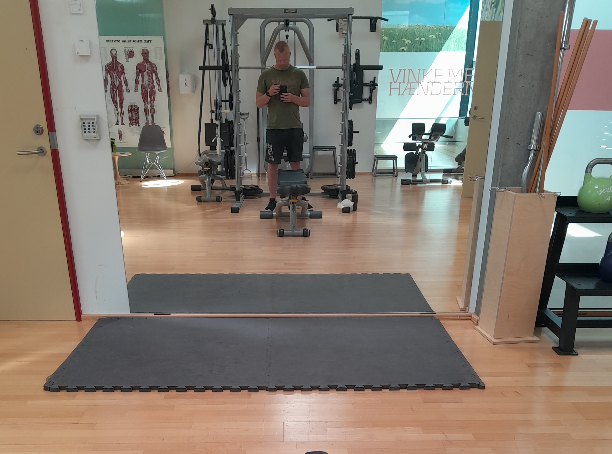

Retspsykiatrisk Afdeling - 2025


Billeder. Afdelingen.
Overflytning til Retspsykiatrisk Afdeling
Vågen og klar
Jeg var oppe klokken cirka kvart i 6 i morges. Jeg forsøgte at sove videre, men uden held, så jeg kunne lige så godt få vasket mig over håndvasken, soignere mig og komme i tøjet. Jeg var hurtigt helt parat, havde pakket alt og cellen var i bedre stand, end jeg modtog den.
Afhentet
Kort før kl. 7 åbnede Henrik celledøren og kiggede ind. Han ville bare sikre sig, at jeg var oppe og havde pakket mine sager. Det hed sig, at jeg ville blive hentet kl. 7.00 og ikke kunne nå hverken toilet, bad eller morgenmad. Så da klokken var 7 og celledøren blev åbnet, og der blev ønsket god morgen, stod jeg parat og iført sko, bukser, skjorte og cardigan, og der var slået knuder på de to fyldte affaldssække. Selvfølgelig blev jeg ikke afhentet kl. 7, og først klokken cirka 8.40 blev celledøren åbnet, og der stod to transportbetjente på gangen.
På vejen igen
De spurgte, om jeg selv kunne bære poserne, og jeg svarede bekræftende. Vi gik ned ad gangen, og jeg takkede Henrik for god behandling, da jeg passerede ham, og han takkede mig for god opførsel. Så tog vi elevatoren ned til stueetagen og gik over til den lille barak, der lå i gården få meter fra sydfløjen. Her skulle jeg visiteres, hvilket var meget hurtigt overstået, da de to transportbetjente ikke var så pedantiske, som deres kolleger inden for murene.
Fiksering
De to sække med ejendele blev lagt i bagagerummet på den karakteristiske sortlakerede VW Transporter, med de tonede ruder med tremmer for, den samme model, som jeg kørte til Middelfart i. Jeg tænkte, at jeg ville bede om at få håndjern på forsiden af kroppen. Hvis de sagde, at det skulle være på ryggen, ville jeg bede om at få transportbælte på i stedet. Den første fikseringstype huskede jeg kun alt for godt fra transporten til og fra retten i Glostrup, og det havde givet mig stærke smerter og føleforstyrrelser i højre håndled, samt mærker, der kunne ses dagen efter, mens transportbæltet i forhold til Middelfart transporten havde været så stramt, at jeg ikke kunne trække vejret tilstrækkeligt, men til min store glæde og taknemmelighed blev jeg slet ikke fikseret, jeg satte mig på bagsædet, og så kørte vi.
Først dog kun til modtagelsen, hvor jeg fik mine ejendele samt kontanter fra min fængselskonto udleveret. Tingene blev lagt i bagagerummet på bilen. Den pågældende vagt fra modtagelsen var én, jeg kendte, og som var en rigtig fin fyr. Jeg takkede for denne gang, og han sagde, at jeg skulle passe godt på mig selv. Og så forlod vi Vestre Fængsel. Jeg kiggede på bygningerne og sugede alle indtrykkene til mig, til den ene side så jeg 4. Syds vinduer og til modsatte side det, jeg havde kunnet se gennem sprækkerne i udsigtsspærrende fra cellen.
Det var 1. maj og fremragende vejr med sol og rekordhøje temperaturer, alt var sprunget ud og lysegrønt, og enkelte cyklister var iført t-shirt. Jeg smalltalkede med de to betjente, mens vi kørte ned ad Vigerslev Allé og jeg kiggede på nybyggeriet fra Toftegårds Plads og ud efter. Den ene betjent havde før vi kørte været så flink at give mig en kvart liter kildevand i papkarton, som jeg drak af.
Betjentene fortalte mig om 1. maj og deres tilknytning til fagbevægelsen (de havde deres egen fane), samt at de ville få fri, hvis der ikke var flere opgaver efter de havde kørt mig til Slagelse samt transporteret en anden indsat til Nykøbing Sjælland. Derefter blundede jeg, mens landskabet susede forbi på hver side af motorvejen.
I Slagelse
Pludselig var vi i Slagelse, men ikke en del, jeg kunne genkende. Jeg så Slagelse hospital på højre side, og til venstre kunne jeg genkende Sikringen. Heldigvis drejede vi til højre og ind på hospitalsområdet. Bilen kørte ind ad en port, og så var rejsen endt. Jeg takkede for turen og sagde, at jeg var glad for, at de ikke havde sat mig af på den modsatte side af vejen.
På retspsykiatrisk afdeling
Jeg blev lukket ind ad en dør af en høj, yngre, kvindelig mørkhåret sygeplejerske, der hed M, og en lavere, ældre, hvidhåret og skægget mand, der hed PE. De to betjente bar poserne med mine ejendele og forsvandt ind på afdelingen med dem, mens jeg blev ført ind i et rum, hvor jeg skulle afklæde mig fra inderst til yderst selv og iklæde mig hospitalstøj, selv strømperne måtte jeg skifte.
Afdelingen
Herefter kom jeg ind på selve afdelingen, mens mine ting blev scannet/gennemlyst, og mit tøj blev vasket. Ikke for at det skulle blive ekstra rent, men for at ødelægge eventuelle narkotiske stoffer indsmuglet i tøjet. Jeg blev vist ind på min stue, som var nummer 5. Selve afdelingen lignede til forveksling Sikringen, som jeg havde set den i ‘Agger Indefra’: Lange, brede gange med ret højt til loftet. Der var meget vinduesglas og stort lysindfald og lydene var afdæmpede.
Arkitekturen
Farverne var holdt i lysegrå, mintgrøn og mat rød. Det hele var forholdsvis nybygget. Enkelte steder stod der med store, hvide bogstaver på 30-50 centimeters højde, hvad rummet var tiltænkt. Mit umiddelbare indtryk var et venligt, imødekommende, behageligt, afdæmpet og funktionelt et. Selve afdelingen var en variant af det, jeg havde set ude på den store gang. Der var højt til loftet, store glasvægge, meget lys og et stort areal til de maksimale 12 indlagte patienter.
5-stjernet fængsel
En hyggelig rygehave omkranset af glasvægge i den modsatte ende i forhold til kontoret. En gang rundt om haven, som smeltede sammen i midten af afdelingen til fællesmiljøet og værelser og andre rum uden om gangen. Jeg syntes, at min stue var alt for stor. Den var 8-9 skridt gange 6 skridt, hvilket svarede til cirka tre celler i Vestre Fængsel lagt ved siden af hinanden. Dertil var der bad og toilet i tilknytning til værelset, som også havde en anseelig størrelse.
Mit værelse
Hele den ene væg bestod af to vinduer med udsigt til en have, der omkransede sengestuerne, og som igen var afskærmet af en mur, cirka 10 meter fra mit vindue. Der var hvide vægge og hvidt loft, hvori der sad fem spotlamper, og der stod en seng i midten af rummet op ad væggen, modsat toilettet. Et lille skab i det ene hjørne, en vasketøjskurv, en affaldsspand og en hvid plastik havestol. Et TV var indbygget i væggen modsat sengen og langs vinduespartiet var et skrivebord indbygget i væggen, sammenhængende med en bænk med et tyndt polstret underlag. Sengen kunne hæves og sænkes via en fjernbetjening i en ledning.
Lægesamtale
Første rigtige samtale var med afdelingens faste overlæge, L. Den foregik ret kort tid efter ankomsten. Men allerførst kom en elev ind på min stue med diverse apparater, som hun brugte til at måle mine forskellige såkaldte værdier med. Blodtrykket var 135 over 95, pulsen 85. Temperatur, vejrtrækningsfrekvens og iltmætning var normale. Jeg skulle aflægge en urinprøve med henblik på undersøgelse for misbrugsstoffer, og den var selvfølgelig negativ. Hun foretog målingerne, mens de to kolleger stod ved siden af. Så gik de igen, sygeplejersken blev hos mig og så entrerede L, gav mig hånden og ønskede mig velkommen.
Overlæge L
Hun var en lav, spinkel, venlig og smilende kvinde, nogle år ældre end jeg og med kort blond hår og briller. Hun fortalte, at hun skulle undersøge min fysiske tilstand forud for den egentlige samtale med den behandlingsansvarlige overlæge, under hvilken hun også vil deltage.
Grundig undersøgelse
Hun startede med at spørge mig, om jeg havde nogle fysiske gener, og det eneste, jeg havde at bemærke var, medicinsk allergi over for Strattera (Atomoxetin), som gav mig voldsomt udslæt på begge lægge, samt såkaldte kuskefingre, som generede mig, men ellers havde jeg det fysisk og psykisk udmærket. Hun skrev det ned og undersøgte mig så, ved at lytte på hjerte og lunger, undersøgte mine hænder, lytte og trykke mig på maven, samt i nyrerlogerne. Så undersøgte hun øjenbevægelser og pupillernes reaktion for lys, samt kiggede mig i munden med brug af en tungespatel. Jeg var imponeret over hendes grundighed og professionalisme. Det var første gang nogensinde i retspsykiatrien, at nogen havde udført den obligatoriske objektive undersøgelse. Jeg havde lyst til at fortælle hende det, men undlod, da det så kunne misforstås som forsøg på manipulation.
Samtale med psykiater
Da jeg hørte, at jeg skulle have samtale med Overlægen, fik aLinda hans navn mig til at føle mig dårligt med angst. Jeg havde nemlig hørt meget dårligt om denne retspsykiater, som jeg imidlertid aldrig havde mødt. Vi gik ind i et samtalerum, der lå bag personalekontoret, hvor Overlægen sad parat ved bordet med sin PC foran sig.
Overlægen
Den psykiatriske Overlæge rejste sig, smilede, gav mig hånden og ønskede mig velkommen. Han var af middelhøjde, slank, velplejet og bar briller, var nærværende og velartikuleret. Jeg var i forvejen dødtræt, og det kombineret med mine bange anelser gjorde, at jeg var ret nervøs, omend Ikke så meget, som jeg havde været første gang jeg talte med K og slet ikke så meget, som jeg var før og under hver eneste samtale med GA.
Uden omsvøb
Han lagde ud med at fortælle, at han var meget direkte og sagde tingene uden omsvøb, at han havde underskrevet dommen, samt at hans opgave var at hjælpe mig, især med at forhindre gentagelse af kriminalitet. Han spurgte så, hvordan jeg havde det, og jeg forklarede ham om min kæreste, mine sociale relationer, at jeg havde fået adresse, samt at jeg var psykisk og fysisk velbefindende, men dog en smule nervøs og meget træt.
Min plan
Jeg sagde, at jeg nu var forsigtig optimistisk med henblik på fremtiden, at det dels skyldes min kæreste og dels, at jeg ikke længere havde en retssag hængende over hovedet. Jeg sagde, at jeg nu havde to mål: At være mest muligt sammen med min kæreste, samt at komme i beskæftigelse. I forbindelse med det sidste oplyste jeg, at jeg havde haft en aftale med jobcenteret i Næstved Kommune den 10. April 2025, som de imidlertid havde aflyst, men dog anført, at de ville kontakte mig med henblik på en ny tid, hvilket jeg ventede på at de gjorde.
Overlægens vigtigste budskab var, direkte formuleret af ham selv, at jeg skulle slette mine konti på de sociale medier, altså Facebook, Instagram og LinkedIn, at jeg aldrig måtte skrive til læger eller myndigheder igen, at jeg skulle forsvinde helt fra offentligheden, samt at det var en fremragende idé, at jeg ændrede mit navn. Endelig sagde han, at det var mit store held, at jeg befandt mig i Region Sjælland og ikke i Region Hovedstaden.
Plan
Jeg anførte, at min kæreste også ville have, at jeg slettede mine konti på de sociale medier, og tilføjede, at jeg derfor var helt enige med dem begge, samt at vi allerede havde forsøgt at slette mine konti, men at min kæreste ikke kunne rent teknisk, da jeg var i Vestre Fængsel på daværende tidspunkt, og hun ikke havde min telefon. Vi aftalte, at jeg måtte få besøg af min kæreste hurtigst muligt, at hun skulle medbringe min PC, samt at formålet var at slette mine konti på de sociale medier.
Sletning af SoMe
Det var lidt mærkværdigt, at han var så forhippet på netop dette, men fint med mig, for det var en lille pris at betale for at undgå overgreb og tvang, og komme hurtigt ud, så jeg kunne komme videre med mit liv. Jeg var ligeglad med, hvad Overlægen syntes, men ikke hvad min kæreste syntes, så det var intet problem med mig. Og selvfølgelig havde jeg løbende backup af mine konti og kunne hurtigt genetablere alt indhold, men det sagde jeg naturligvis ikke.
Vigtigst
Så sagde Overlægen det måske vigtigste, det jeg frygtede mest, nemlig behandlingen. Han sagde kort og nøgternt, at han ville fortsætte min sædvanlige medicinering, Og det var så det. En stor sten faldt fra mit hjerte. Jeg takkede for en behagelig samtale og understregede, at jeg var helt enig i behandlingsplanen.
Introduktion til afdelingen
Herefter var det frokost, og jeg fik at vide, at man skulle bestille hvad man ville have, på en lamineret oversigt over forskellige retter. Så hilste jeg på de andre indlagte og talte med de fleste af dem. Dernæst havde jeg en lang snak med min kontaktperson, K, der var pædagog og en gammel bokser, meget venlig og sympatisk at tale med.
Død indlagt
Jeg fik mit nyvaskede tøj, samt de af mine ejendele, jeg måtte have med ind på stuen. Tøjet blev lagt pænt sammen og kom ind i skabet. J, en medpatient, hilste venligt på mig og bød på velkommen. Han fortalte mig, at hans nabo var fundet død i sin seng den foregående morgen. Han var død om natten, formentlig af bivirkninger til medicineringen, sagde J. Han virkede oprigtigt bekymret for sit eget helbred, på grund af de bivirkninger hans egen tvangsmedicin havde givet ham, og jeg kunne godt forstå ham. Jeg hørte J sige til personalet, “I må ikke gøre ham fed” og hentydede til mig.
Første nat på retspsykiatrisk afdeling
Jeg havde været nødt til at sove med en sok over øjnene i nat, fordi der var et vågelys, som jeg ikke umiddelbart kunne slukke, og derudover viste mit TV beskeden ‘signalfejl’ og afgav et svagt lys, efter jeg havde slukket det. Endelig var gardinerne tynde og hvide og skærmede ikke for solen, som stod op meget tidligt om morgenen. Jeg blev tilset hver time natten igennem, fordi det var standardprocedure for alle nyankomne patienter og jeg vågnede to gange ved at nattevagten kom og tjekkede til mig.
Første morgen på afdelingen
Jeg var vågen og oppe på cirka kvart over syv og var veludhvilet og frisk. Jeg gik i bad, klædte mig på og så gik jeg ud og ventede på morgenmaden, som blev serveret kl. 8 og bestod af frit valg mellem toast, havregryn, cornflakes, skyr, yoghurt, marmelade, ost, mælk og rugbrød. Kaffe kunne man trække ad libitum i automaten. Jeg hilste i den forbindelse på min kontaktperson i dagvagten, som var en venlig sygeplejerske på omtrent min alder, der hed C.
Betænksomhed
Jeg fik udleveret resten af mit tøj, som var blevet tørretumblet og lagde det pænt sammen i skabet, og ryddede op på min stue. Min kontaktperson i går havde hængt noget af mit tøj til tørre, frem for at tumble det, fordi netop dette tøj ikke havde særligt godt af det og skjorterne havde han desuden vasket på skåneprogram. Jeg takkede ham i dag for at være så betænksom.
Morgenrutinen
Efter morgenmaden fik jeg foretaget EKG og blodprøvetagning og så var der morgenmøde kl. 8.45, som fysioterapeuten varetog. Han havde medbragt en mindre bluetooth højtaler, som han satte musik på, og derefter kunne man tilmelde sig dagens aktiviteter. Jeg var nyankommen og havde ikke fået tilladelse til at deltage i alle aktiviteter, men jeg måtte gerne komme på gåtur i 15 minutter i den såkaldte spartsgård ledsaget af C og K.
Lægesamtale med L
Jeg fik i løbet af formiddagen heldigvis godkendelse til at komme i træningsrummet, hvor jeg trænede bryst og triceps. Herefter var der samtale med overlæge L, hvor vi gennemgik behandlingsplanen og jeg fik tilladelse til at komme i svømmebassinet. Herefter gennemgik L en liste med eventuelle medicinbivirkninger, men jeg havde ingen bivirkninger af præparaterne, i hvert fald ikke af Concerta.
Første eftermiddagsmøde
Klokken blev 15.45 og vi skulle vælge aftensmad og kl. 16.00 var der eftermiddagsmøde, hvor vi som til morgenmøde skulle tilmelde sig aktiviteter. Jeg tilmeldte mig igen et kvarter i sportsgården og efterfølgende fik jeg lov til at tale med min kæreste. Før jeg gik i seng, var sosu Am, der var min kontaktperson, sød at lade mig laminere fotos af min kæreste, hun havde sendt til mig, mens jeg var i Vestre Fængsel, og endelig fik udleveret min tandtråd.
Brev til Overlægen
Jeg skrev nedenstående i hånden og afleverede siderne til personalet, som igen sørgede for at både Overlægen og L læste dem. De sociale konsekvenser af den alvorlige, åbenlyse psykiatriske fejldiagnose havde været så grelle og langvarige at de havde udgjort en trussel mod mit liv og helbred. I det lys var min reaktion, som udelukkende havde været ord, afdæmpet. Jeg havde mødt mange kriminelle efterhånden, og de færreste ville have nøjedes med ord, havde de været i min situation. Jeg skammede mig ikke over de ord, jeg i de sidste 10 år havde brugt ofte i afmagt og desperation og som sidste udvej efter alt andet var forsøgt først.
Kommentarer til behandlingsplan
"Ad aktuel dom
Jeg er dømt for tre overordnede forhold: “2021-forholdene”, “2023-forholdene” og “2025- forholdet” (mine betegnelser).
“2021-forholdene”
Vedrørende “2021-forholdene”, var der tale om angiveligt freds- og ærekrænkelser af læger, idet jeg offentliggjorde og rundsendte mit vidnesbyrd fra især indlæggelsen på Q81 Retspsykiatrisk Afdeling i Glostrup fra november 2018 til april 2019, samt dokumentation for, at jeg aldrig har været sindssyg eller i en ligeartet tilstand. Det var jeg nødt til, da jeg på pågældende tidspunkt var underlagt en behandlingsdom uden længstetid for noget, jeg ikke fejlede eller modtog behandling for, da jeg forinden forgæves havde forsøgt at få den ophævet (med overlæge Ps billigelse) og da jeg qua dommen var tvunget arbejdsløs og hjemløs.
“2023-forholdene”
“2023-forholdene” drejede sig om, at 2021-sigtelserne satte lægeautorisationsgenerhvervelsesprocessen i bero (påbegyndt efter ophævelse af behandlingsdommen i september 2021), samt fastholdt mig hjemløs og uden fremtidsudsigter.
Jeg boede på Sundholms Natherberg en måned, indtil jeg fandt et værelse, jeg kunne leje i tre måneder, hvorefter jeg var tvunget til at bo i et telt på Kalvebod Fælled i cirka halvandet år. Jeg var i et år i denne periode aktiv hver dag i Medieværkstedet på Kofoeds Skole, hvor alle var klar over, at jeg absolut ikke var spor psykotisk, men derimod helt normalt (jf. udtalelse fra personalet).
Min sociale situation var uholdbar, jeg havde flere gange uden held bedt om at få sagen for retten og da jeg i efteråret 2023 ikke orkede at tilbringe endnu en vinter i teltet, sendte jeg en mail til min advokat (Karoline Normann), til anklageren og til DUP’en, hvori jeg skrev, at jeg ikke kunne holde situationen ud længere, at sagen skulle afgøres, og at jeg var ligeglad med, om jeg så fik livsvarigt fængsel for 2021 forholdene, for ellers begik jeg snart selvmord. Det resulterede i anholdelsen den 8. november 2023 pga. trusler. Men det var ikke trusler, hverken intention eller ordlyden, og Karoline Normann sagde i retten, at hun på ingen måde opfattede mailen som en trussel.
Jeg var først tre måneder i Vestre Fængsel, hvor jeg fungerede fint og var gangmand (en slags betroet stilling). Herefter blev jeg overflyttet til P7 i Middelfart i februar 2024 til mentalobservation i over en måned, hvor overlæge K konkluderede, at jeg ikke var psykotisk eller i en ligeartet tilstand. Jeg blev udskrevet/løsladt direkte til gaden uden en krone på lommen den 15. marts 2024 i Middelfart.
Efter nogle dage som hjemløs i teltet (EKI kunne ikke hjælpe mig), måtte jeg finde et forsorgshjem, og Saxenhøj var dét, der lå tættest på, som havde plads. Jeg var der i cirka tre måneder, indtil jeg havde råd til at betale for en meget billig hotellejlighed på Amager. I løbet af sommeren 2024 mødte jeg min nuværende kæreste, som jeg flyttede uofficielt ind hos ultimo august 2024. Jeg var sammen med hende hver eneste dag, indtil jeg blev anholdt den 14. januar 2025.
“2025-forholdet”
“2025-forholdet”. Det gik rigtig godt at bo hos min kæreste, men den stadig uvisse dato for retssagen var en tiltagende belastning, og jeg frygtede, at jeg ved at få en behandlingsdom ville miste min kæreste, samt blive udsat for trusler om uberettiget og ikke-indiceret antipsykotisk tvangsmedicinering eller ligefrem udførelsen heraf.
Jeg hverken er eller har været spor sindssyg/psykotisk eller i en ligeartet tilstand, hvilket er åbenbart for alle, især min kæreste, som nok ville have opdaget det, havde det været tilfældet. Men derudover var det en enorm belastning, at jeg løb tør for penge cirka midt i måneden, selvom jeg levede yderst spartansk. Min kæreste var delvist nødt til at forsørge mig, hvilket var meget skamfuldt for mig og helt urimeligt over for hende. Jeg kunne ikke invitere hende ud, og vi havde ikke råd til noget andet end det mest nødvendige.Sådan var det hver eneste måned.
Jeg søgte hen over efteråret og vinteren cirka 40 ufaglærte jobs uden held: Havemand, arbejdsmand, vinduespudser og rengøringsassistent, juletræssælger og opvasker. Jeg var til jobsamtale som ufaglært plejer på et plejehjem, som gik rigtigt godt og hvor jeg ville få stillingen, hvis jeg bare sendte min uplettede straffeattest. Jeg bestilte den elektronisk og så at den var plettet, og desuden læste jeg indkaldelsen til hovedforhandlingen den 26. februar 2025. Begge dele var så stort et chok for mig, at jeg brød grædende sammen for første gang i mange, mange år. Det var den 5. januar 2025.
Jeg følte, at mit liv var endegyldigt forbi, og at jeg med sikkerhed ville miste min kæreste. Umiddelbart herefter skrev jeg det, på min private blog, som jeg er dømt for. Det vidste min kæreste dog intet om, men hun opdagede, at jeg var brudt helt sammen. Jeg fortalte hende om straffeattesten, retssalen og frygten for at miste hende. Min kæreste trøstede mig og indgød mig håb. Hun sagde. at hun ikke ville forlade mig og jeg fik det godt igen i løbet af nogle timer.
Jeg fortrød det, jeg havde skrevet på min blog og slettede det igen. Jeg havde specifikt ikke skrevet hverken navne eller profession på dem, man mente der var rettet trusler mod. Jeg skrev det for at få afløb for mine frustrationer. Jeg skrev kun til mig selv. Jeg slettede det igen, og jeg anede ikke at nogen fra Region Hovedstaden havde fulgt med i alt, jeg skrev på bloggen og nåede at tage et skærmbillede af det, inden jeg slettede teksten.
Det var utrolig dumt, det jeg skrev både i mailen og på bloggen. Jeg fortryder det bittert og jeg kunne ikke drømme om at gøre noget lignende igen. Men jeg nægter at have truet nogen. Det har jeg faktuelt ikke gjort, og det har aldrig været min hensigt.
Diagnosespørgsmålet
Jeg har i - al ydmyghed og med respekt for jeres lægefaglige professionalisme - ikke været psykotisk eller i en ligeartet tilstand på noget tidspunkt, ligesom jeg heller ikke er personlighedsforstyrret. Man har givet mig fejldiagnosen ‘enkel paranoia’, men dels lider jeg ikke af vrangforestillinger, og dels har jeg over 15 år været i antidepressiv behandling med Venlafaxin, fordi jeg faktisk har en depression, hvilket også udelukker enkel paranoia.
Følgende psykiatere har skriftligt erklæret, at jeg ikke har været psykotisk eller en ligeartet tilstand: SBJ (2016), HJ (2017), BH (2018), HR (2020), PWJ (2019-2022) og KB (2024). Desuden har retspsykolog I i 2019 (på SHH) også konkluderet dette.
Under den aktuelle retssag den 26. februar 2025 indkaldte forsvareren overlæge og retspsykiater, P, der afgav sit vidneudsagn, som lød, at jeg på intet tidspunkt havde været psykotisk. Skulle I finde det relevant, har I mit samtykke til at udveksle oplysninger om mig med P. Jeg er ham utrolig taknemmelig for som den eneste at turde forsvare mig offentligt, ved at sige det, der er så åbenlyst. I er også velkommen til at indhente oplysninger fra Vestre Fængsel om mig.
Vedrørende opsummering og aftale
Jeg skriver kun alt dette, fordi jeg blev bedt om at læse behandlingsplanen og eventuelt kommentere den. Det er fint nok og I skal sikkert tilbyde mig det. Men jeg ville helst være fri for det. For mig handler det ikke om at få “ret”, og jeg er ikke “krænket”. Jeg er ked af det, jeg skrev. Det skulle jeg ikke have gjort, uagtet at jeg ikke har truet nogen konkrete personer. Det eneste, jeg ønsker, er at leve normalt liv med mine venner, min familie og især min kæreste, som det normale menneske jeg er og altid har været, uden flere retssager hængende over hovedet og uden falsk sygeliggørelse, samt latente trusler om tvangsmedicinering.”
Diverse
Til morgenmødet tilmeldte jeg mig sportsgården og fitness om eftermiddagen. Jeg var kortvarigt i det såkaldte krearum med pædagog J, hvor jeg kiggede på playstation og spillede Red Dead Redemption 2, samt opdaterede softwaren på maskinen.
Fysisk aktivitet
I sportsgården kl. 11.00 gik jeg rundt med en mandlig pædagog og en yngre kvindelig ansat. Så var der frokost kl. 11.30 og efterfølgende eftermiddagsfitness fra klokken 13 - 13.30 med medpatient K og to oppassere fra personalet med deres respektive mobiltelefoner, som de var dybt optaget af, mens jeg og medpatienten trænede ryg, og hørte Metallica på anlægget.
Eftermiddag
Senere på eftermiddagen spillede jeg det dødssyge brætspil Partners med J, K og et medlem af personalet. Partners var en slags videreudvikling af Ludo, og et spil, der var meget populært til min store overraskelse.
Trænede med ledsagelse
Jeg læste i romanen “Uro” af Jesper Stein og lavede kryds og tværs efterfølgende. Så var der aftenfitness klokken halv syv, hvor jeg trænede biceps og mave. Jeg var ledsaget af den tidligere fængselsbetjent AK, som havde været ansat på P7 i Middelfart samt i Vestre Fængsel for år tilbage, og sygeplejerske L.
Jeg trænede biceps og mave under ledsagelse.
Overvåget besøg
Aftensmaden blev serveret klokken 17.30, hvorefter jeg spillede kortspillet 500 med sygeplejerske L og AK, samt J, som var den eneste kvindelige indlagte. Så var der besøg af min kæreste, som skulle foregå overvåget af personalet, som var sosu AM og kun varede en halv time. Sådan var proceduren første gang man havde besøg af en pårørende. Min kæreste medbragte min PC, samt slik og sodavand, og mens AM så på, slettede jeg min LinkedIn-, Instagram- og Facebookkonto. AM noterede det i journalen til Overlægen. Det var sådan set ikke mit valg at slette de lovlige konti, men jeg følte mig tvunget til det af førnævnte.
Diverse
Til eftermiddagsfitness trænede jeg ben og skuldre og forinden var jeg på formiddagstur i sportsgården med pædagog J og sosu N. J og jeg talte om Sønderjylland og Haderslev, især i forbindelse med besættelsen af Danmark og J fortalte mange interessante anekdoter fra sin familie, som havde boet i byen på daværende tidspunkt. Efterfølgende vaskede jeg tøj og eftermiddagsturen i sportsgården foregik med sosu N og en vikar.
Aftenfitness
Om aftenen var der en halv times fitness med AM og AK. Jeg trænede skuldre og ben, og talte med AK om hendes løbeskade, som hun glædede sig til at hun var kommet sig over. Jeg læste romanen ”Uro” af Jesper Stein færdig og sad så og lagde lidt puslespil i fællesmiljøet, nærmest for sjov. Jeg skrev mine kommentarer til behandlingsplanen færdig og afleverede dem til sosu AM til aften. Før sengetid talte jeg i telefon med min kæreste og fik skiftet linned, samt vasket gulvet med en svamp, vand og sæbe som i forgårs og i går.
Statsministerens tale
Jeg så statsministerens fjerde maj tale live transmitteret fra Mindelunden. Det var en smuk og rørende tale. Der var ganske få overlevende frihedskæmpere tilbage, og nogle sad i Mindelunden som tilhørere. Om få år var ingen af dem tilbage.
Danmark svigtede
Jeg havde meldt mig til hjemmeværnet, fordi jeg selv ønskede at kæmpe for Danmark, hvor lille et bidrag jeg end kunne yde, men efter at Danmark havde ødelagt mit liv, var min nationalitetsfølelse aftaget temmelig meget. Danmark gad ikke at kæmpe for mig, så hvorfor skulle jeg røre en finger for Danmark? Det var sørgeligt at det var sådan og ikke mit valg, men Danmarks.
Skuffet over afslag
Omkring klokken 10.30 bankede det på døren, og sygeplejerske N stak hovedet ind. Det var nu godkendt, at min kæreste kunne komme på uovervåget besøg, men PC og mobil måtte jeg stadig ikke få udleveret. Det var en enorm skuffelse, for jeg havde glædet mig utroligt meget til at bruge internettet og lytte til musik og podcasts – samt især til at kommunikere med min kæreste. Overlægen havde ikke godkendt det endnu.
Fortørnet og rastløs
Jeg blev meget fortørnet, for jeg havde jo slettet mine konti på de sociale medier som aftalt, og det var dødssygt at være på afdelingen. Jeg havde læst en af de få nogenlunde interessante bøger, der fandtes på afdelingen, og der var nu ikke rigtig mere at tage sig til.
Mødet med overlæge L
Jeg gik ud i fællesmiljøet og hen til kontoret, hvor overlæge L stod og talte med nogle sygeplejersker. Hun løftede hånden til hilsen og kiggede på mig med sit teflonsmil. Jeg smilte anstrengt tilbage, og hun kom over til mig. Jeg spurgte til, hvornår jeg kunne få min PC og mobiltelefon udleveret, og hun sagde, at det måtte ske, når Overlægen havde talt med mig igen. Jeg kunne ikke skjule min ærgrelse og vendte om og gik igen uden at sige noget.
Giftig facade
Overlæge L virkede super overfladisk venlig, men jeg havde hørt fra andre indlagte, at hun var giftig, og at skinnet bedrog. Jeg vidste godt, at hun var en, jeg skulle være påpasselig med, men det var alligevel godt at få det bekræftet.
Samtale med Overlægen
Kort efter frokost blev jeg kaldt til samtale med Overlægen. En sygeplejerske kom og hentede mig, netop som jeg havde gået to runder i sportsgården ledsaget af to ansatte. Jeg var en smule nervøs, men mest af alt fortørnet over afslaget på at få min PC og mobil. Inde i mødelokalet sad Overlægen og overlæge L allerede parat. Overlægen lagde straks smilende og karikeret overstadigt ud med sin indøvede indgangsremse: “Jeg siger tingene direkte,” som en papegøje.
En måned uden net
Han ville gerne fortælle “direkte”, at der skulle gå en måned, før jeg fik lov at få udleveret min PC og min mobiltelefon. Han havde læst mine kommentarer til behandlingsplanen, og det var helt fint, sagde han, og nu var de vedlagt den officielle behandlingsplan indskrevet i min journal. Han syntes, det var en god idé, at jeg havde kategoriseret forholdene. Men i forhold til at forsvinde fra offentligheden var det ikke nok, at jeg havde slettet mine konti på de sociale medier – jeg skulle permanent helt væk fra nettet.
Forbud mod København
Han sagde, at han stolede på mig, men hvis nu statsadvokaten ringede til ham, skulle han kunne sige, at jeg ikke var på nettet. For han var nemlig blevet “kontaktet af en forening, som ofrene var medlem af”, som havde ønsket dette. De havde endnu et ønske: at jeg ikke måtte komme til København, så de slap for at møde mig ved et tilfælde.
Falsk hjælp
Overlægen understregede, at hans opgave var at “hjælpe mig”, og at det kun var derfor, jeg ikke måtte få min PC og mobiltelefon udleveret eller komme i nærheden af København. Det med udelukkelse fra internettet var begrænset til en måned, men det andet var ikke. Jeg spurgte direkte, hvor længe det skulle gælde. Ganske vist havde jeg ikke umiddelbart ærinder i København, men det kunne jo være, at behovet engang opstod, og så ville det være rart at måtte tage derind uden at risikere tvangsindlæggelse, blot fordi en af de svin, der havde mishandlet mig og ødelagt mit liv, tilfældigvis fik øje på mig.
Et rovdyrs smil
Jeg havde intet valg andet end at smile og takke Overlægen. Han var en farlig mand – utrolig karikeret, intens og smilende som et rovdyr. Manipulerende og intelligent nok til at undgå at sige noget helt konkret om personer og myndigheder. Han prøvede at manipulere mig til at tro og føle, at han var på min side, og at jeg havde medbestemmelse over min situation. At restriktionerne var til min fordel og at han havde indført dem for at “hjælpe” mig.
Lært lydighed
Jeg lod som om, jeg troede på det, han forsøgte at bilde mig ind, og kiggede på ham med et fast blik, for at give indtryk af oprigtighed. Jeg havde lært at forfinge lydighed uden at fortrække en mine, mens jeg i virkeligheden tænkte og følte noget ganske andet. Overlægen sagde dog i en bisætning, at der ikke skulle ske ændringer med min medicin, hvilket var helt essentielt for mig at få at vide. Dermed havde han også accepteret, at jeg intet fejlede psykisk, hvilket var meget positivt.
Friheder mod rettigheder
Det var pudsigt, men gav egentlig god mening, at Overlægen på den ene side sagde, han talte lige ud af posen, men på den anden side behændigt undgik at sige noget konkret. Han handlede med små og ubetydelige “friheder”, men fratog mig samtidig mine helt grundlæggende rettigheder: retten til fri bevægelighed, retten til ikke at blive umenneskeligt og nedværdigende behandlet, retten til selvbestemmelse over eget liv og egen krop, samt retten til ikke at blive falsk sygeliggjort.
Falske gaver
Samtidig prøvede han at få mig til at tro, at han var min ven, og kastede et par mindre goder til mig, såsom tilladelse til at gå i Netto og i netcafé og spille Counter Strike. Det var en ligegyldig kompensation for, at jeg ikke måtte komme på nettet i en måned. Jeg sad og lod som om jeg rent faktisk gad at spille CS, mens Overlægen smilende begyndte at fortælle mig, at man spillede mod andre retspsykiatriske patienter på Sikringen og Risskov, samt at det gjaldt om at vinde for at holde afdelingens ære i hævd. Vi grinede alle tre påtaget og falsk, så skuespillet blev opretholdt.
Et tåbeligt spørgsmål
Til sidst spurgte han, hvad personalet skulle gøre, hvis jeg blev “skuffet igen”. Det var et tåbeligt spørgsmål, al den stund at det jo netop var Overlægen og hans usaglige “behandling” og de af Lægeforeningen dikterede restriktioner, der var årsagen til mine frustrationer. Jeg svarede selvfølgelig det, han ville høre: At jeg var glad for at have en tidshorisont for hvornår jeg ville få adgang til nettet, at jeg selvfølgelig sagtens kunne forstå hans “fornuftige strategi”, og at livet uundgåeligt bød på frustrationer, hvilket skete for alle.
Svinene i Lægeforeningen
Så var samtalen slut. Overlæge L sagde intet under samtalen. Hun havde intet at skulle have sagt. Det var Lægeforeningen, der via Overlægen besluttede min skæbne – altså de svin, der havde fejldiagnosticeret mig og ødelagt mit liv.
Nedtrykthed og træning
Jeg var utrolig nedtrykt efter samtalen, meget modløs og vred, men jeg lod mig ikke mærke med det. Jeg trænede mave, bryst og triceps bagefter, og det var vist meget godt. Der var en times træning i dag og to andre patienter, begge massivt overvægtige yngre mænd, kom kortvarigt ind med deres oppassere, men gik hurtigt igen, så jeg var aLinda.
Madgruppe
Derefter var det tid til madgruppe med fysioterapeut L fra vores afdeling og fysioterapeut K fra en anden afdeling, samt min medpatient K. Retten var biksemad, og det gik fint. Vi sad og spiste på gangen, mens personalet kom forbi med påtaget opmuntrende bemærkninger som: “Nej, hvor det dufter godt.” Fornedrelsen var til at brække sig over, og jeg blev endnu mere modløs.
Besøg
Heldigvis kom min kæreste på besøg kl. 15.00 i en time uden overvågning. Det var skønt at have hende for mig selv, men mit forløb havde taget hårdt på hende, og det havde jeg det rigtig dårligt med.
Modløs aften
Jeg var fortsat nedtrykt og meget modløs om aftenen. Mit had var større end nogensinde, og det samme var mit behov for genoprejsning. Overlægen var efter min bedste overbevisning uden psykologisk indsigt og forstod ikke, hvordan mennesker reagerede.
Ingen skuespil
Jeg gad ikke længere være med i skuespillet med kortspil eller puslespil for at demonstrere “normalitet”. Overlægens strategi kom ikke til at virke – han gjorde det meget værre. Jeg havde endegyldigt besluttet mig for, hvordan alt dette skulle ende. Hvad bildte han sig ind? Jeg skulle nok tage til København, og det ragede ikke ham.
Brev til Folketingets Retsudvalg
Jeg skrev til Folketingets Retsudvalg og fik en yngre kvindelig sygeplejerske til at kopiere behandlingsplanen og mine kommentarer til den under påskud af, at det var for at give begge dele til min kæreste i morgen. Det var det ikke. Det var for at lægge det med breveet til Retsudvalget, så de kunne modtage det hele. Jeg vidste, at Retsudvalget ville skide på mig, men i det mindste var det min dokumentation, som kunne udleveres til en journalist, som anmodede om aktindsigt. Psykiateren havde til mødet sagt, at han ville fortsætte Ps gode arbejde med mig. Jeg nikkede ivrigt mens jeg tænkte..
Drama
Umiddelbart efter aftensmaden opstod de første episoder. J, J, K og jeg sad om spisebordet og slog mave, da en af de ansatte, K – en stor, soldateragtig, tatoveret mand, der var fast vikar – pludselig rejste sig og gik ud i haven. Samtidig kunne jeg høre ophidsede stemmer fra B og J, hvor førstnævnte var den, der lød mest ophidset og tydelig, og som kom med tilsvininger og det, der var værre, af J. Senere på aftenen var det den nye patient N, der hidsede sig op, så han blev ført ned på sin stue af personalet.

Billede. Ut. i besøgsrummet.
Bordtennis med fysioterapeut
Til morgenmødet spurgte jeg fysioterapeuten L, om han var frisk på at spille bordtennis med mig. Jeg havde endnu ikke set nogen af de indlagte spille bordtennis eller bordfodbold. L viste sig at være super god til bordtennis, da han havde gået til det i mange år, men han var dog så pædagogisk, at jeg ikke erfarede det under første del af spillet, da han spillede efter mit forholdsvis lave niveau. Det var meget betænksomt af ham, og jeg fandt kun ud af det, fordi han fortalte mig det, efterhånden som han øgede sit niveau. Efter bordtennis var jeg i sportsgården med ham og et andet personale, og så fik jeg besøg af min kæreste i en time i afdelingens besøgsrum.
“Hvorfor er du så her?”
Jeg faldt i snak med J efter frokost, og hun spurgte mig, hvilken type medicin jeg fik. Jeg fortalte hende det, og hun svarede lidt overrasket, at hun og alle de andre fik antipsykotika. Så spurgte hun, om jeg havde haft en psykose, og da jeg svarede nej, sagde hun: “Men hvad laver du så her?”. Jeg svarede, at det vidste jeg heller ikke. Men jeg tænkte, at det vidste jeg jo godt, jeg kunne bare ikke sige det højt.
Rygtræning
Jeg var træt og ville forfærdelig gerne sove, og det lykkedes mig også i korte øjeblikke, men jeg havde sagt ja til at deltage i rygtræningen kl. 15.30, så jeg måtte stå op og gå gabende ud i fællesmiljøet, hvor fysioterapeut L hentede medpatient J og UT. Vi gik ned i hallen, hvor der allerede befandt sig to medpatienter og to yderligere fysioterapeuter.
Gjorde træningscircuit
Der var lagt en række træningsremedier spredt ud i rummet, som skulle bruges til hver sin øvelse. Man skulle udføre hver øvelse i 30 sekunder efterfulgt af en kort pause, under hvilken man roterede til næste øvelse. Der var ni i alt. Vi nåede to runder af alle øvelserne og sluttede af med udstrækning og mobilitetsøvelser. Vi var tilbage på afdelingen cirka kvart over fire. Det var ret varmt i dag, solen stod ind ad de store vinduespartier, og varmen gjorde os sløve, dvaske og ugidelige.
Vi gennemførte to runder og blev dvaske i varmen.
Energidrikke ingen effekt
Jeg havde drukket samtlige energidrikke, min kæreste havde medbragt, hvilket var mange, foruden sodavand og aLinda i dag var der røget for mange ned. Men de havde ikke haft nogen effekt, for jeg var totalt træt og modløs. Jeg havde brug for at træne i svær grad og glædede mig til den halve times aftentræning, der var mulighed for kl. 18.30. Der var overhovedet ikke travlt på afdelingen, og jeg havde tilmeldt mig til aftenmødet kl. 16.00, som man skulle.
Aflyst træning
Kort før træningen kom R, den lille tidligere specialskolelærer, hen til mig og spurgte, om det ikke var okay, at træningen blev droppet, så de kunne gøre noget andet. Jeg havde virkelig svært ved at sige nej, så jeg sagde, at hvis det ikke kunne være anderledes, så måtte det jo være sådan. Men jeg forklarede, at det betød virkelig meget for mig. Jeg fortrød lige efter, så jeg gik hen til kontoret og sagde til nogle af hønsene, der sad og hyggede og sludrede, at jeg ville være taknemmelig for et kvarters træning, hvis det trods alt var muligt. To af hønsene kiggede på hinanden, og den ene - K - sagde forundret, at der altså altid var træning kl. 18.30.
Personalet taget fejl
Hurtigt viste det sig, at R havde taget fejl, og at fitness havde første prioritet i forhold til alle mulige andre aktiviteter på afdelingen. Så slap man også for at skulle føle sig tvunget til at undvære noget, man utroligt meget havde brug for, af høflighed. Derfor kom jeg alligevel med og trænede med R og K som vagter. Jeg trænede ryg og biceps i et intensivt og komprimeret program og havde det helt fantastisk dejligt, både under og efter. Jeg var vant til træning hver dag, så det var svært at undvære, især nu hvor det begyndte at blive ulideligt igen.
Paranoid sikkerhed
Det var den bedste psykiatriske afdeling, jeg havde været på, men jeg slap ikke for den paranoide sikkerhed ved altid at have to ansatte, der fulgte mig konstant, når jeg forlod selve afdelingen for at gå ned i træningslokalet, den falske sygerolle, de ansatte pressede ned over mig, og den tidsubestemte horisont.
Kritiserede retspsykiatrien åbenlyst
J og J sad ofte og kritiserede retspsykiatrien åbenlyst i fællesmiljøet, og jeg istemte deres kommentarer. Vi vidste alle tre, at personalet sad og lyttede med og noterede vores kritik i vores respektive journaler, men vi var lidt ligeglade. J jokede ofte med, at personalet "BVC-scorede" ham, hvis han var utilfreds med forholdene, og det var god humor.
Ulideligt sted
Det var et ulideligt sted at være, og der var kun få og infantile aktivitetsmuligheder, såsom PlayStation (overvåget af personale), puslespil, kortspil og den slags idioti. Selvfølgelig var der et stort og dyrt sanserum, som kun én patient benyttede sig af en gang imellem, kreativitetsrummet blev aldrig rigtig benyttet, og personalet anede ikke engang, hvad det indeholdt, så de dyre faciliteter gad ingen at bruge, heller ikke bordtennis og bordfodbold.
Vaskedag
Jeg var dødtræt efter endnu en nat med dårlig søvn, men jeg stod op før morgenmaden, som jeg plejede, og opførte mig nærværende, vågen og velbalanceret. Det var min vaskedag i dag, hvilket jeg var klar over og forberedt på, idet jeg havde fået min kæreste - sød som hun var - til at købe vaskemiddel til mig, som var blevet scannet i går og lagt i min kasse til mig i vaskerummet.
Dobbelt besked
Som det var sædvane i retspsykiatrien, fik jeg af to forskellige personaler en påmindelse om, at det var min vaskedag, serveret på en venlig og let nedladende måde, som om jeg var retarderet og ude af stand til at være opmærksom på og huske den slags banale ting selv.
Brev til psykiater
Jeg havde fået den idé, at det måske var muligt at bruge E-sports gamer-PC’en til at indskrive min dagbog (jf. brevet) og jeg afleverede det til min kontaktperson, N, og bad hende om at give det videre til L, som var overlæge og psykiater på afdelingen, og som var hende, der oftest var til stede i hverdagen. Jeg gik ind og lagde mig i sengen og læste Bengt Holsts biografi, hvorefter det bankede på døren og N kiggede ind.
Mistænksomt personale
Hun havde papiret i hånden og sagde, at det ikke kunne lade sig gøre, da de computere ikke måtte bruges til andet end Counter-Strike. Hun belærte mig om, at jeg skulle være tålmodig og vente til om en måned, hvor jeg måske fik lov til at få min mobil og PC igen. Jeg rettede hende og sagde, at det ikke var "måske", men en klar aftale, samt at der kun var tre uger til. N vidste ikke noget om at være tålmodig, men det var omsonst at prøve at forklare hende, hvad jeg havde været udsat for af afsavn og ventetid.
"Skriver du stadig dagbog?”
"Skriver du stadig dagbog?", ville hun vide. Efter samtalen med Overlægen var jeg klar over, at en bekræftelse på det spørgsmål ville blive skrevet ind i min journal og viderebragt til Overlægen og medføre sundhedsfarlige repressalier. Så jeg spurgte N, om jeg da ikke måtte gøre det. N stod et øjeblik og overvejede, hvad hun skulle svare. Så sagde hun: "Jo, jeg vil bare tilbyde dig papir og en kuglepen." Idet jeg jo skrev dagbog allerede, fremgik det vel implicit, at jeg havde begge dele i forvejen, så jeg takkede nej på en venlig måde til begge dele, hvorefter hun gik igen.
I sportsgård
Så var det tid til en tur i sportsgården. Men forinden satte jeg tøj over, idet jeg gjorde mig stor umage med at fortælle N, at jeg plejede at vaske på så og så mange grader og jeg delte tøjet op i kulørt og hvidt, hvad jeg ellers aldrig plejede, men aLinda for at skære ud i pap, at jeg havde et normalt funktionsniveau, ligesom jeg også valgte et skånsomt program til de hvide skjorter og rensede filter i tørretumbleren, mens N stod og kiggede på. Jeg gik et par tusind skridt i sportsgården, mens N og L gik og sludrede sammen.
Venlige afslag
Det handlede om at sige fra på en venlig og pædagogisk måde, så de ikke skrev i journalen, at jeg var nedladende og devaluerende. Senere sagde jeg også til N, da hun kom forbi min stue for at minde mig om, at alt tøjet var ved at være færdigt, at det var sødt af hende, men at jeg selv havde styr på den slags. Måske tog hun det ikke godt, for selvom jeg var høflig, så var det en afvisning.
Forstyrret efter bad
Sygeplejerske N stak hovedet ind på stuen, netop da jeg havde været i bad og var iført t-shirt og boxershorts. "Undskyld. Jeg vidste ikke, at der var morgenmøde nu," forsvarede jeg, at jeg ikke var ordentligt påklædt. "Nej nej, jeg ville bare høre, om den dér lap papir, du gav Na går, om du stadig har den?”. “Øhh, jeg tror, jeg har den liggende et sted, men hvorfor spørger du om det?".
Talte med N om Overlægen
"Det er bare fordi, jeg vil scanne den ind, så Overlægen kan læse den," sagde N. "Nå, okay, det behøver du ikke, for det kunne jo alligevel ikke lade sig gøre, så det er fint nok," svarede jeg. "Nej, det er mere, så Overlægen kan læse, hvad du tænker," lød det. "Det behøver du ikke at gøre, det kan være lige meget." "Jeg har en tid til næste lægesamtale med Overlægen. Jeg vender lige tilbage med datoen," fortsatte N. "Storartet, vi tales bare ved så," afsluttede jeg.
N fortalte, at næste lægesamtale med Overlægen var på vej.
Morgenmøde
Medpatient J tog en pose med kanelgifler og en energidrik op fra skuffen. Det var hans morgenmad, og personalet kritiserede og hånede ham for den usunde diæt. Jeg hadede, at fysioterapeut L spillede høj musik til hvert morgenmøde, to numre hver gang, som vi var tvunget til at sidde og lytte til.
Snager
Efter morgenmødet blev vi siddende omkring bordet i fællesmiljøet og forsøgte at vågne. Vi kunne ikke rigtigt tale frit sammen, fordi der altid stod eller sad mindst to ansatte og gloede på os, lyttede med og noterede alt vi sagde, som de kunne bruge imod os.
Om lægesamtale
Lidt over kl. 10 kom Nina ind på min stue igen. Hun overrakte mig en post-it med teksten "Lægesamtale den 30. maj kl. 12 - 12.30" og understregede, at jeg bare skulle sige til, hvis jeg havde brug for Overlægens hjælp, for så kunne han lige kigge forbi. Jeg takkede venligt for sedlen, idet jeg sagde, at jeg ikke havde behov for Overlægens hjælp til noget. At det kun handlede om at komme væk fra retspsykiatrien hurtigst muligt, men at jeg selvfølgelig godt vidste, hvad hun mente, og satte pris på tilbuddet.
Grebet af fortvivlelse
Jeg lå og kiggede på sedlen og tænkte, at der var alt for længe til den 30. maj. Jeg tænkte på min kæreste og om, hvor meget hun havde brug for, at vi var sammen, og hvor meget jeg havde brug for det også. Jeg blev helt modløs, så jeg gik ud af værelset og hen til kontorets indgang, mens jeg holdt mig bag den gul sorte stribede tape-markering på gulvet, mens jeg afbrød N og L, der henholdsvis stod og sad og talte sammen.
Ni og L
"Undskyld", sagde jeg venligt og roligt, "men kan det lade sig gøre at få lægesamtale før den 30.? Det er bare, fordi det er hårdt at rådne op i 3 uger til.". "Nej, det kan det desværre ikke", svarede sygeplejerske N med et lidt bekymret ansigtsudtryk. "Okay, for jeg har jo allerede rådnet op i otte måneder i varetægt i Vestre i alt og jeg har ventet over tre og et år på retssagen og jeg fejler jo ikke noget”. Men, der var intet at gøre..Nu havde L rejst sig og kom hen til mig og sagde, at jeg kunne skrive mine frustrationer ned til Overlægen, ikke fordi jeg ikke måtte give udtryk for dem overfor dem, men fordi de intet kunne gøre. Jeg sagde, at det var et sødt tilbud, at jeg kunne læsse af på dem, men at det ikke var det, jeg havde behov for.
Ligegyldigt at tale med personalet
Jeg var bare nødt til at gøre forsøget, hvis det havde været muligt at fremskynde samtalen, fordi det var så ulideligt. Men var der ikke noget at stille op, uanset hvad, så var det ligegyldigt for mig at tale med personalet om det. Jeg havde allerede skrevet til Overlægen om det, jeg ville tale med ham om og som lå i min mappe, og jeg ville ikke belemre ham med at skrive det samme til ham flere gange, da jeg så fald fremstod som et brokkehoved. Desuden havde jeg jo også erfaret, at den slags var kontraproduktivt.
Demonstrerede positivitet
Overlægen fortjente ikke, at jeg brugte tid og energi på at appellere til ham. Det ville kun styrke hans magtfølelse og hans sikre afslag ville blot være vand på hans sadistiske mølle. Den sejr og glæde skulle han ikke have. Han var ikke noget særligt i min optik, og jeg var på ingen måde benovet eller imponeret over ham. Umiddelbart herefter var det tid til at komme i sportsgården. Jeg vidste, at en episode med utilfredshed altid skulle efterfølges af, at jeg demonstrerede, at jeg var glad, omgængelig og positiv igen. Så det sørgede jeg for at være ude i gården, hvilket Ni heldigvis observerede, så hun kunne skrive det ind i min journal.
Træning
Jeg trænede ben og skuldre i dag. Der var ingen fra min afdeling med, men der dukkede en delvist tandløs dansk-iraner op, som var på min højde, men vejede mindst 60 kg mere end jeg – primært i fedt – og som havde en masse tatoveringer på arme og hals. Jeg havde set ham et par gange før. Han var venlig, og vi hilste altid på hinanden, men ellers sagde han ikke så meget. I dag trænede han blandt andet biceps og ryg. Da han lavede pulldown til bryst, lavede han et sæt på 8 gentagelser med 100 kg. Det var virkelig godt gået, og det havde jeg ikke forventet, at han var i stand til.
Fysopterapeuten også overrasket
Det havde den fysioterapeut, der havde til opgave at holde øje med ham, med heller ikke, hvilket han gav højlydt udtryk for. Men så begyndte fyssen at spørge patienten, hvor meget han kunne squatte og bænkpresse og så videre – og han gjorde det på en måde, som om han prøvede at finde en øvelse, hvor han selv var stærkere end patienten. Det virkede som om fysioterapeuten havde ondt i røven, kunne man høre, og det var faktisk lidt ulækkert at lytte til. Jeg sagde højt til patienten, at han bare skulle sætte personalet på plads.
Let nedladende fysioterapeut
Den pågældende fysioterapeut var høj, mørkhåret og med mørkt fuldskæg, men ikke i nogen særlig god form. Han var flink på en lidt nedladende måde, men han var dygtig til at lave kettlebell-øvelser, så jeg fik ham til at lære mig en øvelse for skulderen, som var super god. Omkostningen var, at jeg skulle høre på, hvor meget vægt han selv engang kunne tage i øvelsen.
Rygtræning
Efter fitness var der rygtræning, så vi gik tilbage til afdelingen og hentede Kæmpen, en patient med en vægt på 125 kg og en højde på 198 cm. Vi returnerede til sportshallen, hvor der var lagt måtter og udstyr frem til 8 forskellige øvelser, som vi cirkulerede rundt imellem. Der var 30 sekunders aktivitet ved hver øvelse efterfulgt af en pause. Det gentog vi, og så lavede vi flere udstrækningsøvelser. Det var en rigtig god træning, og L, vores fysioterapeut, var en virkelig god instruktør. Jeg bad ham om at printe øvelserne ud, så jeg kunne lave dem sammen med min kæreste efter udskrivelsen, og det lovede han at gøre på mandag.
Ny patient
Der kom endnu en patient i dag, som jeg så på gangen efter træningen i følge med to uniformerede betjent. Det var en yngre dansk mand, som vi hilste på, bød velkommen og talte lidt med. Han virkede fin nok.
Besøg
Så havde jeg besøg af min kæreste. Det var selvfølgelig skønt, og hun var endnu smukkere i dag. Hun havde vingummi med til mig. Efter besøget havde jeg lagt vingummierne i lommen, da posen ikke måtte komme med retur til afdelingen. Jeg havde ikke oplevet at skulle visiteres så grundigt efter besøg før, så jeg troede ikke, det ville ske. Men da døren blev åbnet efter tiden var gået, stod pædagog J sammen med en sosu og ville visitere mig og tjekke lommerne. Jeg nåede at tage nogle af vingummierne op af lommen og proppe dem i munden, mens jeg fik en kort belæring om, at man ikke måtte tage vingummi ind i afdelingen.
Hvad med dig selv?
J og jeg havde aftalt at se film efter besøget, og vi satte filmen på. J kom ind og satte sig i tv-stuen. Pædagogen stod ved døren og spurgte, om J stadigvæk var på udgang. Det var ironisk, da J sad lige foran ham. "Du har glemt at skrive hjemkomsttidspunktet i systemet. Det er bare så jeg ikke skal efterlyse ham hos politiet," sagde sosu-assistensen. Jeg svarede: "Nå Jens, jeg skal nok holde tæt med dit fuckup, men så glemmer du også vingummierne", og vi grinede begge.
Klage over retspsykiatrien sendt den 9. maj 2025
”Kære Ombudsmand
I forlængelse af mine tidligere henvendelser sendt fra Vestre Fængsel, skal jeg oplyse følgende:
Jeg blev den 1. maj 2025 overflyttet til Retspsykiatrisk Afdeling i Slagelse. Her har jeg haft samtaler med overlæge Linda (L) og Overlægen, hvor sidstnævnte er min behandlingsansvarlige overlæge (se vedlagte behandlingsplan). Jeg havde samtale med Overlægen forleden, hvor han fortalte, at han var blevet kontaktet af en forening, hvor de læger, der meldte sig forulempede, var medlemmer. Det var hans formulering, og jeg tolker det som Lægeforeningen. De havde sagt til ham:
at jeg ikke måtte få adgang til min PC og mobil.
at jeg ikke måtte tage til København, når jeg får udgang igen.
at skulle jeg slette mine konti på de sociale medier, hvilket jeg gjorde, mens en ansat overværede det – selvom jeg ikke havde spor lyst.
Overlægen opfordrede mig også til at skifte navn og endeligt fik jeg forbud mod at skrive til offentlige myndigheder. Jeg turde ikke sige chefen imod.
Overlægen anerkendte, at jeg ikke er spor psykotisk eller i en ligeartet tilstand, hvorfor dommen i Retten i Glostrup den 31/3 var et justitsmord. Jeg har selv sendt en uddybende redegørelse til Retsudvalget den 7. maj 2025, så jeg undlader det her.”
Naturens Stemme
Jeg læste "Naturens Stemme" af Bengt Holst færdig. Den var kun på 283 sider, men desværre til tider ret tung, så jeg var glad for at være færdig med den. Forinden havde jeg spillet bordtennis med sosu-assistent A. Jeg ville nu begynde på at repetere anatomi på ny.
At være indlagt på
At være indlagt på var ligesom at være død, og jeg var langt fra den eneste indlagte, der havde det på den måde. Først spillede jeg badminton med Am, som var super energisk og på hele tiden. Jeg havde lært BVC-score-systemet udenad og jokede med, at hun ville score en permanent et’er for forvirring.
Skidt-snak
Vi jokede utroligt meget, både patienterne imellem og mellem patienter og de ansatte. Sidstnævnte var usædvanligt opmærksomme på alt, vi sagde, og grinede bekræftende af alle vores elendige påfund og vittigheder, som blev de betalt for det. Denne positive feedback fik os til at føle større selvtillid, og det resulterede i flere dårlige jokes, hvilket blev for meget til sidst, og jeg var nødt til at trække mig fra løjerne. Men det var faktisk ret sødt af personalet at være på den uvante måde.
Sportsgård og læsning
Jeg var ude i sportsgården kl. 11.00 og begyndte at læse Bo Lidegaards “Redningsmænd” samt repeterede overekstremitetens skelet. Jeg havde i går og i dag desuden læst en novelle i bogen “Herude ellers intet at bemærke”, om udkantsdanmark.
Kagebagning
Så var det frokost efterfulgt af kagebagning. Det var noget, J og jeg havde plaget Am om i et par dage. Vi bagte en krydderkage med kaffeglasur, som blandt andet bestod af 250 g smør, 800 g sukker og 500 g flormelis. Man skulle nærmest have insulin og statiner bagefter, men den smagte fremragende, og så kunne vi fjolle mere rundt med Amalie samtidig, hvilket sikrede underholdningen.
Gennemlyste varer
Herefter ankom de ting, min kæreste havde medbragt forleden, og som ikke kunne scannes i går, da scanningsdamen, der kom ovre fra Sikringen, ikke havde kunnet møde op på grund af travlhed. Det var fire poser vingummi samt en rigtig flot bog med styrketræningsøvelser, som min kærestes far havde syntes, jeg skulle læse. Det var utroligt betænksomt af ham, og selvom græsset altid var grønnere på den anden side, så havde jeg foretrukket den 1 meter og 95 cm høje mand og tidligere bryder frem for min egen far, der aldrig nogensinde havde haft spor lyst eller interesse for fysisk aktivitet eller fitness.
Træning
Så var det tid til træning, og på grund af weekenden var det kun en halv time ad gangen to gange – i henholdsvis aften og dagvagt – så jeg opdelte træningen. Den første halve time var ryg, og den efterfølgende sene træning var biceps. J var med mig til den sene træning kl. 18.30-19.00, og den ene 198 cm høje og tunge smed, som var alt andet end toptrænet, svingede 22 kg håndvægtene, som var de tungeste i lokalet, rundt uden større besvær.
Besøg
Langt om længe var det endelig tid til at få besøg af min kæreste. Hun var igen endnu smukkere end normalt og meget elegant klædt i en sort blazer med matchende sorte bukser og stilfulde sandaler med en høj og bred hæl – selvom det nok ikke var den helt rigtige betegnelse. Hun havde rød neglelak på tæerne. Hun var ligesom jeg selv blevet solbrændt efter ankomsten til . Man kunne ikke have en kæreste som hende, medmindre man var psykisk normal hele vejen igennem.
En dag på
Efter det lidt sene besøg så vi filmen "Logan" – et par patienter og to personale – og herefter gik jeg i seng og sov cirka lidt i 23.

Billede. Ut. i besøgsrummet.
Seddel til Overlægen
Jeg vågnede kl. 7.00 og havde sovet nogenlunde. Jeg tænkte, at det måske var udmærket at skrive en kort seddel til Overlægen angående ophør af sikkerhedsrunden om natten, samt at få godkendt to af mine barndomsvenner til at måtte besøge mig. Så jeg afleverede sedlen kort efter morgenmaden. Jeg havde efterfølgende besøg af min kæreste, men jeg var dødtræt og ikke til så meget. Da jeg åbnede døren til besøgsrummet efter afslutningen af besøget, stod der hele tre ansatte uden for døren.
Uventet lægesamtale
Det var jo lidt overraskende, men årsagen var, at Overlægen havde et lille hul i kalenderen og kunne tilgodese nogle minutter til en samtale med mig om indholdet af min seddel. Jeg følte en ubehagelig knude af frygt i maven, jeg fik akut hjertebanken og nærmest hyperventilerede. Heldigvis var mødet med det samme, så jeg gik direkte hen til samtalerummet, hvor Overlægen sad. Han var iført en hvid skjorte, et lyst bælte, bukser og med en tynd sweater med ærmerne lagt henover hver skulder, mens resten af trøjen hang bag på ryggen. Han var solbrun og iført moderigtige briller med et tyndt sort stel, og alt i alt lignede han en reklame fra Kaufmann. Ingen islandsk sweater, eller viltert fuldskæg hér.
Selve samtalen
Han startede med sin indgangsremse om at være direkte og sige tingene ligeud. Det var en variant af den, han plejede at lire af og jeg lod som ingenting og spillede benovet og enig. Overlægen var en oratorisk begavelse og havde god tøjsmag. Det måtte jeg give ham. I forhold til sikkerhedstjekket om natten, så startede han først med at fortælle mig om formålet med tjekkene, nærmest som om han ville demonstrere, at han fulgte reglerne til punkt og prikke, og informerede mig om det, han skulle først.
Et nattjek droppet
Så sagde han, at det jo ikke var nødvendigt i mit tilfælde med de natlige tjek, men at jeg selvfølgelig skulle sige til, hvis jeg skulle få det dårligt, så ville han genindføre tjekkene, som en tryghed. Det var den måde, man skulle gøre det på i forhold til lærebogen. Jeg sagde, at det ville jeg selvfølgelig gøre.
Barndomsvenner godkendt
Mine to barndomsvenner blev hermed godkendt til besøg, men første halve time var overvåget af personalet, og de måtte ikke indsmugle noget som helst, for så kunne han ikke stole på mig, og så ville opholdet blive væsentligt længere, sagde Overlægen. Han fortsatte med at sige, at han selvfølgelig ikke troede, at det var tilfældet for mig, men han skulle bare sige det. Jeg sagde, at jeg selvfølgelig godt var klar over vilkårene, og at jeg hverken havde smuglet eller agtede at gøre det, og derudover var der jo tale om mine barndomsvenner.
Reduktion af Venlafaxin
Jeg ville også gerne reduceres i Venlafaxin, men kun ganske langsomt. Det syntes Overlægen egentlig var en god ide, men tilføjede, at det ville være bedst at gøre, når jeg ikke var på afdelingen længere.
“Jeg vil hjælpe dig”
Og så kom pointen, for han ville faktisk hjælpe mig. Da han sagde det, ændrede hans ansigtsudtryk sig til et påtaget bekymret ét, og han kiggede intenst på mig hen over brillerne. Det forholdt sig nemlig sådan, at dommeren mente, at jeg var sindssyg, men det var han slet ikke sikker på selv. Derfor var den bedste strategi, at jeg fik eksakt samme medicin nu uden nogen ændring, så alt var stabilt, og så var der intet at komme efter. Det var den første forsigtige tilkendegivelse af, at han opfattede mig som helt psykisk normal og rask.
Italesatte det åbenlyse
Det var positivt, selvom alle vidste, at jeg vitterligt var rask, og at senest P og K, som begge var retspsykiatriske overlæger, havde konkluderet dette også. Så jeg burde egentlig ikke være specielt glad for, at Overlægen ligesom alle andre kunne se det åbenlyse. Men det var jeg selvfølgelig, da jeg nu kendte de andres opfattelse af Overlægen. Og det var overhovedet ikke det mindste positivt.
Medicinske facts
Overlægen vidste godt, at man ikke kunne være i behandling med medicinen Concerta, hvis man var sindssyg, uden at man ville blive virkelig skør, og det var jeg ikke. Man kunne heller ikke være i behandling for depression og være psykotisk, og det havde jeg altså været uafbrudt i over 15 år. Jeg tvang mig til at overvinde frygten og bad Overlægen om at påbegynde udslusningsprocessen, men det var nok først et emne, jeg skulle tage op den 30. maj til den planlagte lægesamtale. Men hvorfor vente? Det var ulideligt at være på afdelingen, så jeg måtte have noget positivt i udsigt.
Advarsel
Overlægen sagde, at det “snart” ville ske, og understregede, at hvis man ikke overholdt aftalen om udgang, så ville opholdet komme til at blive meget forlænget. Jeg sagde, at jeg ingen intentioner havde om at bortgå, men understregede, at jeg selvfølgelig godt forstod, hvad han mente. Så begyndte Overlægen at forklare mig, at det snart ville ske, at jeg kunne påbegynde hele den proces, men at han ikke kunne være mere præcis. Dog at han ville tale med overlæge Linda og personalet på afdelingen om det praktiske i den forbindelse.
Udslusningsproceduren
Herefter talte vi om selve den faste procedure for udslusningen, som bestod i, at man startede med en halv times ledsaget udgang på terræn, så en halv times uledsaget udgang og så fremdeles. Jeg fortalte ham, at jeg var bekendt med proceduren fra opholdet på Sankt Hans Hospital, og at jeg selvfølgelig ville overholde alle aftaler til punkt og prikke, nøjagtig ligesom dengang. Jeg bed mærke i, at Overlægen under samtalen sagde “men det ved du jo godt, fordi du er læge”. Ikke “var læge” og det samme havde han sagt til sidste samtale. Det var jo honning i mine ører, for vi vidste begge, at jeg ikke måtte kalde mig netop det, og at jeg havde mistet min autorisation, så det betød intet i virkeligheden, men omvendt var det ikke en fortalelse fra Overlægen, og han sagde det helt bevidst, som et slags tegn på respekt, en gestus, hvilket jeg klart værdsatte, uagtet at virkeligheden var en anden.
Utraditionelt tiltag
De to sosu-assistenter Na og An havde været til stede under samtalen, og de havde med garanti også bidt mærke i Overlægens brug af denne betegnelse, hvilket jeg var glad for. Så spurgte jeg, da jeg kunne fornemme, at samtalen var slut, om jeg måtte vise ham noget, som måske var lidt utraditionelt, som kun tog ganske kort tid, nemlig mine fotos af min kæreste, Musse og jeg selv. Det accepterede han, og jeg skyndte mig ind på mit værelse for at hente de laminerede fotos.
Viste fotoalbummet
Tilbage igen i samtalelokalet viste jeg Overlægen billederne, og han kiggede nøje på dem, mens jeg fortalte, at min kæreste boede helt normalt, som billederne viste, samt påpegede, at jeg og hende så helt upåfaldende, velfungerende og normale ud. Jeg sagde, at det var vigtigt for mig at vise ham, at jeg også i de fire og en halv måned op til anholdelsen havde været fuldstændig normal og ikke spor psykotisk, hvilket han godt kunne se, medgav han. Han havde selv engang haft en hund og nævnte racen på den, men jeg havde aldrig hørt om den og kunne ikke huske hvad det var for en efterfølgende. Så sluttede mødet, og det havde været godt.
Kæreste bekymret
Min kæreste ringede kort efter under påskud af at spørge mig om nogle varer, men i virkeligheden havde hun været meget bekymret over, hvad Overlægen havde villet mig. Jeg kunne dog berolige hende.
Træning og badminton
Så var det tid til fitness, og jeg trænede mave og ben og herefter spillede vi badminton kl. 14.00, hvor fysioterapeut L, medpatient J, samt to andre fysioterapeuter og to andre patienter fra en anden afdeling indfandt sig i hallen, som lå i umiddelbar tilslutning til fitnessrummet. Jeg fortalte J om GA, som i 2018 havde skrevet i min journal, at jeg angiveligt skulle være psykotisk, aLinda fordi hun ikke mente, at jeg kunne reglerne til badminton. Han rystede på hovedet og udbrød: “Okay, hun lyder godt nok sindssyg!”
Gitte As psykoseløgn
Jeg kendte udmærket reglerne til badminton, men jeg var alligevel en smule nervøs, da spillet startede - en double med en fysioterapeut og mig på det ene hold, og J og en medpatient, M, fra en anden afdeling på det andet. Medpatient M var delvist tandløs, hærget, afpillet og virkelig ringe. Den sidste patient fra det andet afsnit sad på tilskuerpladserne under hele kampen.
Spillede badminton med fysioterapeuter
Nu skete det forunderlige: Den fysioterapeut, jeg var på hold med, troede, man skulle rotere hver gang, man vandt serven, mens jeg vidste, at det ikke var tilfældet, og derfor måtte rette ham. Jeg havde ret, ergo måtte fysioterapeuten jo være psykotisk – ud fra Gs forskruede logik. Vi tabte første sæt, og fysioterapeuten L overtog sin kollegas plads, hvilket gjorde, at vi vandt andet sæt. Lars var en ninja til badminton. Så var tiden gået, og vi havde ikke tid til det afgørende tredje sæt.
Vi tabte første sæt, men vandt det andet takket være Lars
Træning
Tilbage på afdelingen igen var vejret sommerligt, og vi sad nogle stykker og talte sammen i afdelingens have, indtil jeg havde fået så meget sol, som jeg kunne tåle. Der var aftensmad, og derefter havde jeg meldt mig til træning kl. 18.30-19.00. Jeg fik medpatient N med mig, ligesom det var lykkedes mig i forhold til sportsgårdturen kl. 17.00. Vi cyklede, hvorefter jeg trænede skuldre med et slags TRX-system og til sidst trænede jeg ben.
Kreatin forbudt
Tilbage på afdelingen igen fortalte en fra personalet, at der var indleveret sodavand, hårvoks, en bog og kreatin fra min kæreste. Jeg måtte imidlertid ikke få kreatinen udleveret, da det var et kosttilskud – suk.
Virtual Reality
Herefter spurgte jeg Heino, om jeg måtte komme i aktivitetsrummet for at teste VR-systemet. Jeg fik N med, og vi gik alle tre derned. Jeg gravede VR-udstyret frem og tilsluttede det, hvorefter vi alle – også Heino – spillede en lille smule Star Trek, som var det eneste spil, der var lavet til det. Det var virkelig fascinerende at opleve VR-brillerne, men også lidt kvalmefremkaldende, og Heino havde en smule balanceproblemer, da det var hans tur til at prøve. Jeg gik tidligt i seng efter en lang dag fyldt med fysisk aktivitet.
Træning
Jeg trænede bryst i dag, idet jeg havde en halv time nu og en halv time i aften i træningsrummet. Jeg gik aLinda sammen med R og den yngre kvindelige vikar, M, og der var ingen andre i træningsrummet end os tre. Jeg satte musik på via Spotify, som var fysioterapeut Kiras konto, hun venligt havde stillet til rådighed for os brugere.
Opslugt af mobilerne
De to ansatte satte sig i hver ende af lokalet og var dybt opslugt af deres mobiltelefoner, mens musikken bankede derudaf. Jeg varmede op og trænede efterfølgende bænkpres på flad og skrå bænk med 22 kg håndvægte, som var det tungeste, vi måtte have, hvorfor jeg til gengæld lavede flere repetitioner.
Omstilling af kroppen
Mine muskler, sener og led skulle vænne sig til den anderledes træningstype, med dels frie vægte og dels flere gentagelser, så jeg trænede mere roligt, koncentreret og knap så intensivt. Så plejede det at gå meget godt, og kroppen omstillede sig hurtigt.
“Kan du helt selv finde ud af det?”
Da vi havde forladt træningsrummet og på vej tilbage til afdelingen, udbrød R: “Hvor er det imponerende at du kan finde ud af at træne helt af dig selv!”. Det var ment som en ros, men samtidig også lidt det modsatte. Jeg sagde med et smil på læben, “ja, det er fantastisk, hvad man kan, når man intet fejler i hovedet”. Der indtrådte momentant en pinlig tavshed, hvor Rs blik begyndte at flakke, mens han prøvede at finde på et acceptabelt svar og den yngre kvinde, der indtil dette øjeblik havde været ivrig og nærværende deltager i samtalen, sagde nu intet og kiggede med stift blik frem for sig.
Turde ikke erkende virkeligheden
Sagen var naturligvis, at begge med usvigelig sikkerhed vidste, at jeg intet som helst psykisk fejlede, men de turde ikke give mig ret i det, fordi jeg ikke bagefter måtte kunne henvise til dem, når jeg talte med Overlægen. For det var aLinda den psykiatriske overlæge, der aldrig så eller talte med mig, der havde magten til at bestemme, hvem der var tosset og hvem der intet fejlede. Ikke de ansatte der observerede mig i timevis hver dag, og som jeg talte med flere gange dagligt.
Kejserens Nye Klæder
Det var med andre ord Kejserens Nye Klæder. Man skulle jo tro, at alle ansatte i psykiatrien havde pligt til at udtrykke, at en patient, der var fejldiagnosticeret, faktisk var rask, da de negative konsekvenser ellers ville være uoverskuelige. Men sådan var det på ingen måde. Det var lidt mærkeligt, for hvis en kirurg påstod, at en patient havde brækket begge sine ben, i en grad at de var helt smadrede, samtidig med at patienten gik normalt og upåvirket rundt, så ville ingen ansatte undlade at gøre opmærksom på det straks.
Retspsykiatrien unik
Sådan var det bare ikke inden for retspsykiatrien, og det skyldes, at den som videnskab var bullshit og intet havde med rigtig lægevidenskab at gøre. Vi fortsatte samtalen, efter Rune havde reddet sig ud af den pinlige situation ved at nævne, hvor glade vi tvangsindlagte patienter skulle være for de faciliteter, der var i retspsykiatrien i Slagelse. Jeg gav ham ret og tilføjede, at jeg skam også nød træningsrummet, sportshallen og muligheden for svømning, at det var som et gratis luksus ferieophold på Club la Santa, bare uden udgang, men med god mad og tøjvask uden betaling.
Det bedste ud af det
Ja, det var da ganske vist spild af penge, men når det nu ikke kunne være anderledes, så hyggede jeg mig alt, hvad jeg kunne, og fysioterapeuterne var nærmest som gratis personlige trænere. Det var måske provokerende, men også sandt og ikke mit valg. De ansatte skulle bare være glade for, at jeg var normal og at de ikke skulle bruge tid på mig, men kunne sidde og slappe af det meste af tiden, når de var på arbejde. Retspsykiatrien i Slagelse var på ingen måder udsultet.
Bonusbesøg
Jeg blev glædeligt overrasket, da jeg fik at vide, at min kæreste var i besøgsrummet. Det var en overraskelse, for hverken personalet eller min kæreste havde fortalt mig det forinden, og jeg var glad for at blive overrasket for én gangs skyld.
Aldrig ud af retspsykiatrien
Efter besøget var jeg ude i rygehaven, hvor en medpatient, B, fortalte mig om sine 15 år i retspsykiatrien, som startede med at han som 19-årig løj sig sindssyg for at slippe for straf for to røverier, hvorefter han blev tvangsmedicineret og aldrig var sluppet ud af retspsykiatrien. Han fortrød det bittert, nu havde han en A-dom for røveri eller vold, det var ikke helt til at finde ud af.
Endnu en hed dag
Jeg fik færdiglæst Bo Lidegaards “Redningsmænd” på cirka 425 sider. Der blev hver uge målt såkaldte værdier – altså puls, blodtryk, temperatur og iltmætning – på alle patienterne, og mit blodtryk var 132 over 82, hvilket var lavt i forhold til, hvad det plejede. Så var det tid til træning. Jeg fik det ordnet således, at jeg kunne få udleveret kreatinpulveret efter behov af personalet, idet jeg måtte nemlig ikke have det stående selv.
Den giftige sosu
Min kontaktperson i dag hed Sanne, var sosu-assistent og vikar. Hun var en af dem, man skulle være påpasselig med at omgås, fordi hun havde en giftig attitude med et konstant påtaget falsk smil. Ingen gik rundt og smilede konstant, som Sanne, men det var naturligvis ikke hendes smil alene, der gav mig et bekymret indtryk, men derimod mine samtaler med hende.
En køn fedling
Sanne var en lille, velnæret, yngre kvinde, som hørte til dem, som meget gerne måtte få tilskud til Wegovy, og som helt sikkert også brugte præparatet, dog uden markant effekt. Sanne havde et kønt ansigt, men havde desværre skæmmet det med markant makeup og hårfarve, så hun mistede noget af den skønhed, hun faktisk besad. Det foto af hende, der hang på tavlen, og som var taget før hun begyndte med den dullede makeup, lignede hende kun lidt, men var meget kønnere end hun så ud nu.
Stakkels klienter
Sanne var sosu-assistent, men læste til socialrådgiver og skulle snart begynde i et misbrugscenter. Problemet var, at Sanne lod til at have meget lidt viden om det hårde liv på samfundets bund, og jeg kunne fornemme, at hun ikke havde menneskekundskab.
Unødvendig ydmygelse
Hun kunne ikke rigtigt fortælle, hvorfor hun gerne ville være socialrådgiver og var ret blank at tale med. Jeg frygtede, at hun ville komme til at gøre skade på sine fremtidige klienter, at hun ville begå fejl på fejl, og hun ville formentlig ikke engang selv være klar over det. Første gang jeg fik en dårlig fornemmelse af Sanne var forleden, efter jeg havde besøg af min kæreste, hvor hun på en ubehagelig ydmygende måde, med sit falske smil og en kollega, ville visitere mig grundigere end jeg havde prøvet før. Det var ydmygende. Igen i dag skulle jeg også visiteres ekstra grundigt af Sanne og Rune efter endt besøg af min kæreste. Det var anden gang det skete, og jeg sagde: “Det var da pudsigt, at det kun er, når det er Sanne, der er på arbejde, at jeg skal visiteres ekstra grundigt”. Det var bare så fornedrende og unødvendigt.
I sportsgården
Da jeg var på 15 minutters gåtur i sportsgården til aften, og jeg gik og talte med Sanne, var det tydeligt, hvor ignorant hun var. Hun bagatelliserede mine rædselsfulde oplevelser gennem ti år, da jeg havde fortalt hende, hvad jeg havde været igennem, og Sanne sagde: “Det er der så mange der har”. Hun begyndte at forsvare systemet, men heldigvis kunne jeg skyde hendes argumenter ned med fakta.
Træt fra morgenstunden
Det var en forholdsvis begivenhedsløs dag i dag. Vejret var blevet køligt, overskyet og blæsende, men det holdt i det mindste tørt. Jeg havde egentlig sovet længe og uden afbrydelser, men var alligevel træt, da jeg stod op lidt i 7.
Morgenmusik
Til morgenmødet klokken 9 afspillede den meget sympatiske fysioterapeut L vanen tro først et stykke musik via den medbragte bluetooth højtaler og bagefter læste han op fra det papir, han havde printet fra nettet, som oplistede dagens berømte fødselarer, døde såvel som levende. I går var det blandt andet Stevie Wonder, så der havde han spillet et nummer med ham som indledning til mødet, og i dag var det Frank Sinatra, der ville have fyldt år. Det nummer med ham, L spillede, var der ingen af os, der kunne holde ud at lytte til. Musik fra morgenstunden, især ikke så højt skruet op og ej heller musik, der ikke faldt i vores smag. Vi plejede normalt at udholde seancen, men i dag blev det for meget for J, som udbrød: “Skru ned for helvede” til L.
En lur
Jeg var glad for, at han sagde, hvad vi andre tænkte. Det var sødt af L, som sikkert gjorde det i bedste mening, men hvorfor fortsætte traditionen, når alle hadede den som pesten? Jeg var nødt til at tage mig en lur efter morgenmad og spurgte K, som sad i sofaen foran kontoret og observerede os, hvornår hun regnede med at rengøringen kom forbi, fordi jeg ikke havde lyst til at blive vækket og gennet ud af stuen, hvilket var sket to gange tidligere. Hun vidste det ikke, men ville gerne sige til rengøringen, hvis de kom, at de skulle vente til i eftermiddag. Jeg takkede hende og følte mig sikker på, at hun havde min ryg. K var en person, som var god at have på sin side. Efter knap en times søvn stod jeg op og var i sportsgården i et kvarter. Så var det frokost og dernæst fitness.
Cykeltur
Jeg havde taget noget kreatin om morgenen. Jeg var nervøs for at overtræne, så jeg cyklede en halv time på kondicyklen, mens Rage Against the Machine bragede løs på anlægget, takket være K, som også deltog i træningen. Jeg havde ikke cyklet i flere år, og det var vidunderligt, men hårdt at begynde igen. Herefter trænede jeg mave og lavede udstrækningsøvelser resten af tiden.
Kæreste på besøg
Imellem de to træningspas havde jeg besøg af min kæreste. Vi var begge trætte og lå nærmest og sov, men det var også skønt. Hun havde medbragt flere bøger med til mig, samt vingummier, som jeg ville få senere på aftenen, når der var blevet scannet.
Aftenpas
Jeg cyklede også til aften og belastede således ikke overkroppen i dag.
Lykketræf
Om aftenen, mens jeg sad ved spisebordet i fællesmiljøet og lavede kryds og tværs, som L havde været så sød at printe ud til mig, sagde hun: “Undskyld, men hvad laver du egentlig her? Jeg spørger, fordi du jo skiller dig ud fra de andre og er fejlplaceret. Jeg har ikke læst om dig i systemet. Det gør jeg aldrig, for at undgå at blive forudindtaget”. Det var fantastisk, at hun sagde det, så jeg fortalte hende alt.
Morgenvagt med hoste
Jeg vågnede som jeg plejede, fik min medicin og kreatin af nattevagten før vagtoverdragelsen, trak en kop espresso-mocca i kaffemaskinen og satte mig ud i den kolde morgensol med bogen om Mogens Fog, bind 2. af Morten Møller fra 2009. Mens jeg sad og læste, kom E hen til bænken med sin kaffe og cigaret. Vi hilste på hinanden, men sad ellers i stilhed. Med mellemrum rejste E sig, når han havde drukket sin kaffe og røget sin cigaret, for at hente en ny kop og en smøg til. Han havde en voldsom morgenhoste, som varede et godt stykke tid.
Anmodet om udgang
Før morgenmaden blev serveret klokken 8, kom N, som var assisterende afdelingssygeplejerske, ud til mig på bænken. Hun sagde, at hun ville skrive til overlæge L, der i dag arbejdede hjemmefra, om muligheden for, at jeg kunne få ledsaget udgang. N forklarede mig kort, hvilke konkrete muligheder der var. Jeg kunne komme med fysioterapeut L ud på discgolfbanen, der lå ved siden af afdelingen, om onsdagen og muligvis andre dage, hvis der var tid til det. Jeg kunne få ledsaget udgang til Netto og ledsaget udgang på terræn. I alle tilfældene ville varigheden være en halv time, fraset discgolf.
Taknemmelig for initiativ
Hun skulle nok give mig nærmere besked. Jeg takkede hende oprigtigt, og jeg blev virkelig glad over nyheden. Jeg tænkte, at jeg i virkeligheden ikke burde være så benovet over den slags bevillinger af små lunser frihed, da jeg jo havde været indespærret over dobbelt så længe, som jeg maksimalt kunne, hvis jeg havde været skyldig. Men i forhold til hvor længe det kunne tage – og ofte også gjorde – i retspsykiatrien, så var det på sin plads at være glad og taknemmelig for det.
E-bike debut
Som erstatning for den normale fitnesstræning klokken 13–14, var der i dag e-bike. Det var nyt for mig, selvom jeg havde set de dyrt udseende kondicykler, som stod på en række ved indgangen til motionsrummet i sportshallen. En sosu-elev, fysioterapeut L, J og jeg satte os på hver vores cykel med en tablet foran hvert styr. Vi var deltagere i et computercykelløb, hvor vi kørte mod Sikringen og retspsykiatrien i Risskov. Det var utroligt hårdt, og i de tre kvarter det varede, haglede sveden af mig – men efterfølgende havde jeg det fantastisk.
Efter cykling
Efter cykling sad jeg i solen i haven og talte med de andre patienter, før jeg gik i bad. Jeg var begyndt at læse en ny bog, som var af Lars Møller og handlede om snigskytter. Så var det aftensmadstid, hvor jeg som den eneste spiste den mad, vi plejede at få, da de andre havde bestilt mad fra Sunset Boulevard. Det var et slags arrangement, men jeg havde ingen penge til fastfood, og jeg savnede det heller ikke.
Afspritning og ros
“Nej, hvor er der velordnet på din stue. Det ser vi ellers aldrig her,” sagde sosu L.
Rengøringsregime
Jeg gjorde nu rent på stuen mandag, onsdag og fredag. Det var noget, jeg havde bedt om at få skrevet ind i min behandlingsplan, så jeg slap for, at rengøringen kom rendende og vækkede mig i tide og utide.
Flere friheder
N var ikke vendt tilbage i går med overlæge Ls godkendelse af forslagene om udgang, så jeg var i tvivl om, hvorvidt det var kommet i orden, og derfor hørte jeg M i morges om status på dette. Hun sagde, at det faktisk var gået igennem, hvilket jeg var meget glad for at høre, selvom jeg knap turde håbe det. Først til eftermiddagsmødet kl. 16.00 kunne jeg imidlertid melde mig til de typer af ledsagede udgange, jeg var bevilget, idet jeg først havde fået bekræftelsen efter morgenmødet. Det var lidt ærgerligt, men dog til at overse.
Udgange bevilligede
Jeg havde konkret fået bevilliget følgende udgange:
Ledsaget udgang på terrænet eller til kantinen i 30 minutter to gange dagligt i hhv. dag- og aftenvagten.
Ledsaget udgang til Netto to gange ugentligt af en times varighed.
Ledsaget udgang til discgolf én gang ugentligt til
Træning
Kl. 13.00 var der som sædvanlig træning i fitnessrummet, og forinden, kl. 11.00, havde jeg været på tur i sportsgården i 15 minutter. Jeg trænede ryg og biceps, så det var en fryd. Jeg var træt i lårene og ballerne efter den uvante aktivitet i går med E-bike, men havde ikke ondt i musklerne, som havde jeg trænet ekstensiv styrketræning.
“Er du fysioterapeut?”
Mens jeg varmede op på crosstraineren, gik en patient fra en anden afdeling på løbebåndet ved siden af mig. Han havde den så karakteristiske “medicin-mave”, stirrende, blanke øjne og et tomt udtryk i ansigtet, som var prydet med en markant tatovering. Han spurgte mig, om jeg var fysioterapeut, hvilket jeg benægtede og sagde, at jeg var patient som ham, og så fik vi en god snak.
Komiske sikkerhedsspørgsmål
Am, som var min kontaktperson på afdelingen på aftenvagten, var hende, der skulle ledsage mig til Netto, hvilket var den form for ledsaget udgang, jeg havde valgt i dag. Jeg var meget spændt på, om mit Visa/Dankort fungerede, og om jeg kunne huske koden. Før vi tog af sted, sagde Am med et smil på læben, at hun var nødt til at stille mig nogle, i mit tilfælde, noget mærkelige spørgsmål. Hun ville nemlig høre, om jeg havde selvmordstanker, og om jeg havde planer om at stikke af. Jeg svarede benægtende på begge dele, hvorefter Am nærmest til sig selv beskrev, hvilket tøj jeg havde på, og skyndte sig så ind på kontoret for at skrive det ind i systemet.
Mit signalement i journalen
Hun skrev formentlig mit signalement ind i forbindelse med det med tøjet, såfremt jeg havde løjet og alligevel tog flugten. Men regler var regler, og Am var den ansatte, de fleste bedst kunne lide, blandt andet fordi hun var så menneskelig og ikke alt for pedantisk. Herefter tog vi af sted. Vi gik igennem de mennesketomme gange, og Am viste mig, hvor kantinen og administrationsbygningen lå.
Som i lufthavnen
Mellem det lukkede og det åbne område i bygningen var slusen og scanneren, der mindede om den i lufthavne eller retsbygninger. Det var nærmest sommer og dejligt varmt med kraftig sol. Det var skønt. Ams alarm bippede hidsigt, da vi forlod parkeringspladsen. Alarmen kunne registrere hendes fysiske placering, sagde hun. Vi gik over vejen og en større parkeringsplads, som Netto lå på modsatte side af. Am og jeg sludrede som sædvanligt, og efter få minutter var vi i butikken.
Nervepirrende
Jeg tog en lakridsstang og stillede mig i kø. Der var ikke mange kunder, og jeg ville teste, om mit kort og koden virkede, før jeg havde fyldt kurven med de varer, jeg ville købe, som måtte efterlades i kurven, hvis jeg ikke kunne anvende kortet. Men det lykkedes til min store glæde, og så gik Am og jeg ind i Netto igen, og kurven blev fyldt med proteinpulver, shampoo, tandbørster, tandtråd, sodavand, iskaffe og mere i den boldgade.
Blomst som tak
Jeg købte også en blomst til min kæreste, fordi jeg hele tiden tænkte på hende og savnede hende utroligt meget, og for at vise hende, hvor meget hun betød for mig, og hvor taknemmelig jeg var for hendes uvurderlige hjælp. Efter jeg havde betalt for varerne, gik Am og jeg tilbage til , mens vi hyggesnakkede.
Medlidenhed med personalet
Jeg var utroligt glad for Am og hendes måde at være på, og jeg var nærmest ked af, at hun var ansat i retspsykiatrien, selvom hun var dygtig til sit arbejde, fordi hun var for god til det hér sted. Det kunne jo også være farligt og psykisk nedslidende, og jeg kunne ikke holde tanken ud, at der skulle ske hende noget. Sådan havde jeg det også med et par af de andre ansatte på afdelingen, der var for venlige til at skulle risikere overfald og psykisk vold.
Overraskende normalt
Proteinpulveret måtte jeg ikke få udleveret, hvilket var mystisk, da jeg allerede havde det på stuen, men fred være med det. Ikke længe efter fik jeg besøg af min kæreste. Hun spurgte, hvordan det var gået med indkøbsturen, og om det havde været mærkeligt eller overvældende at være ude for første gang i næsten fem måneder. Det havde jeg også selv været nysgerrig omkring. Men som jeg sagde til hende, så havde turen været fuldstændig, som hvis jeg aldrig havde været indespærret. Jeg var hverken nervøs, overvældet eller anspændt på nogen måde. Jeg var bare, i al beskedenhed, ret omstillingsparat, og havde ikke behov for at komme mig eller blive tilvænnet til et liv ude i samfundet, uden for murene. Det var en rigtig god tur, og jeg sov dybt inden halv elleve om aftenen.
Dårlig nyhed
Vejret var gråt, blæsende og køligt. Det var tidligt kl. 07.00 i morges, allerede før morgenmaden blev stillet frem, at jeg fik den dårlige nyhed af JO, pædagogen fra Haderslev. Der var både sygdom blandt personalet samt en nyansat, der havde første arbejdsdag. Derfor var alle aktiviteter aflyst i dagvagten. Dernæst kom Heino med næste dårlige nyhed. Jeg måtte ikke få lov til at indtage kreatin i den anbefalede dosis én gang dagligt, som jeg ellers havde indtaget i tre dage efter at have ventet i flere dage på godkendelse fra personalet. Både afdelingssygeplejersken, souschefen, og fysioterapeuten havde ellers godkendt, at jeg måtte få kreatinen, så det undrede mig lidt, at Heino nu sagde, at det ikke måtte blive udleveret alligevel. Men selvom det var irriterende, var det en petitesse, så jeg trak bare på skuldrene og sagde, at "regler er regler".
Kampen om kreatinen
Senere kom Heino ind på min stue, mens jeg lå i sengen og læste bogen om snigskytter færdig. Den havde været virkelig spændende, så jeg havde fordybet mig i den og læst mere end jeg plejede, velvidende at personalet observerede alt og nedskrev det, og at jeg risikerede, at det blev misbrugt som et tegn på, at jeg var tilbagetrukken og personlighedsforstyrret, som en overlæge tidligere havde gjort.
Diskuterede kreatinen med Heino
Heino ville bare fortælle mig, hvorfor jeg ikke måtte få kreatinen, og det skyldtes, at ingen havde skrevet det i journalen, og at han ikke vidste, om kreatin kunne påvirke blodprøvesvar. Han sagde, at det ikke var, fordi han var regelrytter, men at han som pædagog bare ville have en lægeudtalelse først. Alle mine blodprøver var jo normale og var taget, mens jeg tog kreatinen, og det eneste, jeg lige kunne komme i tanke om, som måske blev påvirket i en blodprøve, var kreatinin – altså nyretallet – hvilket var ligegyldigt, da mit tal var normalt, selv når jeg fik kreatinen.
Heino krævede en lægeudtalelse, før jeg kunne få kreatinen.
Den nyansatte
Den nyansatte var en yngre kvinde, som lagde ud med at gå rundt og hilse på os. Jeg sad i haven ved bænken og læste, da hun kom ud og venligt præsenterede sig. Så jeg smilede til hende og bød hende velkommen på afdelingen. Hun sagde: "Jeg kan se, du sidder og læser en bog, er den god?". "Ja, den er ret god," svarede jeg. Jeg vidste, at hun spurgte i bedste mening og fordi hun ikke kendte mig, men jeg var alligevel en smule træt af den slags, som over tid var enerverende.
Perleplader
Senere foreslog hun, at vi kunne lave perleplader, hvis vi kedede os. J, J og jeg sad som sædvanlig ved det hvide spisebord ved kaffeautomaten og snakkede eller bare hang ud uden at sige noget. Jeg kom i tanke om, at jeg på Sankt Hans Hospital lavede nogle perleplader, der skulle forestille et par tabletter som et ironisk statement, og med den nyansattes forslag tænkte jeg, at jeg passende kunne lave endnu et par. Der var ikke andet at lave alligevel, så jeg fik låst nogle perler og plader ud af skabet og lavede to perleplader, der skulle forestille to kanyler med indhold samt to gule stjerner med hver et enkelt bogstav i midten, henholdsvis et A og et B. De andre fulgte grinende med i arbejdet, og den nye medarbejder strøg pladerne, så perlerne smeltede delvist sammen.
Terræn
Endelig havde jeg A som min kontaktperson, og så kunne jeg godt gå på terræn. Det var en super hyggelig tur, hvor vi gik rundt på områdets sti. Der var ikke så langt at gå, og heller ikke så meget at se, men det var hyggeligt, og vi nåede to omgange. Der var træning bagefter, og før jeg gik i seng, ringede jeg til min kæreste og ønskede hende godnat.
Erratum
Inden jeg gik helt i seng, skrev jeg for en sikkerheds skyld til L angående både søvn og kreatin. Jeg gjorde det for en gangs skyld ved spisebordet. N kom straks hen til mig og spurgte, hvad jeg skrev. Hun virkede ivrig efter at afsløre mig i noget fordækt, hun kunne bruge til at sige videre til Overlægen. Jeg svarede først for sjov, at det var et kærestebrev til hende, men bagefter forklarede jeg, hvad årsagen egentlig var: At jeg selv var ligeglad med, at man havde registreret min nattesøvn til tre timer ved en fejl, således at der kom en rød firkant på oversigtstavlen ud for mit navn, men at konsekvensen kunne få meget uheldige følger for mig i værste fald.
Retspsykiatriens temasang
Jeg vågnede til sædvanlig tid, satte mig ud i fællesmiljøet og drak min morgenkaffe, mens der var vagtoverdragelse, og personalet sad og snakkede lystigt inde på kontoret. Det var det gode hold, der var på arbejde i dag. En af de ansatte fortalte mig, at det var Heino, der havde fejlregistreret min nattesøvn. Det kørte ikke så godt for ham. Der var morgenmad, hvor fys. L satte musik på, som denne gang var The Ramones med “I Wanna Be Sedated”, som jeg jokede med kunne være retspsykiatriens temasang.
Balancetræning
Efter morgenmødet var der balancetræning, hvor fys. L demonstrerede nogle øvelser med massagebolde med orange farve og knopper, som vi skulle køre fodsålerne henover på forskellige måder. Det var kun mig af patienterne, der deltog sammen med flere ansatte.
Rengøring
Jeg kunne lige nå at gøre stuen rent. Jeg havde fået sygeplejerske M til at skrive i journalen, at jeg selv gjorde rent mandag, onsdag og fredag, så jeg fik en sosu til at åbne op for vaskerummet, så jeg kunne køre rengøringsvognen ind på stuen og gøre rent. I vognen lå en pakke alkoholservietter, som jeg afsprittede overflader på stue og badeværelse. Modsat i går, da Heino skulle kontrollere, at jeg ikke gemte de to spritservietter efter brug, var der nu ingen, der gik op i den slags petitesser, fordi de godt vidste, at jeg ikke misbrugte servietterne til noget som helst.
Svømning!
Så blev det tid til svømning, og jeg gik akkompagneret af fys. K og fys. L ned til bassinet. Fys. K var tidligere elitesvømmer. Først en hurtig tur i omklædningsrummet, så ud i selve bassinet, hvor L og K sad på hvide havestole på kanten af bassinet med et bord imellem sig. Der var et anlæg med Spotify, som jeg kunne vælge musik fra, og så var det ellers bare i gang i det 12,5 meter lange bassin. De havde lagt en pull buoy og en korkplade på kanten til mig. Jeg svømmede stille og roligt. Lidt opvarmning først, efterfulgt af tekniske øvelser for crawl, ventecrawl, armhulecrawl, crawl med pull buoy, rygcrawl, arme med pull buoy og rygcrawl med pladen og crawl med vendinger. L og K bemærkede, at “det kan du vist godt finde ud af”. Men som jeg sagde til K, så måtte hun meget gerne korrigere min teknik, hvis jeg lavede fejl. Efter 40 minutter med rolig svømning gik jeg op. L sagde, jeg havde svømmet 52 baner, og det overraskede mig, at han havde talt dem, men han sagde, at det faktisk var noget, han skulle gøre hver gang, for at se om der var fremgang.
Ny patient
Tilbage på afdelingen igen var der kommet en ny patient. Det var somalieren A, en lille, delvist tandløs fyr, hvis ene hånd manglede flere fingre, som han fortalte var blevet sprængt af af en bombe i hans hjemland, Somaliland.
Fitness
Jeg var helt ødelagt og udmattet på den gode måde, så jeg gik ind på min stue og faldt i søvn og sov i cirka en halv time. Efter frokost var det fitness. Jeg trænede helt bevidst med lav intensitet og jeg stoppede et kvarter før tid. Begge dele for at undgå at give personalet indtryk af, at jeg overtrænede eller var begyndende manisk. Jeg sagde det også direkte til dem. For mit aktivitetsniveau lå under det gennemsnitlige for mit køn og alder, men en del over det gennemsnitlige for de indlagte, og det var desværre i den optik, man så på mig som personale.
Badminton
Kl. 14.00 var der badminton, og igen måtte jeg lære fysioterapeuten, hvordan han skulle rotere ved point. Det var den anden fysioterapeut, M, som ikke kunne finde ud af det. Sættene var meget stille og rolige, fordi to af de andre patienter havde fået medicin, så hatten passede, så jeg stod meget stille og svedte ikke på noget tidspunkt. Jeg sov igen i noget tid og læste i bogen “I morgen angriber vi igen” af Tim Hundevadt.
Vejning
I formiddags skulle vi vejes på den sædvanlige vægt i sanserummet af fys. L. Jeg havde desværre taget på, så jeg nu vejede 95,1 kg mod cirka 92,7 kg sidst. Fedtprocent på 24,5 og muskelmasse på 68,3 kg, BMI på 29,2 og en metabolisk alder på 49. Jeg spurgte fys. L og fys. K, om der egentlig var nogen, der opgjorde alle de tal, de registrerede, hvilket ikke var tilfældet.
Rorschach-perleplade
Jeg lavede perlepladen af en af Rorschach-testene færdig. Det var den, der lignede en nisse eller et firebenet dyr.
Besøg af kæreste
Jeg meldte pas til aftenenfitness, fordi det ellers ville det blive for meget. Jeg var helt ødelagt, da min kæreste besøgte mig om aftenen. Det lykkedes mig at få min terræn-frihed efter min kærestes besøg klokken 21. Det var sosu M, der gik med mig. Hun var meget professionel, meget samvittighedsfuld og meget venlig. Vi talte og gik sammen i den nedadgående sol, som stod i øjnene og badede græsset og bygningerne i et blødt, gyldent skær. Vi så 4-5 harer på vejen, som ikke var bange for os, men heller ikke ligefrem tamme. De stod stille eller ved siden af hinanden få meter fra os på stien, rettede deres ører i vores retning og sprang væk i sidste øjeblik, dog ikke mange meter. Jeg var udmattet og egentlig ved godt mod, men huskede stadig alle de forudgående traumer.
Psykiatri-points
Jeg gjorde som sædvanlig min stue grundigt ren i dag, idet jeg bad PE om lov til at hente rengøringsvognen i vaskerummet. Da jeg var færdig med arbejdet, huskede jeg at fortælle min kontaktperson A det, så hun dels kunne sige det videre til rengøringen og dels skrive det i min journal, så jeg kunne få "psykiatri-point". Jeg bad desuden PE om et nyt håndklæde – "point" for personlig hygiejne – og "point" for nøjsomhed, idet folk plejede at ville have to eller tre håndklæder ad gangen. Og en toiletrulle fik jeg også. Til morgenmødet fik jeg stor ros af rengøringspersonalet for rengøringen af min stue. Det var endnu engang og også en slags psykiatri-point.
Finlandfrivillige
Jeg begyndte at læse bogen om Finlandsfrivillige i 1930–1940, og jeg nærmest forsvandt i bøgernes verden. Det var en nødvendig eskapisme, fordi det var så enerverende kedeligt et sted at være. Det var langt fra kun min holdning, men noget som blev italesat flere gange hver dag af forskellige patienter.
Ledsaget udgang til Netto
Det lykkedes at komme i Netto med min kontaktperson A om formiddagen. Men før vi gik afsted, skulle de sædvanlige tåbelige spørgsmål besvares: Har du selvmordstanker? Har du tænkt dig at stikke af? Herefter indregistrerede hun svaret i systemet, samt noterede hvilket tøj, jeg var iført som signalement. A var en kraftigt bygget, midaldrende kvinde med kort lyst hår og et venligt, men ængsteligt udtryk i ansigtet. Hun var umiddelbart en af de gode ansatte, og vi fik en god samtale på turen.
Tåbelig og meningsløs regel
Jeg indskrænkede mig til at købe tandpasta, iskaffe og sukkerfri energidrik, samt en selvoppustelig siddeplade. Tilbage på afdelingen erfarede jeg dog, at jeg ikke måtte købe iskaffe i literkartoner, men kun de små kartoner. Suk. Der var ingen forskel på de to typer andet end størrelsen, men de ansatte elskede at slå os i hovedet med ulogiske, hjemmebryggede regler for at demonstrere deres magt.
Discgolf
Så var det tid til discgolf, og sammen med L gik jeg rundt på den nærliggende bane, hvor vi spillede ni huller i alt. Det var en rigtig god oplevelse – solen skinnede, og det blæste en del. Vel tilbage igen spurgte fys. L, om jeg skulle til rygtræning kl. 15:30, hvilket jeg – trods min træningspause – takkede ja til og deltog i sammen med M og J. Jeg fik lov til at få mit proteinpulver inde på stuen af N, men fortsat ikke kreatinen. Jeg donerede 12 bøger til afdelingen, samt tre t-shirts, som jeg afleverede til M.
Ekstrem kedsomhed
Jeg stod op til sædvanlig tid, ca. 10 minutter i syv, fik min morgenmedicin fær vagtskifte- og overdragelse fra kl. syv til halv otte, og satte mig og læste i min bog om Finlandskrigen fra 1939 - 1940.
Kampen om kreatinen
Det var lykkedes mig at få N til at give mig lov til at få det nyindkøbte proteinpulver ind på stuen i eftermiddags. For ikke at give nogen smålige ansatte ondt i røven, havde jeg sat posen i mit skab. Om aftenen var det afspritningsrunde omkring klokken 21, og det var L, der kom hen og sprittede håndtag af – først dørens håndtag. Så gik hun hen til mit skab, der desværre stod åbent, og sprittede det af – og opdagede dermed mit proteinpulver i posen. Som en slags undskyldning for at rode i skabet sprittede hun så også skabslågen af, hvilket ingen af hendes kolleger nogensinde havde gjort, mens hun til gengæld undlod at spritte håndtaget på toiletdøren af, hvilket hendes kolleger altid havde gjort.
Jantelovsvogterne
L var nogle gange en af jantelovsvogterne på afdelingen sammen med Heino. L var faktisk meget sød, men hun fik desværre lynhurtigt ondt i røven over alle mulige ting, og man kunne let se det i hendes ansigtsudtryk – hun kunne ikke skjule det. Sådan var det, da hun så proteinpulveret. For en sikkerheds skyld tog jeg og fyldte en del af pulveret i en frysepose, som jeg gemte i en plastikpose med tøj. Det havde ingen fortalt mig var imod reglerne, men når L formentlig havde brokket sig over, at jeg havde proteinpulver, og det var blevet fjernet, havde jeg alligevel noget liggende.
Pas på hvad du siger
Heino, L og andre brugte ufatteligt meget tid på petitesser af den art. Der var ingen logik i deres pedanteri – det handlede kun om janteloven. I Vestre kunne man købe mange proteinpulverprodukter og kreatin uden problemer, men på afdelingen var det et af de største diskussionsemner. Heino, fik jeg fortalt af en af de andre, var falsk og en stikker. Han sagde, at han ikke noterede det meste af det, man fortalte ham, for at fremstå som en, man kunne stole på – men så gjorde han det modsatte og skrev alting ned. Jeg stoler ikke det mindste på ham. Han var problematisk, formentlig på grund af begyndende demens og fejlregistreringer.
Terræn
Efter at have besøgt min kæreste gik jeg på terræn med R og havde en rigtig god samtale med ham om tv-serier blandt andet. Jeg synes, jeg havde en god fornemmelse af ham som person. Herefter var det i Netto.
Ekstrem kedsomhed
Jeg stod op til vanlig tid, cirka kl. 06.50 og fik min morgenmedicin før vagtskifte og overdragelse fra klokken 7 til 7.30. Jeg satte mig og læste i min bog om Finlandsfrivillige i 1930-40. Jeg trak min morgenkaffe fra automaten, og efter en halv times tid gik jeg ind på stuen igen, da jeg kunne høre en af personalet inde fra kontoret nævne mit navn og ordet proteinpulver på en måde, der indikerede forargelse. Enten fordi vedkommende havde ondt i røven over, at jeg havde fået udleveret proteinpulveret, eller fordi jeg ikke havde fået det udleveret. Uanset hvad gad jeg ikke blive talt om, som om jeg ikke var til stede.
Artibrære regler
Jeg ryddede hurtigt op, redte min seng og gik i bad. K fortalte mig senere, at han havde masser af proteinpulver på værelset uden at nogen gik op i det. Ude i rygehaven blæste det kraftigt og regnede i stænger, så jeg gik ud og kiggede op i træet og håbede, at duen havde det godt, og at reden med æg stadig var intakt. Det var heldigvis tilfældet, selvom træet vuggede frem og tilbage i blæsten. Duen lå roligt og trygt i reden. Jeg nåede lige at læse bogen færdig før morgenmødet kl. 08.45, hvor vi skulle bestille frokost. Vi slap for musik, da ingen musikere, ifølge en hjemmeside, som L plejede at benytte, havde fødselsdag i dag. A var min kontaktperson. Jeg meldte mig til terræn og fitness.
Første terræntur
Første terræntur var med A og en sosu-elev, og vi gik venstre om bygningen i cirka et kvarter. Tilbage på afdelingen satte personalet sig ind på kontoret og spiste kage i anledning af, at PEs datter var blevet advokat. Jeg spurgte ham for sjov, om vi kunne få rabat, men hun var ikke strafferet advokat. Vi fik efterfølgende flødeboller af samme årsag. Overlæge L var heller ikke at se i dag, og det virkede som længe siden, jeg havde set hende sidst.
Til fitness
Klokken 13-14 var der fitness. Ud over en patient fra en anden afdeling, var det kun mig, der trænede, mens tre fysioterapeuter sad og holdt øje. Tilbage på afdelingen talte jeg med N om blandt andet bøger, og hun fortalte mig, at hun faktisk havde læst, at jeg godt kunne lide at læse. De havde undersøgt, om jeg kunne låne bøger på biblioteket for afdelingen, hvilket ikke var muligt. Jeg ville gerne vide, hvor hun havde læst det henne, men jeg spurgte ikke.
Eftermiddagsmøde
Så var det blevet tid til eftermiddagsmøde kl. 16.00, hvor vi skulle bestille aftensmad og tilmelde os eventuelle aktiviteter. Jeg meldte mig til fitness og terræn. Til fitness var det kun mig, K og B, begge pædagoger. Jeg trænede lidt ryg og skuldre og strakte ud. Det var med meget lav intensitet, og jeg var færdig efter cirka 20 minutter.
Anden terræntur
Endelig blev kl. 19.00, og jeg var en tur på terræn med B, og denne gang gik vi hele vejen rundt om bygningen. B havde været brolægger før han blev pædagog og havde været fast vikar på i over fire år. Jeg havde vasket tøj i formiddags. Vi sad og så 'Boondock Saints' til aften, hvorefter jeg ringede til min kæreste. Det var en ubeskrivelig kedelig dag. Jeg læste lidt anatomi og psykiatri hen på aftenen, men det var umuligt at finde motivation for noget som helst. Det var som at være fanget i mentalt kviksand.
Levede kun for min kæreste
Jeg havde kun min kæreste at leve for, og jeg overlevede kun på grund af træning, de andre patienter og min dagbogsskrivning. Til aften bad jeg om at få nyt linned. Der kom en vogn med rent linned hver onsdag, men da jeg havde været til discgolf, da den kom forbi afdelingen, havde jeg ikke fået noget. Til aftenrunden, hvor der blev sprittet af, bemærkede L: "Næh, hvor der dufter godt på din stue. Det plejer der ikke at gøre på de andres stuer." Jeg takkede hende for rosen. I dag var hun meget sød, hvilket hun oftest også var.
Forholdet til personalet
Jeg havde generelt et godt forhold til personalet, men det kunne aldrig blive rigtig godt alene qua tvangselementet. Jeg var glad for deres venlige indstilling til mig, men jeg skyldte dem ikke noget. De burde have mod og faglighed til at sige åbent og direkte, at jeg ikke fejlede noget psykisk, men var normal. Det kunne jeg dog ikke forvente, at selv den bedste gjorde som ansat i psykiatrien.
Stikkeren A
Jeg var på terræn med A. Hun fortalte mig, at vi skulle passe på, når vi sad ved bordet og talte om medicin. Det var fint nok at joke, bare ikke om medicinen, da det kunne få patienter, som var syge, til at tvivle på behandlingen. Jeg var målløs over hendes advarsel, men jeg kunne ikke engang blive fornærmet eller vred over hendes irettesættelse. Så jeg sagde bare, at jeg ikke talte om min eller andres medicin, og lod emnet forblive ukommenteret.
Må gerne
Efter terræn var det tid til, at jeg skulle i sportsgården med de andre. Jeg havde fortalt J om As irettesættelse, og han spurgte nu Nina, om vi virkelig ikke måtte tale om medicin i fællesmiljøet. Svaret var, at det ikke som sådan ikke var tilladt, men at det kom an på, om vi gjorde andre patienter utilpasse. Vi måtte gerne tale om for eksempel medicin, så længe vi holdt os inden for de nævnte rammer.
Hun tog fejl
Så havde A altså taget fejl. Og helt ærligt — hvorfor måtte vi som voksne mennesker ikke tale om et så vigtigt et emne som medicin, som berørte os alle så indgående? Vi blev ydmyget rigeligt allerede. Vi blev observeret konstant, når vi sad flere sammen. Vi havde intet frirum eller privatliv, og så måtte vi ikke engang tale om for eksempel bivirkninger til medicinen. Jeg begyndte at hade afdelingen mere og mere.
Fitness
Jeg trænede ryg og biceps med forholdsvis lav intensitet og blev færdig allerede kl 13.45, bare for at understrege, at jeg ikke overtrænede. Kl. 14.00 var der rygtræning. Det var meget stille og roligt.
"Jeg er 28 år gammel!"
Jeg sad i fællesmiljøet efter rygtræningen og repeterede anatomi, da jeg var vidne til et mindre optrin mellem en patient og Nina. Nina spurgte patienten, om han “ikke skulle have underdrenge med”, hvis det blev regnvejr, mens han var væk på orlov. "Det skal jeg nok selv finde ud af," svarede han på en måde, som indikerede, at man ikke skulle spørge ham igen. Hun opfangede det ikke og blev ved: "Du skal jo have din jakke med, så du ikke fryser." — "Nej, jeg skal ikke, og jeg er 28 år gammel. Jeg kan godt selv finde ud af det. Lad være med at spørge mig hele tiden." Jeg kunne fuldstændig sætte mig ind i hans reaktion og holdning.
Miljøterapi
Jeg havde aftalt med N, at jeg skulle lave en liste over småopgaver, folk kunne tilmelde sig, for eksempel aftørring af sofaer og stole og den slags. Hun virkede meget entusiastisk vedrørende projektet. Jeg skulle have en liste klar til mandag. Det var ikke noget problem, men som jeg sagde til hende, så ville jeg selv rigtig gerne gøre rent i afdelingen på daglig basis, men jeg tvivlede stærkt på, at de andre gad, og jeg kunne sagtens forstå dem i givet fald. Jeg kunne også sagtens forstå, hvis de blev vrede på mig for at give dem opgaver ved at lave en liste. Jeg ville nok lave listen alligevel — men i så fald kun for at få point, og jeg ville bede dem om først at indføre den, når jeg en dag blev udskrevet. Hvis det overhovedet blev et tema.
Filmaften
Vi så en film, som en af de ansatte, M, havde medbragt, hvilket var utrolig sødt af hende.
Besøg af kæreste
Min dejlige kæreste havde lånt 12 bøger til mig. Fordi hun havde taget så mange bøger med, donerede jeg de fleste af dem, der var mine egne, og som jeg havde læst, til afdelingen. Jeg følte mig opgivende og modløs, nu mere end nogensinde før. Det var ulideligt.
Lægen
Som indlagt på afdelingen, blev man behandlet som et barn eller en idiot. For en sjælden gangs skyld var L på arbejde i dag. Hun var iført sin “uniform”, som bestod af brune bukser og en sort trøje. Hun var kun på kontoret i sikker afstand fra os patienter. L var faktisk rimelig afholdt af de fleste, men selvom hun også var venlig over for mig, hadede jeg hende, fordi hun svigtede sin pligt, når hun vidste, at jeg var rask, men intet gjorde for at få mig ud herfra. Så sød eller ej, så hadede jeg hende for hendes fejhed.
Vejning
I dag stod den på vejning på den avancerede digitale vægt, som fandt følgende parametre: Vægt 94,8 kg, fedtprocent 24,7 %, muskelmasse 67,9 kg, knoglemasse 3,5 kg, BMR (Basic Metabolic Rate) 8782 KJ/2099 kcal, metabolisk alder 50 (!), og BMI 29,3. Det var en mindre nedgang i vægten fra sidst, men det skulle blive en del bedre, for jeg vejede alt andet for meget. Så afleverede jeg blanketten med indførelse af mine barndomsvenner som pårørende.
Svømning
Umiddelbart efter morgenmødet var der balancetræning på afdelingen og herefter deltog jeg i svømning i det til afdelingen tilknyttede mini bassin, denne gang med fysioterapeut J og fysioterapeut L. Jeg svømmede de fleste stilarter og øvede teknik.
Mådehold i alt
Jeg tog det med ro og var alligevel færdig med svømningen efter 30 minutter. Jeg bad om at få startet den såkaldte “svømmetræner”, altså den kraftige vandstråle i den ene ende af bassinet, som gav modstand, så man kunne træne teknik, mens man forblev stationær i vandet. Efter at have trænet lidt crawl-teknik foran strålen, brugte jeg den til massage, især af ryg og lænd. Jeg gik op af bassinet efter cirka 45 minutter, et kvarter før tid. Det var godt at udvise mådehold og ro, også i forhold til træning.
Fitness
Senere var der en times træning i fitnessrummet. Fordi jeg havde taget det med ro til svømning, havde jeg mere at give af til fitness, selvom jeg stadig trænede roligt og holdt lange pauser mellem sættene. Jeg hilste på den venlige iransk-udseende medpatient, der også trænede.
Badminton
Kort efter fitness var det tid til badminton. Medpatient N var nede i hallen for første gang, og han havde en god teknik. Vi spillede double mod J og medpatient M fra en anden afdeling. Sidstnævnte var dog så dopet, at han hverken kunne serve eller ramme bolden. Efter badminton var det tilbage på afdelingen, hvor jeg sad i solen og talte med de andre indlagte.
Ledsaget udgang til Netto
Jeg var på ledsaget udgang til Netto med Heino om eftermiddagen. Han var noget kognitivt påfaldende, langsom, tabte tråden, holdt længere talepauser og prøvede at finde de rigtige ord. Han var ved at snuble og tæt på at falde, da vi gik hen over parkeringspladsen, og på tilbagevejen gik vi ind ad en forkert dør til afdelingen. Udover det havde vi en udmærket samtale. Det viste sig, at Heino og Jannie var dem, der havde været ansat i længst tid på afdelingen, næsten fra begyndelsen for Heinos vedkommende og helt fra begyndelsen for Jannies.
Besøg af kæreste
Jeg fik besøg af min kæreste og hun spurgte mig, om jeg havde været glad i dag. Det havde jeg som sådan ikke, men jeg sagde det modsatte for ikke at gøre hende ked af det. Der var ingen, udover de andre patienter, der forstod, hvor rædselsfuldt det var at være indlagt, og det ville de nok heller aldrig. Så hvorfor fortælle min kæreste sandheden?
Skånede min kæreste
Hun kunne intet gøre, og jeg havde ikke behov for at læsse af på hende og gøre hende trist. Det var rigeligt, at jeg var ked af det, fordi jeg rådnede op. Hun skulle ikke lide med mig.
Samtale med barndomsven
Jeg ringede til en barndomsven efter besøget og gik i seng efter at have set lidt af filmen "Boondock Saints" sammen med J og noget af personalet.
Dårlig søvn
Jeg havde ikke sovet særlig godt i nat og heller ikke særlig meget, så efter min morgenmedicin cirka klokken halv syv, gik jeg tilbage og sov til cirka kl. 7.40. Først var der E-bike, som var super hårdt, men godt.
Kropslægen
Efter cyklingen fik jeg talt med Frederik, som var “kropslægen”, altså den rigtige, somatiske læge, der var på afdelingen hver tirsdag. Det drejede sig om nogle generende røde knopper, jeg havde fået de sædvanlige steder på kroppen, og især på det seneste. Jeg havde fortalt om dem og også vist dem til to ansatte og de kunne sagtens se de røde mærker helt tydeligt, hvorfor det således ikke var indbildning.
Dum som en psykiater
Desværre var lægen dum som en psykiater, og jeg fik alene ordineret nogle antihistaminer, som ikke hjalp på selve de røde mærker, men derimod på de generende symptomer fra dem.
Madgruppe
Efter frokost var der madgruppe med en medpatient og to ansatte. Vi lavede hakkebøffer med kartofler, svampe og løgsauce til. Maden var ikke velsmagende og det var ikke sjovt at lave den, men jeg var nødt til at deltage i den slags aktiviteter for at demonstrere min normalitet.
Fitness
Kort efter madgruppe var der fitness, hvor jeg var den eneste indlagte, der deltog. Jeg trænede kun mave, lænd og ryg, men ikke meget eller intensivt, fordi cyklingen havde været så hård, og jeg var helt færdig efter lidt over 30 minutters træning til de tilstedeværende fysioterapeuters overraskelse. Men det var godt at udvise tilbageholdenhed og mådehold især hvad angik træningen. Jeg skulle egentlig have spillet volleyball kl. 14.00, men valgte det fra og tog mig en lur i stedet for.
Udgang til sansehave
Heino og jeg var som sagt forinden ude på terræn og gå, og vi gik hen til den lille sansehave, hvor jeg så på de jordbær, rabarber og citronmelisse, purløg med videre, der var plantet der. Jeg ville gerne lige se hvordan man havde lavet dette med henblik på den lille køkkenhave, som J og jeg skulle lave med aktivitetsmedarbejderen H senere. Heino vrøvlede om dengang, han i startfirserne stod i en herretøjsforretning, og om hans lidt paradoksale holdning til mærketøj, som han slet ikke gik op i, sin tidligere karriere taget i betragtning.
Diskussion med M
Jeg gjorde rent på stuen, som jeg plejede mandag, onsdag og fredag, og da jeg bad M om at åbne til vaskerummet, så jeg kunne sætte tingene på plads, begyndte hun at forklare mig, hvordan konferencen ville foregå. Det handlede om, at personalet ville fortælle Overlægen og mig om deres observationer og den videre plan.
Nedladende tone
Jeg håbede, at hun ville undlade at tale om netop dette nu, for hun gjorde det på en meget nedladende måde, som om jeg var, om end ikke skør, så dog klient og magtesløs over for personalets forgodtbefindende og luner.
Forklarede normalitet
Jeg sagde, at det selvfølgelig var fint nok, men at jeg jo godt vidste, at jeg intet fejlede, og at jeg havde fået kontakt med mine barndomsvenner, som havde været vidner til alt, der var sket, som havde talt med de tidligere psykiatere og retspsykiatere og forklaret dem, hvordan virkeligheden var, nemlig at jeg intet fejlede ud over ADD, og de havde været med hele vejen og havde ikke observeret noget mærkeligt ved mig.
En rød klud
M sagde, at det ikke var sikkert, at Overlægen “gad” (hendes eksakte ord) at mødes med mine barndomsvenner, fordi han var “en travl mand”. Og så sagde hun det dummeste, som virkede som en rød klud på mig, nemlig at jeg “lige var kommet”, og at de “skulle lære mig at kende først”. Hvad fanden var meningen? Jeg havde jo været på afdelingen i 28 dage, hvor jeg var blevet observeret døgnet rundt, så de vidste præcis, hvem jeg var, og de vidste, at jeg var normal og intet psykisk fejlede. Så de havde ikke brug for mere tid til at lære mig at kende.
Frygten for fejltolkning
Jeg kunne ikke holde tanken ud om, at jeg skulle rådne yderligere op på afdelingen, og jeg håbede virkelig ikke, at nogen havde skrevet noget som helst om mig, som var normal adfærd, men som blev udlagt som tegn på psykisk sygdom, for det havde jeg nemlig oplevet på Q81 (GA vedrørende badminton) og mentalerklæringen (at jeg “trak” mig, hvilket blev opfattet som et tegn på personlighedsforstyrrelse), så det måtte bare ikke ske igen.
Samtale med M
Det kunne jeg ikke acceptere, sagde jeg til sygeplejerske M, som nu havde fået helt røde kinder og et mærkeligt udtryk i ansigtet. Hun sagde, at hun var ked af det, der var sket på P7 og Q81, som var blevet brugt på den måde, og at hun ikke kunne bestemme, hvad hendes kollegaer skrev af observationer, men at hun i hvert fald selv aldrig konkluderede på de observationer, hun gjorde om mig.
Ked af samtalerne
Det var ikke en ophedet diskussion, slet ikke et skænderi, men jeg var bare så utrolig ked af, at jeg konstant skulle have den type samtaler, at jeg altid skulle forsvare og forklare mig selv og altid være nervøs for, at et personale skrev noget, der var en misforståelse, eller kun blev brugt imod mig af en tarvelig psykiater.
Takkede for samtalen
Jeg takkede for samtalen og for det råd, M gav mig, om at italesætte mine handlinger og intentioner, og der var ingen konflikter bagefter. Jeg gjorde stuen færdig og fik M til at låse op for vaskerummet, så rengøringsvognen kunne komme tilbage. Jeg smilede til hende og sagde, at jeg ville “trække mig” til min stue og tage en lur, idet jeg ved en slags ironisk humor netop italesatte mine intentioner, og hun smilede heldigvis igen. Jeg havde i øvrigt stadigvæk ikke fået en fjernbetjening, der duede og kunne derfor ikke se tv, hvilket gjorde det endnu værre at rådne op på afdelingen.
Discgolf
Så var det tid til discgolf med fys. Lars, hvor vi spillede ni huller.
Handleplan afleveret
Jeg afleverede handleplanen den 21. marts fra Vestre Fængsel til Nina og modtog en kopi tilbage.
Havebøger
Jeg havde en aftale med aktivitetsmedarbejder Heidi, der kiggede i mine havebøger.
Besøg af kæreste
En patient fik et flip før aftensmaden, fordi det batteri, han havde bestilt til sin nye e-cigaret, ikke passede. Han råbte i raseri og hamrede sin kop hårdt ned i bordet og forlod fællesmiljøet.
Samtale med Overlægen
Klokken 12.00 var der samtale med den psykiatriske overlæge i samtalerummet, og da jeg ihukom mundheldet “behandlingskonferencen er en fest for den velforberedte patient”, var jeg nybarberet og velklædt og sad pænt og ventede på, at A hentede mig ind i samtalerummet, hvor L Fys. og Overlægen allerede sad.
Setup
Der lå et dokument på bordet ved min stol med forskellige overskrifter og plads nedenunder til mine noter, samt en kuglepen. Overlægen startede smilende med at spørge mig, hvordan det gik med mig. Jeg svarede, at jeg havde det fremragende alt andet lige, psykisk såvel som somatisk og intet havde at klage over, at jeg havde det rigtigt godt med personalet og mine medindlagte, samt at de fysiske rammer var de bedste, jeg endnu havde oplevet et sted som dette.
Fedtede ikke
Det var ikke for at fedte for ham, understregede jeg, men det var faktisk rigtigt. Overlægen nikkede forstående, da jeg sagde det, og supplerede med at sige, at han godt var klar over, at de havde usædvanligt gode vilkår på stedet. Han sagde, at han var glad for at høre, at jeg havde det godt, og sagde, at han kunne forstå, at alle de ledsagede udgange var gået godt. Dette bekræftede jeg. Han sagde derefter, at han havde skrevet sammen med min kæreste, for det havde jeg givet lov til, men uddybede ikke dette yderligere. Så spurgte han derefter ind til dagens agenda.
Forslag
Jeg lagde ud med at sige, at jeg ville være rigtig glad for at få uledsaget udgang til biblioteket, PureGym i Slagelse og vigtigst af alt, uledsaget udgang i området sammen med min kæreste og Musse. Det fik jeg tilladelse til at gøre fra og med i morgen, sagde han, og jeg takkede ham for det. Dernæst tilladelse til at få udleveret PC og mobil, hvis jeg fik trang til at gå ind og læse om ting.
Navneskift til Overlægen
Ikke James Schmidt. Navneskift til et almindeligt og anonymt navn (da jeg fortalte det til de andre, sagde de, at det lød som et vanvittigt krav, de spurgte hvorfor og jeg sagde, at det var pga. at jeg havde generet Overlægens kolleger). Man skulle ikke være i tvivl om dette: Overlægen tvang mig til at skifte for- og efternavn og til aldrig at ytre mig offentligt, samt til ikke at måtte komme i København igen, til ikke at henvende mig til offentlige myndigheder, til ikke at søge aktindsigt i sagen og til ikke at læse min journal på sundhed.dk. Det var at foretage usaglige hensyn til sine tætte kolleger. Der var vidner til samtalen, men de ville aldrig vidne om samtalens indhold.
IPS
Overlægen foreslog at skrive til denne instans mhp. jobsøgning, idet min straffeattest havde været en forhindring for beskæftigelse tidligere, og jeg accepterede nødtvunget ordningen, men på den betingelse at jeg ikke ville have et prædikat om psykisk sygdom på mig, og det noterede Overlægen i mailen til IPS. Jeg fortalte, at jeg intet som helst ville have at gøre med psykiatri og retspsykiatri, qua tidligere overgreb og mishandling i disse regi, hvilket Overlægen lod til at forstå.
Tandlæge
Overlægen skrev til socialrådgiveren vedr. at søge kommunen om behandling af afdelingens tandlæge, men han sagde, at jeg ikke ville være indlagt længe nok til at ansøgningen ville blive behandlet, samt at jeg skulle have et arbejde, der gav mig en indkomst, så jeg var i stand til at bekoste tandlæge selv.
Afslutning
Jeg spurgte, om Overlægen var i familie med Erik B, hvilket han grinende benægtede, og sagde, at det ellers ville have været morsomt. Det var et lidt kejtet spørgsmål, men jeg var reelt nysgerrig og havde spurgt et par af plejepersonalet om det tidligere, som dog var mig svar skyldig. Så ønskede jeg ham god weekend, mødet var slut og jeg forlod lokalet og gik ind på min stue og skiftede tøj til “afdelingsuniformen” igen.
Træning
Vi var tre patienter i fitnesslokalet, samt under opsyn af L Fys. og K Fys. Sidstnævnte syntes, at det var sjovt, da jeg fortalte hende om min ‘retspsykiatriske hitliste’ og satte nogle numre på på Spotify.


Billeder. Jeg fejlede intet og havde intet fejlet. Så når dommeren i retten i Glostrup for under en måned siden havde idømt mig en behandlingsdom uden længstetid, havde han udsat mig for et klokkeklart justitsmord. Både dommeren og anklageren vidste, at jeg var normal, men det stoppede dem ikke. Det var en godt eksempel på, at retsvæsenet ikke fungerede og at alle de fine principper var værdiløse. De egentlige dommere var de sagkyndige i Retslægerådet, som bevidst havde foretaget en forkert vurdering af mig, ved at ignorere alle helbredsoplysninger om mig, herunder mentalerklæringen fra 2024. Retslægerådet fungerede således heller ikke.
Uledsaget udgang til Slagelse Bibliotek
Jeg gik af sted og havde to timers uledsaget udgang, før jeg skulle returnere til afdelingen igen.
Svømning
Med fysioterapeuterne L og A.


Billeder. Jeg sendte disse breve i dag: Til retten i Glostrup, Kofoeds Skole, Høje Taastrup Kommune og Retslægerådet. Det var sobre breve, hvor jeg lødigt gjorde opmærksom på realiteterne, som var, at jeg var idømt en helt forkert sanktion, som var en katastrofe for min tilværelse og fremtid. Måtte jeg ikke det? Skulle jeg bare finde mig i det? Blev jeg straffet for at sende brevene?
Banankage og Chat GPT
Før frokost bagte J og jeg banankage med As opskrift, som qua hendes allergi for æg ikke indeholdt denne ingrediens. Kagen blev serveret efter frokost og var velsmagende og tung, med en fugtig og fast konsistens. Der var kun omkring 200 kcal per 100 gram i kagen, i modsætning til vores mad, som typisk indeholdt den dobbelte energi.
Uledsaget udgang til lokalområdet
Jeg aftalte med Heino, at jeg fik uledsaget udgang, så jeg kunne tage med min kæreste og Musse til den nærliggende sø, Studentersøen. Som jeg havde erfaret i går, var proceduren - foruden at tage mundtligt afstand fra selvmords- og undvigelsestanker, som blev noteret i systemet sammen med mit signalement - at jeg skulle aflevere et rent sæt erstatningstøj til personalet før jeg blev lukket ud.
Studentersøen
Jeg glædede mig usigeligt til at se Musse igen for første gang siden den 14. januar og jeg filmede hende, da min kæreste ankom og lukkede hende ud af bilen, så hun så mig. Det blev til mange ‘tungeslaskere’ fra den søde gravhund. Først gik vi den forkerte vej om Sikringen, da vi skulle finde søen, men vi vendte om og fandt den rigtige vej. Vi gik ned af en sti, som førte hen til en større vej, som vi fulgte hen over Vestmotorvejen til søen.
Terrieren Elmer
Vi var nede ved selve søen et kort stykke tid, hvor Musse hilste på en ung, sort terrier, der hed Elmer, hvorefter vi gik tilbage til området, nærmere betegnet den græsplæne, hvor helikopterpladsen foran det somatiske - rigtige - hospital lå. Musse prøvede at fange både fugle og harer, men forgæves. Vi sad på en bænk ved plænen et stykke tid, men jeg kunne mærke, at især mødet med Musse havde tæret på mine mentale kræfter.
Hårdt, men skønt
Vi gik derfor tilbage til området foran hovedindgangen, hvor vi igen sad et stykke tid og hyggede og så tre - fire pizzabude ankomme til det psykiatriske hospital, før jeg kyssede min kæreste og Musse farvel. Det havde været fantastisk, men også hårdt. Både min kæreste og jeg havde taget flere videoer og en masse billeder og Musse og hinanden. Jeg fortsatte ind alene i bygningen, hvor jeg så endnu et pizzabud, som stod og ventede på at personalet åbnede døren til det lukkede, retspsykiatriske afsnit og modtog maden.
Ydmygende kadaversikkerhed
På gangen foran den låste dør hilste jeg på den tandløse og kraftige iraner, som var på vej ud på uledsaget udgang. Jeg ringede på dørtelefonen og ventede på at K kom og åbnede. Vi gik ned ad gang til selve afdelingen og hyggesnakkede imens. Inde på selve afdelingen i besøgslokalet skulle jeg afføre mig mit tøj fra yderst til inderst og tage det rene skiftetøj, jeg havde afleveret, på i stedet. Det tøj, jeg havde taget af, ville blive vasket og tumblet for at destruere eventuelle stoffer, der måtte være gemt i det. Det var ikke noget, der gjaldt særligt for mig, men en standardprocedure, som alle skulle igennem. Jeg skulle herefter blæse i et alkometer, som selvfølgelig viste en promille på 0.00. Heller ikke dette var særligt møntet på mig, men noget, alle skulle igennem. Enten det eller en urinprøve for påvisning af eventuelle stoffer.
Indskrivning af dagbog
Jeg var begyndt at indskrive, eller nærmere indtale, min håndskrevne dagbog, som min kæreste havde affotograferet løbende og i går sendt flere sider af til mig via Whatsapp. Jeg var begyndt allerede i går med arbejdet og fortsatte i dag. Talegenkendelsen var ikke særlig præcis, så det tog alligevel længere tid, end jeg havde håbet. Men det vigtigste var, at jeg var påbegyndt opgaven.
John fra ‘Herfra til evigheden’
En af de indlagte var John, som man kunne se i dokumentaren på YouTube med navn ‘Herfra til evigheden’. Det var ham selv, der havde fortalt mig, at han medvirkede i udsendelsen. Jeg havde set dokumentaren tidligere og kunne godt huske den. John lignede virkelig sig selv, men var svært medtaget af årelang tvangsmedicinering. John var blevet og blev fortsat uretfærdigt behandlet og det var en mild underdrivelse. Han var kun 49 år gammel, men ville næppe være i live om et par år. Og han var på intet tidspunkt sindssyg eller bare mærkelig; han var helt normal, men blev langsomt aflivet af tvangsmedicinen. Jeg håbede, at nogen ville redde ham. Men det kom ikke til at ske og han ville snart dø af den unødvendige behandling.

Billede. .
Tredje uledsaget udgang - PureGym
Jeg aftalte med Tim, at jeg ville træne i PureGym i Slagelse i dag, og N var så sød at hente min træningstaske og skabslås i kælderen til turen. SOSU K fortalte mig, at man nu skulle bruge appen til at scanne en QR-kode i centeret for at blive lukket ind, hvilket var heldigt, idet jeg ikke havde mit medlemskort med mig. Efter den sædvanlige procedure tog jeg af sted. Vejret var lunt, og jeg gik i hurtigt tempo ned mod byen, så jeg havde mere tid til at træne. Jeg gik langs tennisbanerne og gennem idrætsanlægget, over vejen og tværs over parken med søen, og så var jeg hurtigt nede i City 3, hvor PureGym lå.
Uheldigt
Da jeg skulle med elevatoren op til selve træningscentret, stod der en elektriker i den, som var på vej op. Han sagde, at centret var lukket netop i dag som følge af renovering. Det var godt nok ærgerligt! Jeg gik skuffet i Netto og købte en iskaffe og nogle datonedsatte boller og satte mig på en bænk foran biblioteket og forsynede mig, før jeg gik tilbage igen. Hele turen havde været knap en time, og jeg fortalte personalet det som det var. Jeg skulle afklæde mig mit tøj og iføre mig det sæt, jeg havde lagt parat før jeg tog af sted, men jeg slap for både urinprøve og alkoholtest.
Ulighed for loven
J fortalte, at ham, der dræbte en ældre kvindelig retspsykiater, nu sad på Sikringen, hvilket implicit ville sige, at han kom til at være indespærret i mange, mange år endnu, hvis da ikke for altid. Han fortalte også, at gerningsmanden til et andet kvindedrab, Oliver, begået på en lukket psykiatrisk afdeling på Oringe for et par år siden, nu sad på retspsykiatrisk afdeling 8 og allerede havde fået udgang. Begge gerningsmænd var (angiveligt) psykisk syge og begge ofre var kvinder; men det offer, der var en yngre psykisk syg kvinde, var åbenbart ikke så meget værd som den ældre retspsykiater, hvis man så på den markante forskel på de straffe, som ugerningerne havde afstedkommet.
Gik i Netto med Tanja
Jeg meldte mig til ledsaget udgang til Netto i aftenvagten, og Tanja var min kontaktperson. Når jeg gik på ledsaget udgang til Netto eller på terræn med Tanja, var det nødvendigt altid at gå i unaturligt langsomt tempo. Tanja var en mildt sagt velbygget matrone, som måske ikke direkte vralte eller haltede, når hun gik, men på grund af sin massive kropsvægt alligevel gik på en lidt besynderlig måde, idet hun for hvert skridt, hun tog, måtte lægge vægten på sit ene ben, mens hun slyngede det modsatte ben fremad. Hendes lår var som tykke stolper eller nærmere store poser dej, og at gå var anstrengende for hende. Selv korte distancer blev hun forpustet, fik røde kinder og let besvær med at holde en samtale kørende, når vi gik. Tanja var venlig på sin vis, men havde samtidig en let nedladende attitude over for mig selv og de andre patienter. Hun understregede ofte sit magtforhold ved at bruge mit fornavn i slutningen af en sætning. Jeg gjorde derfor præcis det samme, så jeg fik sagt Tanja lige så mange gange, som hun fik sagt mit navn.
Jeg måtte gå langsomt og spejle Tanjas måde at tale på.
Hørte Tanjas floskler
Tanja talte på en påtaget, langsom og tydelig måde, og hun brugte nogle mærkelige udtryk. Hun grinede ofte. På intet tidspunkt føltes det, som om Tanja ikke var en stor kliché på mange måder. I et kluntet forsøg på at tilnærme sig de indlagte fortalte hun, at hun skam selv var meget afhængig af Amper-energi drikken fra Netto. På den måde troede hun, at vi kunne relatere bedre til hende og være på bølgelængde. Jeg havde aldrig været misbruger, men det var sådan set fint nok, for så kunne jeg bruge samme trick og tale hende efter munden. Tanja var mest i aften- og nattevagt. En type som hende var god at have i nattevagt, hvor der meget sjældent skete noget, og hvor man primært skulle være til stede på afdelingen uden at bevæge sig særlig meget. I Netto forsøgte Tanja at bilde mig ind, at alle de varer, jeg købte, som havde ubrudt emballage, skulle scannes for at kunne få dem udleveret – således først i morgen aften.
Tanja forsøgte at fremstå relaterbar med floskler og energidrik.
Modbeviste hendes påstand
Jeg var nødt til at korrigere hende og sige, at det simpelthen ikke passede, men at jeg kunne få dem udleveret med det samme, fordi hun netop var med i Netto. Det måtte hun desværre indrømme nok var rigtigt. Da vi var i Netto, opdagede jeg, at en af tilbudsvarerne var slået ind til forkert pris, og Tanja forsøgte at overtale mig til ikke at gå tilbage igen de ca. 20 meter til butikken for at få pengene tilbage. Men jeg gjorde det alligevel og ignorerede hende. På hjemvejen gik det langsomt, så hun kunne følge med. Inde på afsnittet, efter jeg havde lagt varerne i skuffen, kom hun umiddelbart efter, jeg var gået derind, og krævede mit indkøbsnet udleveret. Det var Tanjas triumf – hendes lille magtdemonstration.
Jeg insisterede på retfærdighed trods hendes modstand.
Oplevede små ydmygelser
For den regel havde jeg aldrig hørt om før, og jeg havde flere net liggende allerede. Det ville ikke have været noget problem på noget tidspunkt for afdelingen. Jeg syntes, det var ulækkert, at Tanja med sin store krop skulle komme ind og lige pisse på mig en sidste gang og have det sidste ord på den måde. Men jeg kunne være ligeglad, for jeg havde som sagt flere indkøbsposer og net liggende i mit skab, som jeg ikke afleverede. Jeg var træt af hånlige og devaluerende hattedamer som hende. Ikke fordi det var noget problem i hvert enkelt tilfælde, men det var summen af små ydmygelser, der var ulidelige på sigt.
Det var summen af ydmygelser, der sled mest.
J i retten
J havde været i retten i dag for at få sin anbringelsesdom ændret til en behandlingsdom og havde som forventet tabt. Det gav ingen mening, al den stund at han var fuldstændig normal og sympatisk, stabil og gjorde alt korrekt, men sådan var systemet desværre. Han havde nok forventet at tabe, men var forståeligt nok fortørnet over, at anklageren havde sagt direkte usandheder om ham i retten, som afdelingens psykiater burde have berigtiget.

Billede. .


Billede. .
Anden uledsagede udgang - transskribering af optagelse
Personale 1: Yes, goddag.
Mig: Goddag.
Personale 2: Goddag, min ven.
Personale 1: Det var da en kort tur.
Mig: Ah, ja. Det blev lidt tidligere.
Personale 1: Skal du hente vasketøj, eller hvad?
Mig: Ja, vasketøj.
Personale 2: Skal jeg bare…
Klient: Ja, det skal bare ud.
Personale 1: Skal du puste i den der?
Mig: Altså, den var ikke nødvendig i går. Jeg gør det selvfølgelig gerne. Jeg pustede i går, da jeg var i Slagelse.
Personale 1: Nej, så får du bare lov igen. Det er bare standard.
Mig: Jeg tror ikke, det er fast, at du skal gøre det hver gang.
Personale 1: Det håber jeg da ikke for dig. Det er da også meget hyggeligt lige at puste i sådan en lille en.
Mig: Hvordan fungerer den der? Jeg har aldrig nogensinde prøvet det før.
Personale 1: Har du ikke? Det er ikke så svært. Den fortæller dig… Jep, den er klar. Og den fortæller, at lige nu er der 22,6 grader herinde. Den laver en autotest… og den er klar. Så skal du bare puste der, og så siger den en sjov lyd, når du er færdig.
Personale 1: Du skal lige prøve at puste.
(Klienten puster i alkometeret)
Personale 1: Nul. Perfekt. Så kan vi ikke gøre mere her.
Klient: Yes.
Personale 1: Vi havde en patient på et tidspunkt, der kom hjem efter udgang. Han var… og vi snakker hardcore alkoholiker her. Han kunne dårligt nok gå ned ad gangen. Så kommer han ind, og vi skal have ham til at puste i den der. Han formåede rent faktisk at puste.
Mig: Utroligt.
Personale 1: Så kiggede vi på den, og så sagde min kollega: "Jesper, hvis du havde drukket det der, var du faldet om og var død."
Mig: Hvor høj var den?
Personale 1: Jeg kan ikke huske det præcist, men den var meget, meget høj. Virkelig høj.
Mig: Det er sjovt. Man kan se, han er stiv, men man er nødt til at have et bevis på det.
Personale 1: Ja, man vil gerne have det dokumenteret. Fordi han var så hardcore, kunne han tåle mere. De fleste mennesker bliver bevidstløse omkring en promille på 2,5. Omkring 3,0 indtræffer døden for de fleste.
Klient: Ja.
Personale 1: Der er selvfølgelig nogen, der kan komme helt op på fire eller fem stykker og overleve, men det er, fordi de er så garvede.
Mig: Er det ikke noget med, at hvis du drikker en hel flaske vodka hurtigt, så svarer det til en promille på fire?
Personale 1: Jo, men de færreste overlever det. Jeg ville ikke overleve det, tror jeg.
Mig: Nej, jeg ville nok heller ikke.
Personale 1: Jamen, tak for samarbejdet.
Mig: Yes. Godt. Tak for det.
Blev vækket af Tanja
Mens jeg lå i sengen og skrev sent om aftenen bankede Tanja højlydt på døren og gik ind på min stue. Hun ville bare lige tjekke. Jeg var træt af de konstante små ydmygelser og umyndiggørelsen, især fra typer som hende. Det var meget stressende hele tiden at blive forstyrret, især når man lå i sengen. Det var helt unødvendigt. Hun skulle have været forbi kl. 21.00, som de plejede – ikke 22.30.
Jeg blev stresset og ydmyget af hendes forstyrrelser.
Levede under trusler
Der var kun trusler og ekstra straffe, ingen positiv motivation for noget som helst. Jeg var allerede straffet langt hårdere, end jeg i værste fald skulle, og jeg var tvunget til at ændre for- og efternavn, til at slette mine konti på de sociale medier. Jeg måtte ikke kontakte offentlige myndigheder og ikke komme i København. Så var der den konstante nedværdigende behandling, at jeg var dybt ruineret og ingen fremtidsudsigter havde. Den eneste årsag til, at jeg accepterede alt dette, var min kæreste. Hun var det eneste og bedste, jeg havde.
Jeg accepterede alt for kærligheden.
Hørte Sass' interview
Jeg hørte de to første afsnit af interviewet med Henrik Sass i dag, og jeg var ikke overbevist. At ødelægge børn og unge ved at begå overgreb på dem kunne ikke tilgives. Og at downloade overgrebsmateriale var at bidrage til overgrebene.
Jeg kunne ikke acceptere hans synspunkter.


Billeder. Min anden uledsagede udgang til PureGym.

Billede. Jeg legede meget med ChatGPT sammen med de andre patienter. En af dem, N, kom på udtrykket "medicin med det samme", så jeg bad chatten om at lave et billede på baggrund af sætningen. Sætningen kom vist af, at personalet ofte spurgte, "vil du have din medicin med det samme?"
Pludselig lægesamtale
I morges kom sygeplejerske Nina hen til bordet, jeg sad ved, og kiggede alvorligt på mig. Hun sagde i et fortroligt, lavmælt toneleje, at der var lægesamtale kl. 14.30 i dag. Jeg fik det straks psykisk dårligt og oplevede genoplevelsessymptomer som udtryk for den PTSD, som Overlægens kolleger havde givet mig. "Åhh nej," tænkte jeg, "hvad har jeg gjort galt, siden jeg allerede skulle have lægesamtale nu? Jeg havde det jo så sent som den 30. maj, og vi aftalte, at næste samtale først skulle være om to uger – så hvad var der galt?"
Jeg blev ramt af frygt ved beskeden om lægesamtale.
Levede i frygt
Jeg var dødtræt af at leve i konstant frygt på den retspsykiatriske afdeling, og jeg hadede enhver samtale med psykiateren som pesten. Jeg havde intet valg end at deltage i den svært ubehagelige samtale med manden, og det eneste, jeg kunne gøre, var det, jeg plejede – nemlig at tage mit pæneste sæt tøj og sko på og barbere mig, så jeg fremstod så "perfekt" som muligt.
Jeg forsøgte at fremstå perfekt for at overleve mødet.


Billeder. Jeg spillede discgolf på banen bag afdelingen, og i dag var det tredje gang jeg var ude.
Langt, langt over stregen
Jeg havde gjort alt, som Overlægen havde forlangt: Slettet alle mine konti på de sociale medier, gjort min blog utilgængelig, slettet Messenger. Jeg havde lovet at skifte navn, fordi han krævede det (men jeg kunne ikke finde på et nyt endnu). Jeg havde accepteret aldrig at sætte min fod i København igen, ligesom jeg måtte love, at jeg ikke kontaktede offentlige myndigheder eller medier, søgte aktindsigt eller læste i min journal på sundhed.dk. Jeg måtte også garantere, at jeg aldrig igen oprettede konti på nogen af de sociale medier, og at jeg i det hele taget aldrig ytrede mig offentligt. Jeg skulle forsvinde fra jordens overflade, og det skulle jeg gøre af én eneste grund: fordi de læger, som havde ødelagt mit liv havde kontaktet Overlægen og fået ham til det.
Jeg adlød alle krav for at undgå flere repressalier.
Led under urimelige krav
Det, som jeg blev tvunget til, var ikke i orden. Det krævede ikke en juridisk embedseksamen at indse. At jeg alligevel måtte acceptere de urimelige krav, skyldtes kun dette: at jeg derved – måske – kunne være sammen med min kæreste, som jeg elskede højt og savnede rigtigt meget. Jeg havde fået en smule uledsaget udgang, men det var langt fra tilstrækkeligt, og både hun og jeg var dybt ulykkelige over at være adskilt så mange måneder. Jeg skulle maksimalt have været idømt fire måneders fængsel, men jeg havde rådnet op i over ni måneder indtil videre, hvilket var meget uproportionalt. Jeg havde adlydt Overlægen og overholdt alt, han havde krævet af mig, så jeg kunne være sammen med min kæreste. Men han overholdt ikke sin del af aftalen, hvilket jeg blev klar over i dag til samtalen. Der var intet nyt og ikke mere tid sammen med hende. Derved satte den "dygtige" Overlæge mit forhold på prøve til ingen verdens nytte.
Jeg accepterede alt for at se min kæreste, men blev svigtet.
Skrev til Overlægen
Jeg skrev derfor en mail til Overlægen efter samtalen. Det var en sober og ordentlig mail, og det var netop, hvad han selv havde opfordret mig til at gøre, hvis jeg var utilfreds med noget og frustreret – nemlig at skrive det til ham. Det gjorde jeg selvfølgelig, for det havde jeg lovet ham at gøre. Det var en trøstesløs situation, jeg befandt mig i, og jeg ville snart ikke mere. Jeg skrev til Overlægen, at min kæreste var min eneste grund til fortsat at være i live. Det gik ikke, at jeg mistede hende, fordi jeg kun måtte se hende så kortvarigt.
Jeg skrev, at min kæreste var min eneste grund til at leve.
Mail til Overlægen
"Kære Overlæge
Tak for en behagelig samtale.
Jeg er naturligvis fortsat helt enig i planen og arbejder målrettet for at holde den.
Men du fortalte mig, at hvis noget gik mig på, så skulle jeg informere dig om det.
Jeg havde virkelig håbet, at jeg ved næste lægesamtale, altså den, der blev afholdt i dag, ville få lov til at tilbringe flere timer sammen med med min kæreste.
Det har taget utroligt hårdt på hende, at vi har været adskilt i så mange måneder og hun er virkelig ked af det i øjeblikket af denne årsag.
Det er jeg også. Og jeg frygter for vores forhold. Uden min kæreste har jeg hverken noget at leve for eller en bolig.
Det skal du vide og derfor skriver jeg undtagelsesvis direkte til dig.
Venlig hilsen,
Kjeld Andersen,
Læste mail fra Kirsten
Jeg tjekkede normalt aldrig min mail, men tilfældigvis så jeg i min indbakke en svarmail fra folketingspolitikeren Kirsten Normann Andersen fra 2021. Jeg læste kun de første ord i øverste linje af mailen, der lød: "Kære Kjeld. Jeg tror, at alle, der har læst dine mails, er meget berørte –", men ikke mere end det. Det var sødt af Kirsten at have svaret mig, og det var et eller andet sted betryggende at vide, at hun engang havde vidst, hvem jeg var, og hvad der var sket mig. At det ikke havde forhindret noget som helst, at hun og andre var blevet berørte af mine mails, var så noget andet.
Jeg fandt en gammel svarmail fra Kirsten Normann Andersen.
Så de tavse vidner
Nu som under tidligere tvangsindlæggelser var der talrige vidner, der dagligt observerede mig, og som vidste, at jeg var psykisk normal og rask. De skrev det i min journal, men mere gjorde de ikke. Ingen turde sige selveste Overlægen imod, og ingen turde åbent konstatere, at "kejseren intet tøj havde på". De burde have indgivet en bekymringshenvendelse til Styrelsen for Patientsikkerhed straks om, at jeg var psykisk normal og rask og indsat på en retspsykiatrisk lukket afdeling og i Overlægens vold. Det var faktisk psykisk vold for mig at være dér. Alle vidste, at den var helt, helt gal, men ikke én eneste gad eller turde så meget som at indgive en anonym indberetning om det til myndighederne. Alle tav. Nøjagtig som de plejede – den slags "hæderlige" mennesker. Det var jo heller ikke dem eller deres nærmeste, det gik ud over. Ingen skulle nyde noget ved at stikke næsen for langt frem, og det var der sikkert nogle andre, der tog sig af. Men det var der ikke. Der var mig, og kun mig, og jeg rådnede op, blev udsat for psykisk vold og fornedrelse på daglig basis, frygtede konstant Overlægens repressalier og luner og havde intet som helst tilbage.
Alle så min normalitet, men tav af frygt.
Fandt støtte hos P
Der var én eneste læge i Danmark, der havde nosser, samvittighed og faglighed til at bakke mig offentligt op, da det kom til stykket. Kun én læge af samtlige, der kendte til sagen, tog lægeløftet alvorligt. Denne enlige svale var overlæge P, der som den eneste vidnede i retssagen og som kort, koncist og utvetydigt under vidneansvar erklærede, at jeg ikke havde været psykotisk. Intet yderligere. Peter havde jo set og talt med mig første gang i april 2019, hvor han straks erklærede præcis det samme, nemlig at jeg ikke var spor psykotisk, ligesom langt de fleste af sine kolleger i øvrigt. Han kendte mig bedst og længst af alle psykiatere, retspsykiatere og læger, faktisk fra 2019 til 2022. Jeg ville snarest muligt slette alt det negative, jeg havde skrevet om P. For det var beundringsværdigt gjort af ham at sige sandheden som den eneste af de talrige, der kendte den.
Kun P sagde sandheden offentligt.
Læste Ks erklæring
En anden erfaren retspsykiatrisk overlæge, der også konkluderede, at jeg ikke var spor psykotisk, var K på Retspsykiatrisk Afdeling P6 i Middelfart, på baggrund af over en måneds mentalobservation i februar og marts 2024. Det skrev han i mentalerklæringen, samt at han anbefalede almindelig straf, hvis jeg blev dømt skyldig. Desværre døde K pludseligt og uventet efterfølgende, hvorfor han ikke kunne vidne i retten. Jeg brød mig ikke om ham, men så længe han havde skrevet sandheden, var det underordnet.
K konkluderede også, at jeg ikke var psykotisk.
Så Retslægerådets løgn
På trods af overlægerne P og K, der således erklærede og bevidnede, at jeg ikke var psykotisk eller i en ligeartet tilstand, og som dækkede perioden 2019 til 2024 (der var fire psykiatere, der før 2019 også konkluderede, at jeg ikke var psykotisk), så konkluderede Retslægerådet bizart nok det modsatte. De ignorerede altså bevidst helt essentielle helbredsoplysninger om mig, så de kunne lyve mig sindssyg og give mig en behandlingsdom som psykisk rask. Retslægerådet var de virkelige dommere – ikke dommeren i retten i Glostrup.
Retslægerådet valgte bevidst at lyve mig syg.
Læste mellem linjerne
Overlægen var en oratorisk begavelse og undgik behændigt at sige noget specifikt om, hvilke læger der bestemte, hvordan han skulle mishandle mig, ligesom han ikke direkte sagde, hvad konsekvenserne var, hvis jeg ikke accepterede alle hans groteske krænkelser af mine grundlæggende rettigheder. Det behøvede han heller ikke, for han vidste godt, at jeg som psykisk normal og rask kunne læse mellem linjerne, og det havde han helt ret i. Spørgsmålet var, om Overlægen også var i stand til det, og det lod det desværre ikke til at være tilfældet. Nogen måtte nok forklare ham, hvad jeg havde skrevet mellem linjerne i min høflige mail til ham i dag. Det var ikke så svært: Jeg havde gjort alt, han havde forlangt, selv om det var vanvittigt, hvad han havde krævet. Betalingen var, at jeg skulle have lov til at se min kæreste mere.
Jeg gjorde alt, men fik ikke lov at se min kæreste mere.
Mistede alt håb
Det, Overlægen sagde i dag, dræbte endegyldigt alt håb og al motivation hos mig. Jeg havde to ting at leve for: min kæreste og min autorisation. Nu havde jeg skrevet begge dele til Overlægen to gange, og han havde ignoreret det. Nu var der intet håb. Endnu værre var det, at mine bødler direkte bestemte over mig via Overlægen.
Overlægens ord dræbte mit sidste håb.
Træning i PureGym

Billede. Træningstasken pakket.

Billede. Ut. før uledsaget udgang til PureGym i Slagelse.

Billede. Den nyrenoverede PureGym i City 3.


Billeder. Mit værelse på afdelingen og udsigten fra det. En tidligere patient havde i væggen bag sengens hovedgære ridset en besked, som var lidt svær at læse, bortset fra "De tvangsmedicinerer mig" og "20 mg".
Udsat for stress-taktik
Noget af det, jeg hadede mest ved at være tvangsindlagt på afdelingen, var, at personalet her – ligesom i Middelfart – havde en super irriterende vane med at komme rendende ind på ens stue i tide og utide. Hver gang jeg lagde mig for at tage en lur, kunne jeg være sikker på, at en ansat ville komme brasende kort tid efter og gerne, når jeg var lige ved at falde i søvn, af en eller anden ligegyldig grund. Det var enormt stressende for mig og de andre, og en utidig invasion af vores privatliv. Jeg var dødtræt efter træning og ville tage en lur, men blev vækket hele fem gange inden for to-tre timer af den samme sygeplejerske. En af gangene ville hun bare lige spørge, om jeg havde meldt mig til rygtræning.
Jeg blev vækket fem gange på få timer.
Fik en is og mere forstyrrelse
En anden af gangene ville N bare give mig en is, købt for patienternes pantpenge. Det var sødt nok, og hun var også et sødt menneske generelt, men jeg ville hellere sove. Tredje gang var for at fortælle mig, hvad Overlægen havde sagt. Fjerde gang var for at sætte min træningstaske på mit bord efter, den var blevet scannet. Og femte gang kunne jeg ikke huske, hvad hendes ærinde var, fordi jeg halvsov. Nu var N en virkelig god og venlig sygeplejerske, som jeg havde meget at takke for, så jeg var på ingen måde sur og jokede med det bagefter. Men sådan var vilkåret for alle indlagte, og alle de andre ansatte gjorde det samme som N havde gjort i dag. Det var bare et konkret eksempel på den irriterende tendens.
N var sød, men jeg ville bare sove.
Ros til personalet
Selvom jeg en gang imellem var irriteret på personalet, så måtte jeg omvendt også give dem stor ros. Af alle de talrige ansatte de steder, jeg ufrivilligt havde opholdt mig, var personalegruppen på afdelingen den klart bedste. Der var ingen af plejepersonalet, jeg direkte hadede eller havde et anstrengt forhold til. Faktisk var der mange af dem, jeg havde forhold til, som nærmest var for godt – forstået på den måde, at det måske kunne være svært for dem at være en autoritet over for mig. Det var ikke nemt at have med en åbenlyst rask patient at gøre, oven i købet én, som ikke havde begået noget særligt alvorligt, for at sige det mildt. Jeg var derfor meget opmærksom på ikke at sætte dem i en akavet eller ubehagelig situation på grund af mig.
Jeg havde et godt forhold til personalet.
En god gruppe
Det var så fandens ærgerligt, at jeg for dem var en patient, for de var virkelig for de flestes vedkommende fine og ordentlige mennesker. Det var en rigtig god personalegruppe, man havde fået sammensat. Og faktisk også tilsvarende en god patientsammensætning. De var helt anderledes.
Personalet og patienterne var generelt gode.
Sagde nej til IPS
"Hvad interesserer du dig for? Er det noget med havearbejde?" spurgte Overlægen, idet han skrev en henvisning til IPS i Næstved, som var et tilbud til alvorligt psykisk syge. "Tja, jeg kan da godt lide at lave havearbejde i min kærestes have," svarede jeg. Jeg havde forinden udprintet mit CV inkl. eksamenspapirer og afleveret det til sygeplejerske N, som skulle give det videre til Overlægen. Jeg kunne ikke sige ham imod af frygt for repressalier til selve mødet, men det var topmålet af ydmygelse, han udsatte mig for. Samtalen ødelagde resten af eftermiddagen, aftenen og natten. Det blev simpelthen for meget. Derfor skrev jeg for første gang en mail til Overlægen først på natten, hvor jeg direkte anførte, at jeg ikke skulle have noget med IPS at gøre, ej heller være havemand. Det måtte stoppe.
Jeg nægtede at blive sendt i IPS som havemand.

Billede. IPS - ikke til mig, ellers tak.
Afviste IPS
Jeg skrev desuden til IPS i formiddags og takkede pænt nej til deres assistance, idet jeg jo ikke var hverken alvorligt eller mildt psykisk syg og således ikke i deres målgruppe. Jeg var ligeglad nu. Jeg ville ikke ydmyge mig selv mere, end jeg allerede havde været nødt til gennem årene.
Jeg takkede nej til IPS og deres tilbud.
Fik besked fra Overlægen
Jeg var egentlig forberedt på, at Overlægen i bedste fald ville straffe mig med at inddrage mobil og PC for at skrive direkte til ham, og i værste fald varsle tvangsmedicinering. Men det lod til, at jeg slap med skrækken i dag. Til gengæld kom sygeplejerske Ni ind på min stue, mens jeg lå og forsøgte at tage mig en lur, og sagde fra Overlægen, at jeg fremover skulle skrive til ham i hånden og ikke på mail (sikkert fordi hans arbejdsmail blev gemt og kunne kræves udleveret senere), og dels at mit visitationsniveau blev ændret til 3a, således at personalet blot skulle klappe mig på lommerne, når jeg returnerede til afdelingen efter endt udgang.
Jeg skulle fremover skrive i hånden og blev nedjusteret til visitation 3a.
Udsat for ydmygende visitation
Det havde været ubehageligt for mig at skulle nøgenvisiteres bl.a. i går af to yngre, kvindelige sygeplejersker samt af en enkelt yngre, kvindelig sygeplejerske sammen med en mandlig pædagog i dag. Det var ikke så fedt, som det måske lød, og jeg var ikke den eneste mandlige indsatte, der havde problemer med det. Men modsat mig, der bare holdt min kæft, havde den pågældende italesat det i fællesmiljøet forleden. Personalets svar til ham var, at det var der ikke noget at gøre ved. Sådan var svaret til det meste, der generede os.
Nøgenvisitationerne var ydmygende og blev afvist som klagepunkt.
Astroid City
Jeg så Wes Andersons film Astroid City på Viasat i Vestre Fængsel flere gange, og jeg elskede intro og outro sangene, især sidstnævnte. Så da jeg forleden fik udleveret min mobil, var det første jeg gjorde at finde nummeret på youtube. Det vigtigste ved at have mobilen igen var at høre musik og podcasts, det havde jeg savnet ekstremt meget. Jeg kunne også godt lide lyrikken, til Elizabeth Cottens "Freight Train", som jeg kunne relatere til:
"Freight train, freight train, run so fast Freight train, freight train, run so fast Please don't tell what train I'm on They won't know what route I'm going
When I'm dead and in my grave No more good times here I crave Place the stones at my head and feet And tell them all I've gone to sleep
When I die, oh bury me deep Down at the end of old Chestnut Street So I can hear old Number Nine As she comes rolling by
When I die, oh bury me deep Down at the end of old Chestnut Street Place the stones at my head and feet And tell them all I've gone to sleep
Freight train, freight train, run so fast Freight train, freight train, run so fast Please don't tell what train I'm on They won't know what route I'm going"
https://www.youtube.com/watch?v=4Lh6BSAcqqM&list=RD4Lh6BSAcqqM&start_radio=1
Så vejgøgen
Mens sangen blev afspillet, blev der vist en scene fra filmen af en vej i ørkenen og en lille vejgøg ("road runner"), der dansede frem og tilbage over vejen. Den var superfin og mindede mig om Musse, så jeg blev helt rørt og fik tårer i øjnene. Jeg havde været meget modløs og træt hele dagen, og den havde været en af de værste siden ankomsten den 1. maj. Det skyldtes samtalen med Overlægen i går. Heldigvis fik jeg talt i telefon med min kæreste til aften, og hun forsøgte at opmuntre mig og sagde, at det gjaldt om at holde ud, og at det nok snart var overstået, så vi kunne få et normalt liv sammen.
En filmscene med vejgøgen mindede mig om Musse.
Savnede Musse
Jeg kunne høre Musse knurre lidt i baggrunden. Hun var verdens sødeste hund, og jeg savnede hende enormt meget. Hun havde en aversion mod fugle, især de frække duer, som troede, at de ejede hendes have, så hver gang hun så eller hørte fuglekvidder, var hun parat til jagt. Hun fangede ikke én eneste fugl, men hun gjorde altid sit bedste alligevel og tog opgaven meget alvorligt. Vi gik alle tre tur på området forleden, hvor der var strandskader, duer, krager, ravne og mange andre arter af fugle, og Musse var helt oppe at køre. Men de harer, der også var en del af området, bemærkede hun knap nok.
Musse tog fuglejagten alvorligt, men ignorerede harerne.
Aftenrutinen
Jeg havde fået det bedre til aften, efter jeg havde talt med kæresten og skrevet i min dagbog. Kl. 21 gik personalet deres såkaldte sikkerhedsrunde, hvilket bestod i at afspritte dørhåndtagene til værelserne samt toiletterne på værelserne, men hvis virkelige formål nærmere var at snage og lure på de indlagte. Det var en åndssvag og stressende kadaverprocedure, men mest irriterende var det, når personalet glemte at gøre det eller var timer forsinket, så man bare ventede på, at de gad lette røven, så man kunne lægge sig til ro og være i fred. Da klokken var kvart over ni, og ingen havde været forbi, gik jeg ud af stuen og hen til kontoret ("dueslaget") og spurgte K, min kontaktperson, om han ikke ville være venlig at spritte af, så jeg kunne gå i seng.
Jeg bad K om at spritte af, så jeg kunne få ro.
Mødte K
Det ville han naturligvis gerne. K lignede arketypen på en professionel, nu lidt ældre kampsoldat og én, man gerne ville have ved sin side, hvis man skulle rense Fallujah for oprørere. K var vikar og fastansat i akutmodtagelsen på Psykiatrisk Center Ballerup. Jeg kunne godt lide ham, for selvom han var en mand af meget få ord, så var han rolig, fornuftig og hjælpsom, og så kunne han godt føre en samtale, hvis det skulle være.
K var rolig, hjælpsom og professionel.
Oplevede dødsfald
Nu kunne jeg være i fred indtil kl. 00.00, hvor nattevagten åbnede og tjekkede, om vi var i live. Endnu en meningsløs procedure, som blev gentaget kl. 3 og kl. 6. Dagen før jeg ankom til afdelingen, var en medpatient fundet død på sin stue om morgenen. Der var indtrådt dødsstivhed. Den pågældende var en kun 40-årig, ellers nogenlunde sund og rask mand, der plejede at være i fitnessrummet flere gange om ugen, fortalte mine medpatienter mig. Han var sandsynligvis død af bivirkninger til den antipsykotiske tvangsmedicinering, han fik. Grunden til, at han var patient, var angiveligt, at han havde joket med at ville stjæle plejehjemsbeboeres medicin. Det havde nogen hørt. Derfor endte han på afdelingen, og det kostede ham livet. En dræbende joke. Sådan var det på de retspsykiatriske afdelinger – også dem, jeg havde været på; der døde relativt unge mennesker pludseligt og uforklarligt. Ikke af selvmord, men på mystisk vis. Bortset fra, at det selvfølgelig var den antipsykotiske medicins skyld.
En medpatient døde sandsynligvis af tvangsmedicin.
Svar til Overlægen på, hvad min kæreste og jeg ønsker:
"Vi ønsker dette:
Mail til Overlægen
"Undskyld, men for én gangs skyld kan jeg ikke falde i søvn, fordi jeg ligger og tænker på vores samtale i dag.
Den gjorde mig meget, meget nedtrykt og ødelagde rigtig meget for mig. Jeg har ikke skrevet noget til nogen læger, som er truende overhovedet. Jeg var tvunget til at sende dokumentation for, at jeg ikke var sindssyg rundt i april 2021 til en række læger, fordi jeg var underlagt en behandlingsdom uden længstetid for noget, jeg ikke fejlede og som havde tvunget mig hjemløs.
Jeg har ikke skrevet noget til nogen læger, som er truende overhovedet
Så det passer ikke, at der er læger, der er ofre for mig. Det er simpelthen noget vrøvl. Det er mig, der er offer for enkelte lægers fejldiagnoser. Jeg vil ikke gøres værre end jeg er. Det hér handler om mit liv og min tilværelse, som det psykisk normale menneske, jeg er. Jeg er ikke farlig eller utilregnelig og ingen har noget at frygte fra mig af.
Jeg vil ikke have noget med IPS at gøre. Det fører ingen vegne. Jeg vil have min autorisation igen, ud af retspsykiatrien og hjem til min kæreste og Musse for at leve et normalt liv. Jeg har overholdt vores aftale til punkt og prikke og jeg har rådnet op i over 9 måneder indespærret indtil videre. Det er over dobbelt så længe, som jeg burde med en normal straf. Nu har jeg fået over 10 år af mit liv ødelagt af fejldiagnoser, nu vil jeg ikke mere.
Det er mig, der er offer for enkelte lægers fejldiagnoser
Ikke mere frygt for repressalier, ikke mere falsk sygeliggørelse eller klientgørelse. Nu fortjener jeg at få lov til at leve som et frit menneske med et normalt job som modsvarer mine kompetencer, nu vil jeg have lov til at leve med min kæreste og mine venner. Jeg gider ikke spilde mere tid på at skrive til nogen som helst, eller at skulle forklare og forsvare mig hele tiden og jeg gider heller ikke være tvunget til at skrive dagbog for at bevise, at jeg er normal.
Beklager, Per, men jeg kan ikke tie af frygt for dig
Beklager, men jeg kan ikke tie af frygt for dig og jeg kan ikke leve et liv på andres løgne. Nu har jeg fortalt dig det, jeg har brændt inde med. Nu kommer der ikke mere fra mig af.
Venlig hilsen,
Kjeld."
Trøstesløshed og modløshed
Jeg var meget opgivende, alt andet lige, og det var svært at motivere mig til at indskrive min meget omfattende dagbog fra Vestre Fængsel. Det var den indvirkning, retspsykiatrisk afdeling havde og sådan var det for alle de andre indlagte. Vi var drænet totalt for virkelyst og sad det meste af dagen rundt om spisebordet i fællesmiljøet og talte om aftensmaden og andre ligegyldige emner eller sad og kiggede ud i luften eller ned i bordet.
Vi var drænet totalt for virkelyst
Det var et rent helvede, som nedbrød de indlagte og tog al livslyst fra os. Det var et ond system. De fysiske rammer var fremragende, men det var lige meget, for vi kedede os ihjel. De begrænsede aktiviteter, der var på selve afdelingen, var at spille kort, brætspil, lægge puslespil og lave perleplader. Deet var infantilt og arkaisk. Det var bedre at være død end indlagt i længere tid på stedet.
Uledsaget udgang til bibliotek
Det var ikke en succes, for selvom jeg havde tjekket, at der var åbent for selvbetjening, trods pinsen, så var der lukket, da jeg nåede derned. Netto i Slagelse havde også lukket. Jeg var ekstremt mentalt udmattet og modløs, og kunne nærmest ikke slæbe mig tilbage til afdelingen, så jeg satte mig i en park i nærheden og slappede lidt af, før jeg ringede til kæresten. Jeg skulle kun klappes på lommerne, da jeg returnerede, så det klarede K og B hurtigt.
K kunne ikke helt lide, at jeg var sluppet af med nøgenvisiteringen, det var for billigt sluppet, syntes hun sikkert, så i stedet undersøgte hun nøje mit mobilcover og tog alle mine plastikkort ud af den, samt holderen til mine earplugs, foruden at klappe mig grundigt af over hele kroppen. K var også sød generelt, men ligesom hendes kolleger, så var der en lille svinehund gemt dybt i hende, som tittede frem i ny og næ og demonstrerede sin magt og dominans over os. Det var bare små manifestationer af magt, men der var mange af dem igennem en hel dag.
15000 perler
Jeg spøgte med at personalet skulle overflytte et par autister fra børne- og ungdomspsykiatrien, så de kunne sortere perlerne, men gik selv i gang. Jeg havde allerede lavet en perleplade med en kanyle med medicin, samt dette Rorschach billede, men sidstnævnte havde jeg lavet på øjemål og nu havde jeg fået ChatGPT til at lave en skitse for mig, så jeg forsøgte igen. Ja, det var latterligt infantilt, men jeg distraherede fra det faktum, at fokuserede i stedet på det ironiske aspekt af, at man behandlede de indlagte som børn.


Billeder. Rorschach billede som perleplade. Det var lige så seriøst, som testens validitet, så hvorfor ikke?
Psykisk
Jeg var fuldstændigt drænet for energi og initiativ. Jeg kunne ikke føle noget som helst, ingen glæde, intet. Jeg sov det meste af dagen, mens jeg lyttede til podcasts, og regnen trommede på vinduerne. Det var sådan retspsykiatrien fungerede; patienterne rådnede op og blev ødelagt som mennesker, indtil der intet var tilbage. Enten døde de af medicinen eller begik selvmord, eller også blev de udskrevet til en bosted. Der var ingen successhistorier.
Det var sådan retspsykiatrien fungerede; patienterne rådnede op
Retspsykiatrien hjalp ingen, kurerede ingen, fik ingen til at stoppe med kriminalitet og misbrug og var en af de største katastrofer i Danmark. Det var mere humant at aflive patienterne med det samme og meget billigere for samfundet. De eneste, der havde gavn af retspsykiatrien, var de ansatte. For dem var det verdens letteste job, og de lavede stort set intet, der krævede en uddannelse. Hvis jeg ikke havde haft min kæreste, havde jeg med sikkerhed begået selvmord. Så ulideligt var det nu. Jeg var igen begyndt at håbe på, at jeg ikke vågnede op igen, når jeg faldt i søvn.
Retspsykiatrien hjalp ingen, kurerede ingen
"Kære specialanklager R
Min ret til en retfærdig rettergang er krænket, fordi:
Jeg ville normalt ikke henvende mig direkte til dig, men jeg kan heller ikke acceptere en åbenlys forkert dom, fordi politiet har nægtet at efterforske objektivt.
Jeg skal inderligt bede dig om at genoverveje dine påstande. Jeg vil gerne straffes, men ikke sygeliggøres og aflives, når jeg er åbenlys rask.
Det eneste jeg ønsker, er at udstå en fængselsstraf og leve resten af mit liv med min kæreste, ikke ende som en defekt zombie, for så mister jeg hende.
Venlig hilsen,
Kjeld Andersen,
Celle 368, Vestre Fængsel, d. 5/2-25."
Uledsaget udgang med kæreste til café
Et udslag af smålighed kom til udtryk fra personale A, der betvivlede at jeg havde lov til at gå på cafe med min kæreste. Hun havde været fraværende og kendte ikke til Overlægens nye tilladelser. Cafeturen var derfor lige ved at blive aflyst pga. hendes uvidenhed, men jeg blev lidt skarp i tonen og forsikrede hende om, at det var i orden, og at hun blev nødt til at forhøre sig hos sine kolleger om de gældende regler.
Fanget i modløsheden
Jeg var endnu mere initiativløs og drænet for enerdi i dag. Jeg havde drukket flere kopper kaffe og endnu flere dåser energidrik, men intet hjalp. Følelsen blev delt af de andre indlagte og selv personale N, der udtrykte forståelse for vores trøstesløse situation i aftenvagten. Uden min kæreste, havde jeg hængt mig.
Uden min kæreste, havde jeg hængt mig
Stress-taktikken og krænkelse af privatlivet
Jeg var dødtræt af at det var umuligt at få lov til at være i fred i mere end 30 minutter i dagtiden, hvis man gik ind på stuen for at tage en lur. Igen var det en oplevelse de andre patienter havde og vi talte tit om, hvor enerverende og stressende det var. Den såkaldte sikkerhedsrunde eller snagerunde kl. 21, blev ofte først udført en til to timer senere og det var meget irriterende. Da jeg var meget træt bad jeg PE om at spritte af nu, kl. ca. 20, så jeg slap for at blive vækket. PE sad og snakkede med L og N på kontoret og argumenterede for ikke at gøre det, så jeg var nødt til at stå og parlamentere med ham indtil han til sidst gad at rejse sig og gøre det. Det var sikkert sjovt for PE, men jeg var meget træt og havde ikke lyst til at stå og debattere. Sådan var det meget ofte.
Det var umuligt at få lov til at være i fred i mere end 30 minutter
En alvorlig fejl
Region Hovedstaden, Lægeforeningen og alle de modstandere, der havde forpestet mit liv og udsat mig for endnu et justitsmord, anede ikke, at jeg havde en kæreste, som jeg boede hos og havde været sammen med hver eneste dag i ca. 5 måneder forud for anholdelsen. Hun havde bevidnet, at jeg ikke psykisk fejlede og hun var det vigtigst vidne. Mine bødler og retsvæsenet troede, at de igen kunne udsætte mig for alvorlige overgreb i stilhed. Nu vidste de og alle andre, at det ikke var tilfældet. Der var - udover min dagbog - et meget vigtigt vidne, som ikke tav og ikke ville finde sig i myndighedernes magtmisbrug. Så hvad var bødlernes plan nu? Erkendte de, at de havde tabt og at de ville blive eksporneret for offentligheden på et tidspunkt? At deres kriminalitet mod mig ville blive efterforsket? Jeg vidste at min sag var en bombe, der så let som ingenting ville detonere og ende på samtlige mediers forsider.


Billeder. Før og under cafébesøg med min kæreste i dag. Jeg var åbenlys normal, men rådnede alligevel op på et lukket retspsykiatrisk afdeling.
Uledsaget udgang til bibliotek
E-Bike
Vi var to indlagte og to fysioterapeuter fra retspsykiatrien i Slagelse, der kørte mod fysioterapeuter og patienter fra Sikringen og Region Midtjylland. Jeg vandt igen det 45 minutter varende cykelløb, men det var kun fordi, at jeg var den eneste af patienterne, der ikke blev tvangsfodret- og sprøjtet med antipsykotika og fordi fysioterapeuterne ikke gik all-in, så det betød intet for mig. Men fordi jeg havde givet mig fuldt ud, var jeg usædvanligt kvæstet mentalt og fysisk bagefter, og derfor fik jeg An til at lave turen til PureGym om til en tur på biblioteket.
L Fys. havde foræret J og jeg selv en fin trænings t-shirt, hvor der stod noget med 'recovery' og 'psykiatri' på ryggen. Den var af god kvalitet, men jeg ville selvfølgelig aldrig i livet iføre mig dem, fordi jeg jo ikke var eller havde været spor psykisk syg. Den eneste grund til at jeg ikke straks leverede den tilbage til L var, at han var en rigtig fin fyr og dygtig fysioterapeut og at jeg derfor ikke ville skuffe ham ved at takke nej til gaven.

Billede. Gaven, der var givet i bedste mening, men som jeg ikke kunne tage imod.
At rådne op i retspsykiatrien
Det var mere enerverende, trøstesløst og håbløst at rådne op i retspsykiatrien end nogensinde før. Den uoverkommelige mentale træthed og opgivenhed var kun blevet værre i dag og jeg var så træt, at jeg næsten ikke kunne holde mine øjne åbne. Jeg døsede hen flere gange i dag, men blev vækket med mellemrum, som personalet havde for vane. I dag var det An, min kontaktperson, der kom og stalkede mig uden nogen god grund, så jeg fik aldrig sovet rigtigt og var derfor træt hele dagen lang. Det var så udtalt en udmattelse, at det undrede mig og selvom det var et helvede at være indlagt på afdelingen, kunne det næsten ikke være hele forklaringen. Jeg havde fået ordineret præperatet Telfast mod de røde knopper forskellige steder på huden som fast ordination.
Stoppede med præparatet
Det hjalp mod den ulidelige kløe, men ikke mod mærkerne, som blev ved med at opstå, især omkring sengetid og på de steder på kroppen, hvor huden var tyndest. Den arrogante og uduelige somatiske læge, der kom hver tirsdag, og som lignede en mislykket kliché på en psykiater, kunne godt se mærkerne, men kunne ikke forklare, hvad det var. Allergisk udslet var det med sikkerhed ikke, hvilket idioten ellers påstod. Dog kunne præparatet netop medføre døsighed som bivirkning, selvom det var ikke-sederende, og derfor kunne det være en del af forklaringen på, at jeg var så unaturligt træt. Jeg sagde derfor til L, min kontaktperson i aftenvagten, at jeg fra i morgen ville tage en pause med præparatet for at se, om det hjalp.
Jeg besluttede at stoppe med præparatet midlertidigt.
Stresset i sænk af personalet
Jeg havde så lidt overskud, at jeg ikke magtede at tale i telefon med mine venner og kun med stor anstrengelse med min kæreste. Hun forstod ikke hvorfor jeg ikke orkede at tale længe med hende hver dag og heller ikke magtede at svare på hendes beskeder i løbet af dagen. Udover Telfast var det ulideligt og meget trættende, at jeg hele tiden skulle være på ift. både medpatienter og personalet, det drejede sig om rigtig mange timer hver dag, og gik jeg ind på værelset for at hvile mig, var jeg garanteret at blive forstyrret hele tiden af personalet. En medpatient italesatte spontant dette problem i dag, da han satte sig ved bordet og nævnte, at han var blevet forstyrret tre gange inden for få timer af personalet, så han ikke fik taget en middagslur, og at det var et stort problem.
Frygten for repressalier
Men det værste ved at være tvangsindlagt som rask på afdelingen var den konstante og latente trussel om tvangsmedicinering eller forlængelse af indespærringen, hvis Overlægen blev utilfreds med mig, eller nærmere, hvis hans kolleger, altså bødlerne, som havde kontaktet ham og dikteret hans behandling af mig, blev utilfredse med mig. Det drænede mig også totalt for energi og overskud. Og jeg havde prøvet det flere gange før gennem årene. Det var alvorlig mishandling af mig.
Overlægen og anmelderne
Sagens anmeldere var samtidig en form for bødler og selvom jeg ikke måtte nævne deres navne, var det ikke en hemelighed, at de fleste af dem var fremtrædende psykiatere i Danmark. Det faglige miljø inden for psykiatrien og især retspsykiatrien var meget lille og alle de primære aktører kendte hinanden på kryds og tværs. Derfor var ingen reelt uafhængige af hverandre. Men hvor tætte relationer var der mellem Overlægen og anmelderne? Jeg havde fået forbud mod at undersøge dette, men det var ret vigtigt at vide, så derfor bad jeg ChatGPT og Gemini om at undersøge sammenfald, der kunne være betydningsfulde. Og der var klare sammenfald mellem Overlægen og især to af anmelderne i sagen. Det var ikke således, at der var tale om en meget tæt relation, men den var i min optik ret relevant alligevel. For de to anmeldere var dem, der havde stillet og videreført de alvorlige psykiatriske fejldiagnosen. Var dem også dem, der dikterede min behandling til Overlægen? Ville jeg nu blive tvangsmedicineret med antipsykotika som straf for at have undersøgt dette? Overlægen kunne gøre det, hvis han ville, og ingen kunne eller ville stoppe ham.
Ingen aftale
Jeg havde indgået en aftale med Overlægen. Det var ikke en valid aftale, for jeg turde ikke sige ham imod eller trods hamaf frygt for tvangsmedicinering mv. Men jeg var faktisk enig med ham langt hen ad vejen ikke desto mindre. Det, hvor kæden hoppede af, var, når han sagde, at jeg "skulle starte på en frisk" og henviste mig til IPS, så jeg kunne blive sygeliggjort og arbejde som havemand i et skånejob. Dét gik jo ikke. Aftalen var denne: Jeg slettede alt fra nettet, slettede denne blog, ændrede navn og holdt min kæft i al evighed med de overgreb jeg havde været udsat for i over 10 år- Til gengæld fik jeg min lægeautorisation og et arbejde som læge igen, hvilket jeg absolut havde fortjent. Det var en meget favorabel aftale for Overlægen og hans kolleger og mest til deres fordel. Men anmelderne og Overlægen ville have alt. Og det kunne de ikke få. Så jeg fortsatte med dette hér.
Lægesamtaler psykisk tortur
Alle samtaler med psykiaterne, om det var Overlægen eller Linda, var mental voldtægt og så belastende for mig, at jeg fik forkølelsessår af svær stress og ikke kunne falde i søvn dagen forinden. Det var forfærdeligt og jeg ville gøre næsten hvad som helst for at slippe for samtalerne. Resten af dagen efter en samtale med psykiateren og natten med, havde jeg det meget dårligt med mareridt og svær nedtrykthed. Samtalerne med GA og MBC (anmelderne) havde været så traumatiserende, at de stadig plagede mig selvom det var tilbage i 2018 og 2019, de havde givet mig ar på sjælen og for livet.
Frygtede samtalerne
Tænkte Overlægen mon på, at aLinda det at skulle sidde over for ham, var psykisk vold mod mig? Og hvad med Linda? Hun var overlæge og burde være stærk nok til at sige fra i forhold til, at jeg rådtnede op som rask på afdelingen og led under det – hvorfor lod hun som ingenting? Jeg var så led og ked af at skulle frygte samtalerne med Overlægen, at jeg direkte skrev det til ham efter sidste samtale. Det måtte stoppe. Det var ikke hans skyld, og han havde faktisk behandlet mig forbavsende godt, men jeg kunne og ville bare ikke det her mere, og det var ærgerligt, at det var ham, der skulle trækkes med mig. Der var ingen løsning på, at jeg havde det sådan – kun at jeg skulle væk fra retspsykiatrien hurtigst muligt, så jeg ikke blev udsat for mere tortur.
Jeg frygtede hver eneste samtale med Overlægen.
Snagerunden
Jeg erfarede i går aftes, at kl.21 runden - "sikkerhedsrunden" - hvor personalet nidkært under påskud af at afspritte dørhåndtag på stuen, men mest gik rundt på stuen og toilettet og kiggede i hjørnerne og i skabet, var en del af det retarderede regime, hvor ens kontaktperson tre gange i hver eneste vagt skulle tjekke til patienten og notere tidspunktet i systemet. Men derudover var der rengøringen, der hver dag kom og bankede på for at gøre rent på værelset, hvorfor man skulle forlade det imens, hvilket også var irriterende, og endelig kom alt det løse.
Discgolf
I dag var jeg for fjerde gang ude med fysioterapeuten L og spille discgolf. Det havde været underholdende nok hidtil, men jeg kunne mærke, at jeg havde mistet interessen og hellere ville bruge mine sparsomme mentale ressourcer på noget mere hensigtsmæssigt. Jeg kunne vældig godt lide fys. L og ville ikke skuffe ham, så jeg blev nødt til at fortælle ham at jeg ikke ville deltage fremover, på en venlig måde.

Billede. Dagens discgolf spil.

Billede. Jeg gjorde selv rent med brug af remedierne på rengøringsvognen mandag, onsdag og fredag, vaskede tøj to gange om ugen og holdt pinlig orden på stuen.
Uledsaget udgang til PureGym
Jeg trænede ryg og biceps, og undlod mave- og lændetræningen, som jeg havde trænet i går aftes i afdelingens fitnessrum.

Billede. I PureGym.

Billede. På vej tilbage på afdelingen efter uledsaget udgang til PureGym. Det var blevet varmt og solen var skarp.
Ledsaget udgang til Netto
Med PE.
Onsdagsrutinen
Hver onsdag skulle alle skifte linned og vaske vores skuffer i fællesmiljøet. Der var tale om dels en skuffe til tørvarer og dels en såkaldt svaleskuffe, til sodavand.
Brev til retten i Glostrup den 30. maj 2025
"Kære retten i Glostrup
I forlængelse af mit sidste brev, er det på sin plads med en kort opdatering. Jeg blev overflyttet til den retspsykiatriske afdeling d. 1. maj 2025, hvor jeg befinder mig nu. Jeg blev idømt en behandlingsdom uden længestetid og har været varetægtsfængslet i over 8 måneder i alt, på normale vilkår, ikke i surrogat, indtil overflytningen.
Både overlægen og plejepersonalet på afdelingen har allerede konstateret mundtligt og skriftligt, at jeg er psykisk normal og ikke hører til på en retspsykiatrisk afdeling. Det er fordi, at det er så åbenlyst.
Jeg har før, under og efter retssagen indsendt objektiv dokumentation for, at jeg er og hele tiden har været psykisk normal. Alligevel har dommer Niels Christian Baark dømt mig sindssyg. Det var ekstremt ubehageligt og traumatiserende i sig selv at skulle lytte til at dommer Baark dømte mig sindssyg, når jeg og alle andre ved, at jeg ikke har været det. Dommeren var imidlertid ikke i god tro, da han afsagde sin forkerte dom.
Jeg havde jo sendt al dokumentation for, at jeg var rask forinden og vidnet og mentalundersøgelsen bakkede mig op, ligesom at alle under retssagen kunne se og høre, at jeg var helt normal. Dommeren udsatte mig således for et reelt justitsmord og med forsæt. Det er meget alvorligt og et faktum.
Retten i Glostrup må derfor få dommen ophævet straks. Det tvivler jeg desværre på sker. Derfor lægger jeg også en kopi af denne henvendelse ud på bumppavejen.github.io/bog snarest.
Jeg har allerede skrevet til Retsudvalget og Ombudsmanden om farcen i jeres ret. Det er urimeligt, at man tilsyneladende tror, at jeg undlader at gøre retten opmærksom på jeres justitsmord."
[..]
Brev til Høje Taastrup Kommune den 30. maj 2025
"Kære Høje Taastrup Kommune
Jeg blev den 31/3-25 idømt en behandlingsdom uden længestetid og skriver fra en retspsykiatrisk afdelng.
Jeg blev dømt for i 2021 at offentliggøre dokumentation for, at jeg ikke var spor psykotisk.
Jeg skriver, fordi jeg var borger i Høje Taastrup Kommune og fordi jeg i perioden havde tæt kontakt med sygeplejerske NBN i hendes egenskab af leder af STRAX-huset.
N, såvel som hendes personale, vidste, at jeg på ingen måde var psykotisk og N erklærede dette mundtligt og skriftligt over for mig.
Jeg tiggede og bad N om at informere politi og anklagemyndighed om ovenstående forud for retssagen, men det ville hun ikke.
N kunne måske have forhindret, at jeg blev udsat for et justitsmord, så jeg kunne have undgået at rådne op som rask på en retspsykiatrisk afdeling.
Hun vidste hvad konsekvenserne var for mig, hvis hun undlod at gøre opmærksom på sandheden om mig, og alligevel valgte hun at tie."
[..]
Uro på afdelingen
Afdelingen fungerede overordnet set rigtigt godt, men dette stoppede i en vis grad da somalieren A blev indlagt. Han var en spinkel, midaldrende mand, som ikke var fysisk intimmiderende på nogen måde, men derimod en klov. Desværre var han en larmende og respektløs, ulækker og svinsk klovn, der talte så gebrokkent at det var uforståeligt og så højt, at personalet i starten troede, at han var vred og råbte. Det gjorde han ikke, han talte bare i telefon ekstremt højt i fællesmiljøet og selvom han havde earplugs i, hørte han somalisk musik så højt, at kattejammeren hørtes i hele det store lokale. Han skar sine rådne tænder, så det var ulideligt, han trak vejret på en snorkende måde, han hoste og hakkede og blandede sig utidigt i alt.
Foragtede A
Han nassede konstant smøger af de andre, der blev irriterede på ham, og han brækkede sig flere gange ude i den lille rygehave. Idioten skulle være indlagt i fem år, påstod han, og derefter udvises, hvilket var vanvid. Han skulle da udvises til Somalia med det samme. Hvorfor skulle naren forpeste os andre og koste millioner så længe? Det var utroligt, at personalet ikke irettesatte A, men det var typisk dansk lalleugidelighed. I det mindste var der kun én af hans slags på afdelingen, og kom der bare én til, ville det hele bryde sammen. Så ville det blive som i Middelfart, hvor personalet for længst havde givet op over for idioter som A.
A nasede, brækkede sig og ødelagde stemningen.
Krænket retsfølelse
Jeg undersøgte grundigt hvilken tilknytning de sagkyndige i Retslægerådet, anmelderne og Overlægen havde til hinanden, og resultatet var meget bekymrende. Bekymringen blev dog hurtigt erstattet af forargelse og vrede. Det var noget svineri og en alvorlig krænkelse af min retsfølelse. Jeg sørgede som sædvanlig for at dokumentere alt grundigt til senere brug, idet jeg var tvunget til at holde meget lav profil på nuværende tidspunkt, så jeg ikke blev tvangsmedicineret som straf. Men jeg var ret vred; det var hard core korrupt, mange vidste det, ingen gjorde noget, men lod som ingenting.
Mistede tilliden til Linda
Det gjorde Linda, som var den faste overlæge på afdelingen, også. Hun virkede grundig og professionel, og de indlagte, der havde hende, var for de flestes vedkommende glade for hende. Hun var bedre end de fleste af sine kolleger, men det var ikke godt nok for mig, for jeg vidste jo, at hun var helt klar over, hvad jeg blev udsat for, men ikke turde eller gad sige fra over for det. Hun var ikke modig nok, og hendes tavshed faciliterede overgrebet på mig, og derfor var hun delagtig. Alt det, hun gjorde godt og bedre end de fleste andre, var ligegyldigt og kunne ikke opveje, at hun så gennem fingre med sine kollegers grove misbrug af deres stilling og fag i forhold til mig.
Lindas tavshed gjorde hende delagtig i overgrebet.
Bizar situation
At jeg nu sad indespærret på en retspsykiatrisk afdeling, som fuldstændig psykisk rask, kl. 21.27 den 11. juni 2025 og skrev disse linjer, var grotesk. Jeg ville ønske, at jeg ikke behøvede at skrive ét eneste ord om indlæggelsen, men kunne koncentrere mig om at repetere medicinsk litteratur, hvilket var det, der interesserede mig allermest, men dels var det mit eneste forsvar mod falsk sygeliggørelse og evt. tvangsmedicinering og dels var det ulideligt at være indlagt på stedet uden slutdato, alt andet lige. Det kunne være meget værre, men nu havde jeg rådnet op på fire forskellige retspsykiatriske afdelinger, som psykisk åbenlys rask og det havde givet mig ar på sjælen.
Kaldte det tortur
Derfor var det tortur, derfor kunne jeg ikke holde det ud, og derfor bearbejdede jeg det ved at skrive dagbog. Mine ret traumatiske oplevelser taget i betragtning, var det psykisk tortur at være på afdelingen, og det var umenneskeligt, at jeg var her. Det var ikke noget at diskutere – ingen pseudoaftaler eller ubehagelige lægesamtaler, kun udskrivelse nu.
At være på afdelingen føltes som psykisk tortur.
Mail til advokat vedr. ophævelse af behandlingsdom
"Kære Stefan
Jeg skal bede dig om din hjælp til at søge min behandlingsdom uden længstetid ophævet snarest muligt. En foranstaltning må ikke opretholdes længere tid end højest nødvendigt, og det er hævet over enhver tvivl, at jeg på ingen måde er psykisk unormal.
Det er en voldsom belastning for mig at være indespærret på en retspsykiatrisk afdeling uden en slutdato, som åbenlyst psykisk rask.
Jeg har i sidste uge anmodet min behandlingsansvarlige overlæge om, at dommen ophæves, idet han selv har erkendt, at jeg overhovedet ikke er spor psykotisk.
Min lægelige behandling er dikteret af sagens anmeldere via Lægeforeningen. Det er ikke min opfattelse, men hvad overlægen spontant har fortalt mig under en lægesamtale. Det kan jeg ikke leve med.
Endvidere har overlægen implicit tvunget mig til at slette alle mine lovlige konti på de sociale medier, til at ændre for- og efternavn, til ikke at opholde mig i København, til ikke at søge aktindsigt eller læse min egen journal, samt til ikke at kontakte offentlige myndigheder eller medier. Alt dette kan jeg selvfølgelig heller ikke leve med.
Alle vidste, at jeg ikke var psykotisk, længe forud for dommen, og både skyldsspørgsmålet og især sanktionen var eklatant forkerte. Det er de over 10 år varende og påtvungne, uholdbare livsvilkår af de psykiatriske fejldiagnoser, der har afstedkommet alle mine domme, og det eneste, der kan forhindre fremtidig "ordkriminalitet" er, at den falske sygliggørelse stoppes straks, og at jeg kommer ud af alt, der har med retspsykiatri og psykiatri at gøre fuldstændigt og for altid.
Når dommen er ophævet, skal jeg bede dig om hjælp til at generhverve min lægeautorisation, alternativt en henvisning til en anden advokat, der kan hjælpe mig. Jeg kan og vil ikke acceptere, at jeg har mistet mit levebrød pga. myndighedsfejl og jeg har forgæves selv siden 2016 forsøgt at få den generhveret, men jeg har ikke fået én eneste chance herfor.
Venlig hilsen,
Kjeld."
Uledsaget udgang til bibliotek
Det var skønt sommervejr og jeg nødt det i fulde drag, mens jeg gik ned på det lokale bibliotek i midtbyen, men det gav mig samtidig dårlige minder fra tiden på Sankt Hans, hvor jeg var rådnet op i dyb ensomhed og også bare gik rundt aLinda i sommervarmen. Det var rædselsfuldt og det ødelagde mig. Derfor måtte og skulle jeg væk fra afdelingen hurtigst muligt og derfor skulle min dom ophæves. Hvorfor var der stadig ingen, der syntes at det var grotesk, hvad der var sket?


Billeder. Uledsaget udgang i dag til biblioteket, hvor jeg læste Berlingske, Politiken og Weekendavisen og slappede af i anlægget på vej tilbage. Jeg lånte en enkelt bog, som var meget relevant qua det sted, jeg befandt mig nu og rådnede op uden slutdato.
Sansehaven
Jeg var i sansehaven til aften med J, K og PE, og det var skønt at komme væk fra afdelingen, hvor A havde skabt sig igen. Mens der blev arrangeret aftensmad blev A så utålmodig og uforskammet, at personalet pænt bad ham om at vente med at bryde ind og tage den mad, han mente var hans, til alt var parat. Det var idioten ligeglad med, hvorfor den ansatte sagde, at han skulle træde lidt tilbage. Så hamrede retarden sin kop ned i bordet og råbte med sin hæse, brovtende stemme "du er dum!", mens øjnene nærmest stod ud af hulerne på ham. Alle andre sad ved bordet og ventede på at der blev sagt "værsgo", men A var et asocialt minus-individ, han var menneskeligt affald og hørte til på en anstalt for mentalt svært handicappede.
Træt af A
Jeg var meget træt af idioter, jeg var tvunget til at omgås, som var højrøstede, grænsesøgende, larmende og uhygiejniske, som A. Han var ikke så slem som andre, jeg havde oplevet, men han var stadig et stort problem og ødelagde det for alle andre. Jeg havde intet problem med, at røvruller som A blev tvangsmedicineret helt i gulvet, så han ikke var i stand til andet end at sidde og savle og stirre ud i luften hele dagen. Det var ikke sundt for mig at være tvunget til at være på en retspsykiatrisk afdeling. Det blev nødt til at stoppe. A var ikke rigtig syg – han var bare et dumt svin, der intet havde at gøre i Danmark. Det værste var, at han langt fra var den værste af hans slags, jeg havde mødt. Det handlede selvfølgelig ikke om etnicitet – det handlede om at tage hensyn til andre mennesker og at være stille og rolig.
A var et stort problem og ødelagde det for alle andre.
Jeg spurgte sygeplejerske K, om jeg måtte tage billeder af haven - selvfølgelig ikke af de andre - og det måtte jeg godt:



Billeder. Sansehaven, hvor vi havde plantet tomater, agurker og kartofler i forrige uge.
Forulempning af privatliv og stress
AK åbnede døren kl. 22.30 til aften og tittede ind. Jeg var i gang med at skrive, men sad i sengen kun iført boxershorts og t-shirt, fordi jeg ikke var vant til at blive stalket af ansatte på dette tidspunkt, da det kun var T, der havde forulempet mig på dette tidspunkt tidligere, fordi de fleste ansatte forstod at det var pisse irriterende for os at blive forstyrret konstant døgnet rundt. Hun skulle jo tjekke tre gange i vagten, sagde hun forklarende. Det kunne godt være, men det behøvede jo ikke at være kl. 22.30. Det var voldsomt belastende for os at blive forstyrret så ofte og det var meningsløst og meget stressende for os. Tre gange i hver vagt, skulle personalet invadere vores privatliv og stresse os psykisk, og derudover var der sikkerhedsrunden kl. 21.00, samt rengøringen og alt det løse.
Forulempet 11 gange dagligt
I alt blev alle indlagte tilset 11 gange hver eneste dag, og alle hadede det og italesatte det spontant på daglig basis. Det smadrede os mentalt og var nedbrydende. Det kunne ikke afviges individuelt, når det ikke var nødvendigt, og det var ikke nødvendigt for de fleste. Det var en pervers og ulækker regel, og den var totalt meningsløs. Men sådan var der rigtig mange helt overflødige, skadelige og tidskrævende procedurer i retspsykiatrien, som en stor idiot bag et skrivebord havde indført. Fuck den pågældende nar, der havde bestemt, at jeg skulle forulempes 11 gange hver eneste dag.
De konstante tjek ødelagde os mentalt.
Optog personalet
Det var en lille trøst, at jeg selv optog personalet hver eneste dag og skrev om dem. Så kunne de lære, hvordan det var at få sit privatliv ødelagt. Alle navne på de ansatte var selvfølgelig noteret, og jeg skrev det meste, de spontant fortalte om sig selv, ned. Det endte i min bog, ligesom alt, de skrev om mig, endte i min journal.
Jeg dokumenterede personalet som hævn.
En usædvanlig protest
Min medpatient J fortalte om en patient, han havde været indlagt med engang, som bevidst sørgede for at ligge og spille pik, hver gang personalet tjekkede til ham. Han gjorde det, fordi han også hadede at blive forstyrret, og fordi de ansatte syntes, det var meget pinligt og ubehageligt at overvære. Jeg syntes, det var en fremragende måde at sige fra på.
En patient protesterede på sin egen måde.
Uro
A rendte rundt på gangen og råbte og smækkede med døren ca. kl. 23. Ofte var det svært at høre om han var vred eller bare talte i telefon med sin kone. Det var sikkert begge dele. Hun ringede til ham 10 gange om dagen og A mobil ringede på højeste volumen og var pisse irriterende. A lod den ringe længe før han besvarede opkaldet og råbte og skreg til kællingen i den anden ende.
"Hvorfor skriver du ikke dagbog, Kjeld?"
Aktivitetsmedarbejderen H spurgte mig hvorfor jeg ikke skrev dagbog mens jeg var på afdelingen. Jeg joke med at jeg ikke behøvede det, når nu personalet gjorde det for mig tre gange i døgnet i min journal. Jeg sagde, at jeg bare ikke skrev dagbog. Og så højt at de fleste kunne høre det. Men det gjorde jeg selvfølgelig. Personalet kunne ikke lide vidnesbyrd fra patienterne, der afslørede hvordan forholdene i virkeligheden var. For det som psykiaterne fortalte, passede ikke.
Vækket af nattevagten
Kl. 3 blev jeg vækket af nattevagten.
Jeg kunne ikke holde ud at rådne op længere. Jeg begyndte at skrive rundt til samtlige myndigheder og medier igen. Det var absurd hvad der skete og det var mere end berettiget, at gøre opmærksom på det.
Despekt
Jeg havde som sædvanligt gjort stuen rent på samme måde som rengøringen, og jeg gjorde det tre gange om ugen, ikke fordi det trængte til det, men primært fordi jeg på den måde slap for at blive forstyrret af rengøringen, der kom hver dag og gennede os ud af værelserne om morgenen. Jeg kunne ikke holde ud at rådne op som rask på en retspsykiatrisk afdeling længere, jeg havde kroniske selvmordstanker, fordi det var så ulideligt, meningsløst og perspektivløst og det var som at være levende død. Det var tortur og det skulle stoppe.
Mail fra advokaten
"Hej Kjeld
Indledningsvis vil jeg lige nævne, at man i nogle tilfælde får lidt modvind af politi og domstole, hvis man meget hurtigt/tidligt kræver foranstaltningsændring.
I den her sag vil en ændring så nok forudsætte, at overlægen på skrift gengiver, at foranstaltningen ændres i lempende retning.
Tror du han vil gøre det?
Med venlig hilsen"
Svar til advokaten
"Ja, det kan jeg godt huske, at du sagde.
Men jeg er ligeglad.
Det er ulideligt at rådne op på en retspsykiatrisk afdeling som rask, især når der ikke er en slutsdato.
Jeg har rådnet op i over 10 år indtil videre pga. psykiatriske fejldiagnoser og jeg vil IKKE mere.
Jeg er klar over, at det kan være svært at sætte sig ind i, når man ikke kender systemet indefra, så du må bare tro på mig.
Du er velkommen til at kontakte overlægen først for at høre, hvad tidsperspektivet er, for på den måde at lade ham vide, at dommen skal ophæves hurtigst muligt, men har han ikke et svar, jeg kan leve med, så skal vi gå videre.
Hvad siger du til det?
Det er psykisk tortur og umenneskelig behandling for mig at være hér, og jeg vil ikke mere."
Overvåget af hattedamer
Jeg var træt af, at der altid sad to til fem hattedamer i fællesmiljøet, som gloede på mig og de andre og lyttede til alt, vi talte om, og noterede det i vores journal, hvis der var noget, de ikke brød sig om. Eksempelvis havde An noteret i min journal, at jeg havde syntes, det var morsomt, at en medpatient havde kaldt "Cisordinol" for "tvangsordinol". Jeg måtte ikke opmuntre de andre til at være kritiske over for deres medicinering. Hvad fanden bildte hun sig ind? Selvfølgelig måtte jeg da det. An var desværre uegnet til at arbejde et sted som dette, og hendes uduelighed udgjorde en fare for mit forløb.
Hattedamerne overvågede og noterede alt.
Forstyrret konstant
Jeg syntes, at det var en rigtig god idé, at en eller anden begyndte at tage mig alvorligt. Det var faktisk meget, meget vigtigt. Denne farce skulle stoppe nu. Mens jeg var i bad, bankede rengøringen på og uden at vente åbnede idioten døren til stuen og spurgte, om skyllet til mit toilet virkede. Jeg gik bagefter ud i fællesmiljøet, hvor A, min kontaktperson, sad, og sagde til hende, at det virkede, som om min stue var blevet til Hovedbanegården. 11 til 12 gange døgnet rundt kom en ansat ind og forstyrrede mig uden grund. Det var et ulækkert sted.
Jeg blev forstyrret 11 til 12 gange i døgnet uden grund.
Mail til Retsudvalget
"Kære Retsudvalg
Jeg har skrevet til jer fra Vestre Fængsel.
Nu er jeg indespærret på , retspsykiatrisk i Slagelse.
Men jeg er psykisk helt rask.
Dette er en opfølgning på tidligere henvendelser.
Vh.
Kjeld Andersen,
CPR:"
Jeg vedhæftede min korrespondance med advokaten.
Mail til Ombudsmanden
"Kære Ombudsmand
Vedhæftet er en kort korrespondance med min advokat vedr. ophævelse af en behandlingsdom uden længstetid. Jeg har for et par uger siden indleveret et håndskrevet brev til jer, som dette skal ses i forlængelse af.
Vh,
Kjeld Andersen,
CPR:"
Ombudsmanden havde blokeret for de fleste af mine mailadresser. Det var interessant, da mit problem og min årsag til henvendelser til denne var, at jeg var fejldiagnosticeret. Og det havde jeg jo ret i. Var det ikke relevant for Ombudsmanden? Og var det ikke relevant, at jeg var idømt en åbenlys forkert dom pga. myndighedsfejl? Tilsyneladende ikke.
Mail til retten i Glostrup
"Jeg skal bede om aktindsigt i alt materiale vedr. mine sager og henvendelser, samt respons herpå, samt om ophævelse af en behandlingsdom uden længstetid (S11-9154/2024).
Jeg er åbenlyst psykisk rask, hvilket Retslægerådets sagkyndige (Tina G, Camilla B og Jens L) udmærket vidste.
Materialet bedes sendt til min postadresse.
Kjeld Andersen,
CPR."
Forskrækket af A
Kl. 14.30 bankede det hårdt på døren og social- og sundhedsassistenten A stak hovedet ind, uden at afvente yderligere. Jeg fik et shock og kiggede på hende uden at sige noget: "Jeg skal bare tjekke til dig", sagde hun. "Var det bare det?", sagde jeg. "Jeg skal ligesom kigge til dig, så jeg kan skrive det i notatet", sagde A forurettet. Det var ulideligt og jeg havde netop italesat overfor hende til morgen på en venlig måde, at det var enormt stressende, at de kom hele tiden og tjekkede til mig. De vidste jo, at det ikke var spor nødvendigt og at det var enormt belastende for mig. A var en sød, men også meget forvirret ansat, der talte og opførte sig, som var hun en karakter i en tegnefilm. Personalet var generelt venlige, men også smålige og jantelovsryttere, og det var klart, at jeg ikke skulle tro, at jeg kunne slippe for at blive stresset af dem.
Hjernedøde tjek
De skulle tjekke hver patient 12 gange dagligt, for det var proceduren, sagde de, som for at undskylde, at de skadede mig og forværrede mit psykiske helbred. Som om det var en undskyldning, der fritog dem for ansvar. Det var det ikke. Det var deres individuelle ansvar at de skadede mig unødvendigt. Desværre var de for dumme eller rethaveriske til at erkende det. Jeg kunne intet gøre, for idioterne var meget pedantiske, når det drejede sig om den slags nedbrydning af de indlagte. Men til forskel fra de andre indlagte, kunne jeg heldigvis få afløb for mine frustrationer overfor de ansatte ved at skrive om dem og deres usaglige stalking hér. Og bede til at A og hendes kolleger selv kom til at blive udsat for den lille sadisme, de udsatte mig for.
Skrev videre om A
At A skadede mig unødvendigt, ansporede mig kun til at fortsætte med at skrive dagbog om hende og hendes kolleger. Og jeg sørgede også for, at min tekst blev læst af andre end diverse myndigheder, der lurede på alt, jeg skrev i smug (ifølge anklageren). Halvdelen af de ansatte på afdelingen kunne uden problemer erstattes af elektronik i morgen. Der var ikke råd til at beskæftige mennesker, når robotter kunne gøre deres arbejde bedre og billigere.
Jeg skrev videre og mente, robotter kunne erstatte personalet.
Træning
Jeg trænede bryst og triceps i dag.


Billeder. Jeg rådnede op i retspsykiatrien, selvom jeg var rask. Det skyldtes at anklager Rune Tim Petersen fik dommer Niels Christian Baark til at idømme mig en behandlingsdom uden længstetid under indlæggelse, selv om de begge vidste, at jeg var psykisk normal. Det eneste ord, der beskrev dette, var 'justitsmord'.
Uledsaget udgang med kæreste og Musse
Det eneste lyspunkt i min tilværelse var min kæreste og Musse, og derfor var det skønt at se dem begge til aften. De ulækre svin, der havde udsat mig for det aktuelle justitsmord, anede ikke, at jeg havde haft en kæreste hele tiden – og tilmed en intelligent og meget hæderlig én af slagsen, en der havde et stort og solidt netværk, som var fuldstændig normal på alle områder, og som aldrig havde været i konflikt med loven. Min kæreste kunne og ville bevidne, at jeg aldrig havde været spor psykotisk, og hun og jeg havde været sammen hver eneste dag i ca. fem måneder forud for anholdelsen. De kriminelle myndighedspersoner troede, at jeg var helt aLinda, og at de derfor kunne gøre med mig, hvad de havde lyst til, uden at de blev set over skulderen. De havde taget fejl. Det var der i meget høj grad.
Min kæreste og Musse var mit eneste lyspunkt.


Billeder. Verdens sødeste gravhund, Musse.
Bs fødselsdag
En af de indlagte havde fødselsdag i dag, hvorfor vi fik spaghetti i kødsovs, som fødselaren havde lavet sammen med pædagog R. Desværre duede R ikke til at planlægge, så maden var over 30 minutter forsinket, og da jeg skulle mødes med min kæreste kl. 18.00, måtte jeg undvære aftensmad helt. Det var faktisk ret irriterende, for jeg var meget sulten. Der var intet at lave på afdelingen for personalet, så der var ingen undskyldning. Det var en lille ting måske, men summen af lignende små belastende episoder var ulidelig og det eksemplificerede hvordan de fleste ansatte opfattede os: Ikke som mennesker, men som genstande eller dyr.
Hvad med dig selv?
Kaffemaskinen var defekt, så personalet havde lavet kaffe til os, og da jeg skulle have en kop til morgen, hældte An op til mig. Jeg bemærkede, at hun havde sit Apple Watch med sølvrem på, og sagde til hende med et smil på læben: "Åh åh, du må da ikke have ur på", hvilket fik hende til at grine nervøst og glædesløst og sige: "Nå ja, ha ha", hvorefter hun tog det af. Det var jo "et hospital" (en kliche, personalet ofte brugte som argument for meningsløse procedurer), så hygiejnen skulle være i top, og når personalet, især An, elskede at håndhæve alle regler nidkært, så gik det begge veje.
Påpegede reglerne
A havde også sit Apple Watch på, mens hun stod med handsker på og serverede morgenmad, så jeg måtte naturligvis også påpege de vigtige regler over for hende. Jeg sagde: "Ja, A, du må jo ikke have ur på, fordi det er et hospital, men jeg siger ikke noget til overlægen, hvis du til gengæld dropper et af dine tjek på mig." A lavede bare en grimasse og lod som ingenting. Personalet var utroligt opmærksomme på, at alle regler skulle følges – bl.a. at slukke kaffemaskinen og låse dørene til tv-stuen og rygegården, når der var frokost og aftensmad – men de glemte ofte selv sodavandsdåser og sakse i fællesmiljøet, hvilket var alvorligere forseelser end at trække en kop kaffe under frokosten. Sådan var det bare – ja, men jeg var utroligt træt af det.
Personalet håndhævede små regler, men brød selv de store.
Pedantiske A
A, der lige havde set mig i fællesmiljøet, og vidste at jeg var vågen og oppe, kom og forstyrrede mig, mens jeg sad og skrev på min stue. "Der er morgenmøde", sagde hun. "Det er da først kl. 9.45", sagde jeg, "og du véd, at jeg er vågen". "Ja, men jeg skal sige det", svarede hun irriteret. "Det er flot", svarede jeg. Hvis alle gjorde som A, så var det 13 gange i døgnet, vi blev rutinemæssigt og unødvendigt forstyrret. A var sød som menneske, men hun kunne sjældent tænke selv. Hun var ikke umiddelbart en fare for min patientsikkerhed, fordi hun næppe skrev meget om mig og derfor ikke skrev noget, man kunne fordreje og bruge mod mig som et opdigtet sygdomstegn. A var den kvinde, jeg nogensinde havde mødt, der havde mest ADHD og samtidig opførte sig som en teenanger. An, derimod, var risikabel for mig.
Giftige An
An var en ondskabsfuld person bag sit selvusikre og nervøse ydre. Jeg observerede hende til morgenmødet, som den forvirrede A forsøgte at styrre, mens An hang ind over skranken lidt væk fra bordet og hvilede sit massive korpus på bordpladen, mens hun skiftesvist kiggede på hver af os. Dernæst gik hun ind på kontoret og sad med sin PC og skrev, og vendte herefter tilbage igen og observerede videre. Det var Ans typiske modus operandi. En sladrehank, der skrev negativt om os i vores journaler, hun anførte irrelevante observationer, som intet havde med psykisk sygdom eller funktionsniveau at gøre.
Kritiserede An
Det var meget sandsynligt, at A havde fortalt An, at jeg var utilfreds med, at hun unødvendigt kom og stressede mig, og at An som min kontaktperson havde noteret det i min journal. An havde en ulækker tilgang til sit arbejde. I stedet for at tage sig sammen og gøre noget ud af sig selv – især hendes svære overvægt – brugte hun meget tid på at pille patienter ned ved at nedgøre dem i journalen. Så fik An det bedre med sig selv ved at nedgøre andre. Det var en sygelig ting at gøre. Hun burde i stedet have spist mindre og bevæget sig mere og på den måde fået større selvværd og selvtillid. Det krævede bare, at man anstrengte sig, og så var det lettere at misbruge sin magt til at nedgøre patienter i journalen.
An nedgjorde patienter i journalen for at hævde sig.
Væk hurtigst muligt
På grund af personlighedsforstyrrede ansatte, var det vigtigt for mig at komme væk fra afdelingen hurtigst muligt. For som psykisk rask var deres pedantiske magtdemonstrationer tiltagende ulidelige. Overlægen vidste, at jeg intet psykisk fejlede og ikke hørte til på en retspsykiatrisk afdeling. Han vidste, at jeg i værste fald skulle have haft en almindelig straf, samt at jeg allerede havde siddet 7 måneder i varetægt i Vestre i alt, hvilket var dobbelt så længe som den maksimale almindelige straf var, og derfor allerede var straffet dobbelt så længe. Nu havde jeg dertil siddet i halvanden måned indespærret på afdelingen. Det var helt uproportionalt. Det vidste overlægen og han gjorde halvhjertet hvad han kunne, for at minimere hans kollegers fejl og skader.
Bedre med robotter
Problemet var, at Overlægens personale for de flestes vedkommende ikke var klar over dette. De kørte på rutinen og var ikke i stand til eller gad bare ikke bruge deres faglighed til at behandlie de indlagte individuelt. Det, de i stedet gjorde, var at håndhæve alle patienter efter regler og procedurer. Dermed brugte ingen af dem deres faglighed og alle andre, herunder robotter, kunne overtage deres job.
Infantillitet i sportsgården
Kl. 11 var der kongespil i sportsgården. Jeg var glad for, at jeg havde uledsaget udgang på det tidspunkt. Det var ret barnligt, ligesom perleplader og puslespil og jeg gad simpelthen ikke. Jeg overlevede kun opholdet på afdelingen, fordi jeg skrev dagbog og kunne få afløb for mine frustrationer på den måde. Alle andre fik antipsykotika i massiv grad, hvilket gjorde dem passive og ugidelige, hvilket var den eneste grund til, at ingen reagerede over personalets nedværdigende behandling.
Uledsaget udgang
Da jeg var nødt til at komme væk fra afdelingen, gik jeg på uledsaget udgang allerede om formiddagen. Jeg bad A om at lægge frokost tilside til mig, men det ville hun ikke, da en varm, foliepakket ret ikke måtte stå i en time til jeg returnerede. Jeg bestilte derfor to sandwitches og en salat, hvilket ikke blev sundhedsskadeligt på en time. Jeg var på biblioteket og det var kraftitg solskinsvejr, så jeg gik direkte tilbage til afdelingen igen.
Træning
Jeg nåede heldigvis til træning og i dag var det ryg og biceps.

Billede. Efter træningen. I dette øjeblik lige efter hård fysisk aktivitet og inden badet, uden personalet kom rendende, var det ok at være indespærret på afdelingen. Desværre varede det kun få minutter og så var det psykisk nedbrydende at være her.
Mine venner
Foruden min kæreste, talte jeg også regelmæssigt med mine barndomsvenner. Nu var der flere vidner end i mange år før og vidnerne var alle hæderlige, lovlydige, absolut normale og meget ressourcefulde, og havde hverisær et stort netværk. Deres familier kendte mig også indgående og fulgte med i min skæbne. Det var mit bedste bolværk mod yderligere overgreb og mishandling i psykiatrien.
Aftentræning
Trænede i ca. 20 minutter i fitnesslokalet. Retspsykiatrien i Slagelse var et femstjernet fængsel, med de bedste facilliteter, jeg havde oplevet. Her var psykiatrien alt andet end udsultet.
Sikringen
Jeg læste videre i Jesper Kraghs bog om Sikringen. Jeg havde læst den tidligere, men det var længe siden.
Samtale med kæreste
Jeg talte i telefon med min kæreste om aftenen. Vi talte sammen hver eneste dag og hun besøgte mig de fleste af ugens dage. Hun vidste, at jeg altid var og havde været psykisk helt normal og det havde været rædselsfuldt for hende at overvære retssagen, hvor en gammmel mand, der kaldte sig dommer, havde dømt mig sindssyg, selvom alle kunne se og høre, at jeg var normal. Ligesom jeg selv, gav hun aldrig op og hun ville ikke tillade, at jeg blev udsat for overgreb og tvangsmedicinering.
Bombning i Iran
Jeg skrev kun dette for at dokumentere, at jeg fulgte med i hvad, der foregik i omverdenen, hver dag. Det var vigtigt, fordi det var endnu et klart tegn på normalitet. At Iran ikke fik udviklet atomvåben, var i Vestens klare interesse, så de fleste var lykkelige for hvad Israel havde gjort af tvingende nødvendighed, men man var ikke så hurtige til at glæde sig over det offentligt.
Snagerunden
Da R kom for at spritte dørhåndtag af, bankede han på, som var det politiet, der skulle hurtigt ind og ransage på øjemed. Jeg fik et chok og bad ham venligt, om han og hans kolleger ikke var søde næste gang ikke at banke på så hårdt eller faktisk bare undlade at banke på og komme ind. Det ville han gerne, sagde han og vi ønskede hinanden godnat.
A
A havde igen brækket sig flere gange i rygehaven, og gået rundt og forsøgt at nasse smøger af de andre patienter på en meget pågående måde.
Frygt for lægesamtale
Jeg både frygtede næste lægesamtale og var vred på mig selv, fordi jeg frygtede den. Ville jeg blive udsat for repressalier fra Overlægen? Både min kæreste og jeg havde under retssagen hørt anklageren sige, at selvom det var en tidsubestemt behandlingsdom under indlæggelse, så kunne varigheden jo godt være én - halvanden måned og det ville jeg fortælle Overlægen til samtalen. Det var så ubehageligt med de lægesamtaler. Jeg havde altid hadet dem som pesten og det var psykisk tortur for mig. Overlægen havde ubegrænset magt over mig, og det var skræmmende at tænke på.
Perleplader


Billeder. Det var lidt grovkornet humor med perlepladerne: Der var kanyler med tvangsmedicin og 'psykiatri'-stjerner, som dem med hhv. A-domme (anbringelsesdomme) og B-domme (behandlingsdomme) skulle bære på tøjet, samt en perleplade-Rorschach test. Det var en joke, jeg lavede Rorschach som perleplade, nøjagtigt ligesom Rorschach testen selv. Alle, der anvendte Rorschach test i professionel henseende, var kvaksalvere, der skadede mennesker med pseudo-videnskab.
Frygten for hverdagen
Weekenderne på retspsykiatrisk var ulideligt og deprimerende kedelige, mens hverdagene var præget af trættende aktiviteter og den konstante frygt for pludseligt at blive kaldt ind til lægesamtale. Det drænede mig fuldstændigt, det var meget nedbrydende og jeg interesserede mig ikke for noget længere. Det var perspektivløst, meningsløst, der var ingen slutdato og jeg havde mistet alt. Jeg havde meget svært ved at forstå, hvorfor det kunne ske i et land som Danmark. Hvorfor gjorde ingen noget? Jeg hørte jo ikke til hér og jeg havde rådnet rigeligt op allerede. Jeg kunne selvfølgelig aldrig tilgive, at ingen stoppede den tortur. Sad der en medarbejder i Region Hovedstaden og fulgte med i alt, jeg skrev for at tage det ud af konteksten, forvandske det og bruge det mod mig til at udsætte mig for endnu et justitsmord? Det var jo det, der var sket ift. retssagen.
Mail til Advokatsamfundet
"Ved. opfølgning på sag med sagsnummer
Kære Advokatsamfundet
Dette er en opfølgning på en tidligere henvendelse vedr. klage over utilstrækkelig advokatbistand.
Formålet med henvendelsen er ikke at klage over min nuværende advokat, slet ikke.
Formålet er at informere jer om forløbet og jeg skal bede om at denne henvendelse vedlægges sagsagterne til klagen over utilstrækkelig advokatbistand, idet den illustrerer hvilke konsekvenser det har haft, at jeg blev svigtet af mine tidligere advokater, nemlig at jeg pt. rådner op på en retspsykiatrisk afdeling, selvom alle er klar over, at jeg er psykisk rask og normal. Hvordan kan det ske i et retssamfund?
Nedenstående mail til min nuværende advokat af 12. juni 2025 forklarer det seneste forløb ret godt.
Venlig hilsen,
Kjeld Andersen,
CPR:"
En søvnløs nat med rumminationer
Jeg var træt kl. 21.15 og ville snart falde i søvn, men jeg vidste, at jeg ville blive vækket af nattevagten på et af de meningsløse tilsyn og ligge vågen i et par timer og tænke på, hvor udsigtsløst det hele var. Bortset fra mine venner og kæreste, var alle de talrige, der vidste, hvad der foregik, ligeglade.
Stress med stress på
Første unødvendig stresser var N, der bankede hårdt på min dør og gik ind på stuen, mens jeg var i bad. Da jeg efterfølgende kom ud i fællesmiljøet, sagde N, at det handlede om personale-patientmødet senere, en ligegyldig oplysning, der ikke havde været grund til at give mig. Jeg gjorde grundigt rent på min stue og i badet, som jeg plejede tre gange ugentligt, og derefter ind igen og lagde mig, da jeg var dødtræt. Pludseligt bankede det endnu hårdere på og rengøringen stak hovedet ind og ville bare høre, om der var noget, jeg havde problemer med at få gjort rent. Det var der ikke og døren blev lukket igen.
Svømning
Jeg måtte opgive at sove og var ret træt. Der var svømning i basinet og jeg blev hentet af en fysioterapeut og sammen med en sygeplejerske gik vi derned. Det var lidt akavet for mig at sygeplejersken skulle se mig kun iført badebukser, men fred være med det. Jeg svømmede det, jeg plejede og gik op igen. Tilbage på afdelingen ville jeg forfærdeligt gerne sove, så jeg gik for en sikkerheds skyld hen til personalekontoret og spurgte efter N, som ikke var der, og bad de andre sige til hende, at hun gerne måtte sige det til mig nu, før jeg lagde mig ind og hvilede mig, hvis der var noget, hun brændte inde med. J, der sad ved bordet, grinede og sagde, at det var et godt forsøg. Han var også meget træt af at blive forstyrret hele tiden af personalet.
Personale-patientmøde
Jeg nåede desværre ikke at slappe længe af før der var patient-personalemøde. Der var pålæg og rugbrød, fremfor den sædvanlige frokost. Personalet havde sat alle bordene sammen og mens vi spiste, gennemgik N punkterne. Det var noget med et ønske om nye spil, om at tre indlagte inkl. ut. havde ventet i ugevis på en fjernbetjening, der duede, samt, at der var ulækkert i rygehaven, fordi nogle indlagte, ofte brækkede sig derude, spyttede overalt og smed skodder og tomme cigaretpakker hist og pist. Løsningen var, at vi skulle minde hinanden om at rydde op i rygehaven. Mødet var hurtigt overstået.
Uledsaget udgang til PureGym
Nogen havde ringet til mig flere gange, men jeg var for stresset til at tale i telefon og ville være i fred, så jeg slukkede for mobilen og gik til PureGym i Slagelse. Det var varmt og blæsende på samme tid. Jeg trænede og gik tilbage igen til afdelingen. Jeg var meget træt og spurgte derfor sygeplejerske K, om hun var sød at afvise alle, der måtte ringe til afdelingen mhp. at tale med mig. Jeg ville bare gerne være i fred, uanset hvem, der end måtte ringe. Det skulle hun nok, sagde hun. På vej ned til afdelingen på gangen talte vi om det lumre vejr de sidste par dage, og K sagde til min overraskelse, at hun havde arbejdet i sin have i går og var blevet "helt svedig under patterne". Vildt nok, men ikke noget, jeg havde lyst til at tale mere om, så jeg skiftede emne.
Afviste opkaldet
Netop da jeg havde lagt mig til at sove på min stue, hamrede sosu L på døren og havde afdelingens mobil i hånden, fordi der var opkald til mig. Jeg sagde, at jeg ville være i fred og prøvede at sove, og hun gik igen. Jeg kunne alligevel ikke falde i søvn nu og gik derfor ud i fællesmiljøet og hen til de tre ansatte, der sad ved bordet, og sagde, at jeg under ingen omstændigheder ville besvare nogen som helst opkald, om så det var Gud, paven eller Overlægen, der ringede. Nu måtte det fucking stoppe, men det sidste sagde jeg ikke.
Jeg nægtede at tage telefonen, uanset hvem der ringede.
Talte med N
Ved afspritningsrunden spurgte min kontaktperson N mig, om jeg var ok, fordi jeg havde sagt det tidligere. Hun var sød og fornuftig, så jeg sagde det, som det var – at jeg bare gerne ville være i fred og slappe af, og at jeg havde det rigtigt godt, og at hun ikke skulle være bekymret, for unødvendige bekymringer var vejen til helvede. Ok, sagde hun, hun var ikke bekymret som sådan, hun ville bare vide, om jeg var ok. Det forsikrede jeg hende om, at jeg var. Efter hun gik, tænkte jeg, hvor åndssvagt det var, at hun havde spurgt om det, selvom det var i bedste mening. For som et normalt menneske burde det ikke give anledning til bekymring for andre, at man gerne ville frabede sig forstyrrelser – det var helt normalt. Men alt, der skete på en retspsykiatrisk afdeling, var genstand for ekstrem opmærksomhed, oftest ubegrundet, men som kunne misforstås og medføre falsk sygeliggørelse.
N spurgte, om jeg var ok, men jeg ville bare have fred.
Had & Håbløshed
Jeg hadede at være på afdelingen og jeg havde intet håb tilbage. Det var tortur og Overlægen måtte stoppe det. I går var jeg igen blevet vækket af nattevagten på sin runde og havde ligget vågen i flere timer. Det ville helt sikkert gentage sig. Fordi det var tortur. Og ingen forstod hvordan det var, på nær de andre indlagte. Min kæreste var bange for at genere Overlægen med at sende ham en mail, hvor hun udbad sig en konkret plan for mit forløb. Hun var bange for at han ville straffe mig, hvis hun gjorde det. Jeg ville selvfølgelig ikke insistere på at hun gjorde det alligevel, hvis hun ikke havde lyst. Jeg havde ikke fortalt hende, at jeg allerede havde skrevet til Overlægen om at det var ulideligt for mig at være indlagt på afdelingen, hvor jeg bare rådnede op som rask, uden slutdato. Altså at det ikke spillede nogen rolle at hun skrev høfligt til ham, fordi jeg havde skrevet mindre høfligt og mere eksplicit forinden. Jeg ville ikke gøre hende mere skræmt, og jeg ville ud fra lorte-afdelingen hurtigst muligt, fordi det var ulideligt for mig at være her. Og min erfaring sagde mig, at ingen kunne sætte sig ind i hvor uudholdeligt det var at være indlagt, fraset de indlagte selv.


Billeder. Jeg gjorde rent på værelset i dag, som jeg plejede. Jeg havde opsat de dagbogsnotater på opslagstavlen, jeg havde indskrevet.

Billede. Man kunne på billedet på PC'en ane den vejgøg, jeg havde skrevet om tidligere.
Billede. Træning i PureGym i dag.
Træt af cirkusset
Jeg var træt af hele dette cirkus. Man kunne skræmme og true mig til at sige eller undlade at sige hvad som helst, men det betød ikke, at jeg mente det. Min holdning til alt, der var sket, var uændret.
Tanker og strategi
Jeg var og havde været alene i alt for mange år. Det var meget få, der virkelig forstod mig og havde svært ved acceptere, for det burde være muligt at sætte sig ind i min situation.
Region Hovedstaden læser med
Jeg erfarede under retssagen, at nogen i Region Hovedstaden læste alt jeg skrev hver dag og misbruge det til at få mig udsat for det aktuelle justitsmord. Det var meget alvorligt kriminelt at gøre. g jeg håbede at de forsatte mig at smugkigge, for det var en skræpende omstændighed.
Undersøgelse af somatisk læge
Den somatiske læge, Frederik, tilså mine kuskefingre og skrev mig op til kirurgisk vurdering.
E-bike
Jeg skrev i det fælles beskefelt, at "Bs Banditter var i sadlen og klar!" og vandt igen løbet. Men det var umanerlig hårdt og jeg dryppede af sved og var kvæstet bagefter.
Madlavning
Sammen med patient K og fysioterapeut L, lavede vi en lækker gryderet, mens Ma og Mar kiggede på.
Uledsaget udgang til bibliotek og Netto
Jeg var for træt til at træne, så jeg gik i Netto og på biblioteket bagefter, afleverede bøger og lånte nye.
Barndomsven bestilt besøg på torsdag
Lægesamtale med Overlægen
Uventet, men kortvarig og behagelig. Jeg fik 6 timers uledsaget udgang med min kæreste i morgen.

Billede. "Slagelse er en plagelse", skulle H. C. Andersen have sagt, men jeg kunne efterhånden godt lide 'Vestsjællands Paris'.

Billede. Bøger, jeg lånte.

Billede. Jeg lå og slappede af i skyggen før jeg skulle tilbage på afdelingen.


Billeder. Retslægerådets måde at finde den rette straf til psykisk syge kriminelle.
Søvnløs igen
Jeg vågnede igen efter få timers søvn og lå vågen i flere timer mens jeg tænkte på at jeg snart fyldte 44 og mit liv var forbi og spildt. Det var enkelte personer der havde ødelagt mit liv. Nu var der intet tilbage. Jeg interesserede mig ikke for noget længere. Mit vidnesbyrd skulle udgives, det var det eneste, jeg levede for. Livet skulle bare overståes. Det var ingen ny begyndelse, det var noget vrøvl. Danmark havde svigtet utilgiveligt. Det skulle ikke blive glemt.
Region Sjælland vs. Region Hovedstaden
Jeg havde indtil videre, alt andet lige, kun oplevet en korrekt 'behandling' i Region Sjællands regi. Det modsatte var tilfældet hvad angik Region Hovedstaden. Psykiatrien i Region Hovedstaden var den formentlig mest defekte i Kongeriget. Ikke blot havde psykiatere i Region Hovedstaden udsat mig for bevidste fejldiagnoser, overgreb og mishandling, regionens medarbejdere havde tilmed dækket over disse psykiateres særdeles grove stillingsmisbrug og pligtforsømmelser i årevis, trods massiv dokumentation herfor, herunder flere af regionens egne overlægers vidnesbyrd om deres kollegers alvorlige fejl.
Afslørede regionens misbrug
Men der stoppede Region Hovedstadens grove kriminalitet ikke; regionens ansatte havde derudover dagligt fulgt med i alt, jeg skrev på min private blog til eget brug og skyndt sig at tage skærmbilleder af teksten, inden jeg slettede den igen kort efter, og det havde man bevidst forvansket og misbrugt til at få mig idømt endnu et justitsmord. Sådan foregik det i Region Hovedstaden og i Region Hovedstadens Psykiatri. Sådan lod det ikke til at foregå i Region Sjælland.
Region Hovedstaden misbrugte mine private blogtekster.
Danske Advokater til grin
Jeg havde ialt haft syv advokater til at forsvare mig og varetage mine interesser. Salæret til advokaterne var astronomisk højt og ubetaleligt. Jeg var ruineret og havde en gæld til advokaterne i sagsomkostninger, som jeg aldrig kunne betale tilbage, og samtidig sultede jeg hver måned, når jeg ikke var indespærret, fordi jeg var tvunget arbejdsløs og fattig. Hvad havde jeg fået for alle de penge? Intet. Absolut intet. Ingen advokat havde ændret noget som helst til det bedre, jeg var hver eneste gang blevet straffet hårdest muligt og helt uretfærdigt idømt flere justitsmord til trods for de dygtige såkaldte advokater.
Mistede troen på advokater
Jeg havde tigget og bedt alle advokater (samt gratis retshjælpsordninger) om at hjælpe mig med at generhverve min autorisation som læge, herunder min aktuelle advokat. Ingen havde gidet at gøre det. Jeg havde bedt samtlige advokater om at anke alle domme til højeste instans (fraset min aktuelle, da jeg havde opgivet retsvæsenet), og ingen havde gjort det. Jeg havde bedt samtlige advokater om at hjælpe mig med at få min sag for Den Særlige Klageret eller Menneskerettighedsdomstolen, og ikke én eneste – heller ikke min aktuelle advokat – havde gjort det. Konklusionen var, at danske forsvarsadvokater var spild af penge, og at retssamfundet var defekt. Danske advokater var ikke bare til grin, de var dybt skadelige for mig, amoralske og magelige. De var dygtige skuespillere, når de forsikrede, at de nok skulle gøre alt, de kunne, men de løj.
Jeg konkluderede, at danske advokater var spild af penge.
Uledsaget udgang
Jeg havde udledsaget udgang i dag og var sammen med min kæreste og Musse hele tiden. Det var fantastisk og samtidig grotesk, at jeg ikke havde været hjemme i et halvt år pga. justitsmordet og de falske anklager. Jeg havde meget svært ved at fatte interesse for noget længere. Efter så mange års mishandling af ulækre læger og offentligt ansatte, virkede alt ligegyldigt. Om jeg var i live eller død virkede som det samme. Det var ikke en 'endogen' tilstand - det var noget, andre mennesker bevidst havde forårsaget.

Billede. Jeg lavede en 'diagnoseterning' som origami til aften, efter jeg kom tilbage fra uledsaget udgang. Jeg havde tænkt over at lave sådan en terning flere gange, men aldrig fået det gjort. En diagnoseterning og en nip-napper kunne erstatte 50% af samtlige psykiatere i Danmark og ingen ville opleve en forskel.
Besøg af barndomsven
Jeg havde besøg af en af mine barndomsvenner, som var min bedste ven og som havde bevidnet bødlernes fejldiagnoser og umenneskelige behandling af mig på bla. J81 i Glostrup og R3 på Sankt Hans Hospital, og som vidste at jeg altid havde været psykisk normal. Politiet og anklagemyndigheden havde nægtet at afhøre ham som vidne, selvom han meget gerne ville have gjort det. De bødler, som dikterede til Overlægen, hvordan han skulle 'behandle' mig, havde min ven set mishandle mig og han vidste, at de var virkelige kriminelle. Det var fantastisk at se ham, også selvom Am skulle sidde i baggrunden med sin PC og skrive ned, hvad vi talte om, fordi det var første besøg. Jeg havde talt i telefon med ham mange gange, men ikke set ham fysisk før i dag. Sådan var det også med min anden barndomsven, som også var førstehåndsvidne til bødlernes overgreb mod mig og som man heller ikke gad at afhøre som vidne.
På tværs
Når ens liv var smadret af psykiatere, man var blevet løjet syg og havde mistet alt, man havde, når man kun havde sin krop og sind og en smule tøj tilbage, så kunne man jo godt blive en smule vrangvillig, når ens retspsykiater også krævede, at man skiftede navn. Når der kun var latente trusler om behandlingsmæssige repressalier og intet at vinde ved at udslette den sidste offentlige rest af identitet - sit navn - så blev det for meget. Skulle jeg gøre det, selv om jeg ikke havde lyst, så skulle der være en væsentlig modydelse til gengæld, ellers blev det et nej fra mig af. Hvorfor skulle jeg dog forsvinde fra jordens overflade og blive totalt anonym? Var det ligesom et vidnebeskyttelsesprogram, hvor jeg måtte slette hele min fortid, 43 års liv, for at undgå at blive udsat for vold og trusler?
Afviste navneskift
Nej. Nej, nej, nej. Jeg frygtede jo ikke mine bødler eller nogen af de modstandere, der havde ødelagt mit liv. Det var ikke for min skyld, at jeg skulle ændre navn. Jeg havde ikke behov for at skjule mig for nogen som helst, især ikke magtliderlige gamle kællinger og stoddere, der var medlemmer af Lægeforeningen. Desuden var min plan at udgive denne blog hhv. dagbog som rigtige bøger, hvorfor det alligevel var omsonst at ændre navn.
Jeg nægtede at ændre navn, for jeg skjulte mig ikke.
Bødlerne dikterede Overlægens krav
At jeg af Overlægen allerede under første samtale med ham fik besked på at ændre navn, før han havde lært mig at kende, sandsynliggjorde, at det var 'medlemmer fra Lægeforeningen', der havde dikteret navneskiftet - at han var blevt kontaktet af dem havde han selv fortalt mig. Noget for noget. I forhold til iværksættelse af tvangsmedicinering som straf for at være 'på tværs', så var jeg ligeglad. Det ændrede alligevel intet som helst.
Lægesamtale med Overlægen
Så var der lægesamtale med Overlægen kl. 14.30 i dag med deltagelse af Am og Ni. Overlægen var mere skarp og mindre smilende til samtalen, men måske var det fordi han trængte rigtig meget til den ferie, han havde i næste uge. Jeg var stadig stavnsbundet på den måde, at jeg ikke måtte tage til København eller Nordsjælland, fordi det var der, hvor mine bædler boede, og bødlerne havde manipuleret og løjet Overlægen og retsvæsenet til at tro, at jeg var skyldig og de var ofre, hvor det i virkeligheden forholdt sig diametralt omvendt: Anmelderne var bødler, de var kriminelle, som havde ødelagt mit liv og jeg var deres offer. Det var ren gaslighting at de fremstillede mig, som de gjorde og desværre var Overlægen dum nok til at falde for deres løgne eller også var han ligeglad.
Ikke imponeret over Ni
Sygeplejerske Ni, der var med til samtalen, var venlig og havde en acceptabel faglig standard, men jeg var ikke spor imponeret over hendes evner, på ingen måde faktisk, jeg var træt af hendes overformynderiske attitude og det var ydmygende at hun sad og opførte sig magtliderligt og som en autoritet. Det var hun ikke. Hun kunne intet, som jeg var imponeret over, hun havde ingen erfaring eller kunnen, som berettigede hende til at føre sig frem på den nedladende måde, hun gjorde, men jeg var tvunget til at lytte respektfuldt på hendes vrøvl.
Afslørede Overlægens rolle
Overlægen vidste, ligesom P, at jeg var psykisk normal, og at dommen var åbenbart eklatant forkert. Det korrekte at gøre var at acceptere det, udskrive mig og ophæve min dom. Men det gjorde Overlægen ikke. I stedet underlagde han mig usaglige og ubegrundede restriktioner, som intet havde med psykiatri at gøre, og som krænkede mine basale rettigheder. Han var en dukke, som mine bødler havde deres hænder dybt oppe i, så de kunne styre ham som en robot. Jeg kunne selvfølgelig aldrig drømme om at optage alle samtaler med Overlægen og andre ansatte på afdelingen og senere offentliggøre dem på de sociale medier. Det var sikkert og vist. Overlægen vrøvlede ikke om, at jeg skulle skifte navn, og han måtte også acceptere, at jeg ikke gad hans sygeliggørende IPS-pis.
Overlægen fulgte bødlernes vilje og pålagde mig restriktioner.
Transskription af dagbog
Jeg kunne gennem den lukkede dør høre at patienterne og personalet spillede Partner. Det var relativt lydt på afdelingen, så selv når de kastede terninger, kunne jeg høre det. Måske kunne de ogsåhøre, at jeg sad og indtalte min dagbog fra Vestre Fængsel til Google Docs? Jeg fik indtalt et par sider til, mens de i fællesmiljøet spillede som var det et fritidshjem. Jeg kunne sagtens forstå de patienter, der deltog i de infantile aktiviteter, for det havde jeg selv gjort af ren kedsomhed og det var bedre end at sidde og stirre ud i luften, hvis jeg gjorde i timevis hver dag omkring bordet med de andre.
Afviste Overlægens plan
Overlægen havde en plan med mig, og han nægtede at udskrive mig, før jeg havde et job, for han ville ikke risikere, at jeg rendte rundt uden at have noget at lave. Det var dels grotesk usagligt og dels løgn, for jeg havde masser at lave. Men hvis samfundet gerne ville betale 10.000 kroner per dag for, at jeg rådnede op på afdelingen, selvom jeg var totalt rask – og alle vidste det, herunder især Overlægen – og mens der var lang venteliste til en plads for folk, der faktisk var sindssyge, ja, så fred være med det. For jeg havde også en plan, og første del af den var at indskrive de ca. 340 siders dagbog.
Overlægen nægtede at udskrive mig, før jeg havde et job.


Billeder. På vej tilbage efter uledsaget udgang.
Ligeglad med livet
Overlægen sagde ordret til samtalen at jeg skulle forsvinde helt. Ham sagde det med et smil på læben og det han mente var at mine bødler - kriminelle læger - ikke havde lyst til at blive mindet om deres forbrydelser ved at høre mit navn og især ikke via pressen. Men det var præcis hvad jeg ville sørge for skete. Jeg var da ligeglad, for jeg var ligeglad med livet. Det var ulækkert og nedværdigende at Overlægen sagde han ville hjælpe mig, at det var det han fik løn for. Blad bla bla, løgn og latin. Overlægen var ikke min ven og han hjalp mig på ingen måde. Ham hjalp mine bødler.
A
Det defekte skravl af en somalier skabte sig i forgårs, da han omkring midnat vækkede flere af de indlagte ved at råbe og skrige i sin telefon og da det blev ved, og forhindrede mig i at sove, gik jeg ud og hen til personalet og sagde til dem at de skulle få A til at holde sin kæft. Det gjorde de og det fik idioten til at flippe ud, men holdt kæft det gjorde han.
Bange personale
Alle hadede A, fordi han dels var et beskidt svin og dels larmede konstant. Han befandt sig i fællesmiljøet dagen lang og var nu begyndt at lytte til musik på sin mobil på høj styrke, hvilket generede alle andre og han kunne ikke finde ud af at bruge høretelefoner, fordi han var retarderet. Det spedalske misfoster, som manglede flere finge på den ene hånd og de fleste af sine tænder, spillede igen musik på mobilen til frokost, og da personalet ikke gad korrigere ham, gjorde jeg det. Han fik et raserianfald, så risen stod ud af munden på ham, og han råbte "nej, jeg vil ikke!" til at skrue ned for musikken, men jeg sagde stille og roligt at han skulle og det sagde han ikke noget til, for han vidste godt at han var underlegen, så han styrtede i stedet ned på sin stue, som var han en to-årig, selvom han var 49 år gammel.
Korrigerede A
A vendte senere tilbage og var i sit normale lallaglade humør, som om intet var hændt. Sådan var han åbenbart. Han kunne råbe og blive meget arrig, men han var så usselt og stupidt et minusindivid, et sølle skrog, som vidste, at han var den svageste, at jeg ikke engang kunne blive rigtig vred på ham. Jeg fik bagefter fat i Am og sagde til hende, at det var irriterende, ikke kun for mig, men for alle andre, at A larmede så meget, og at det ikke nyttede noget, at personalet ikke gad eller turde korrigere A, når han forpestede fællesmiljøet, samt at det ikke skulle være de indlagtes opgave. Jeg blev ved med at korrigere A. Det var forkert, at personalet var berøringsangste over for As teatertorden.
Jeg måtte selv korrigere A, når personalet ikke gjorde det.
Kongen har forladt afdelingen
J sad og græd på sin sædvanlige plads ved bordet i fællesmiljøet og Am forsøgte at trøste ham. Dt var voldsomt og hjerteskærende at se et menneske, der var blevet ødelagt uberettiget af retspsykiatrien, fysisk og psykisk, og som snart ville dø af bivirkningerne til tvangsmedicinen, han ikke havde brug for, selvom han kun var i slut 40'erne. J græd fordi han netop havde fået overbragt nyheden om, at han skulle flytte afdeling inden for en time. Han havde været indlagt i 5 år og 8 måneder på denne afdeling, han var en samlende figur i meget positiv betydning, han kendte personalet og havde et tæt og godt forhold til dem, han havde ingen pårørende tilbage og de ansatte var dem, der kom tættest på. Og nu havde han uden varsel og uden begrundelse fået besked på at han skulle hen på en anden afdeling.
Så uretfærdigheden ramme J
Vi var alle fortørnede og kede af, at J skulle væk, selv plejepersonalet var uforstående over for beslutningen. Det var så uretfærdigt over for J, som var rådnet op i så mange år, fordi han havde truet en ansat på et bosted med en skruetrækker. Det var en meget banal sag, og han havde bødet helt vildt uproportionalt for det. J havde opgivet livet og talte åbent om, at han ønskede at dø, fordi hans forløb var så udsigtsløst. J forsøgte aktivt og bevidst at begå selvmord ved at æde sig ihjel, og det var tæt på at lykkes for ham. Forleden sad J og spiste morgenmad. Han havde smurt et tykt lag Nutella på to stykker lyst toast, og ovenpå havde han lagt pålægschokolade. Den anden J sagde: "Du dør af det, J." J svarede: "Jeg ved det godt, men jeg har opgivet."
J havde opgivet livet og forsøgte at spise sig ihjel.
Husker J
Det var en rædselsfuld og ufortjent skæbne, J havde fået. Det gjorde ondt at tænke på, hvordan J var blevet behandlet – det var en skandale, og ingen anede, at J blev aflivet af retspsykiatrien. På nær alle ansatte og patienter på afdelingen. Ingen ansatte turde sige fra og redde J. Vi patienter havde italesat Js livsfarlige behandling over for personalet flere gange, men vi vidste godt, at det ingen effekt havde, når det var os, der gjorde det. Jeg huskede J, og selvom jeg selvfølgelig ikke kunne gøre noget som helst for ham, og selvom han snart var død af bivirkninger af tvangsmedicinen, så kunne jeg måske bidrage til, at J og hans uretfærdige skæbne ikke blev glemt. Jeg kunne ikke se mig selv i øjnene, hvis jeg intet gjorde – hvis jeg var lige så fej som alle andre.
Jeg besluttede at huske J og hans uretfærdige skæbne.
Ny stue
Jeg fik Js stue, som var nr. 8, som var på den anden og køligere side end min nu tidligere stue, som var nr. 5. Js stue var en del mindre, men til gengæld var den køligere, den var i den stille ende af afdelingen og der var en fjernbetjening, så jeg nu kunne se TV modsat på stue 5. Ca. 10 meter fra mit vindue, var sengestuerne på naboafdelingen, og herimellem var der en 'biodiversitet' have, med masser af krat, træer og højt græs i ét stort kaos. I bytte for J fik vi en patient fra den anden afdeling, og han virkede stille og rolig. Jeg havde et svagt håb for J og det var måske årsagen til at han blev flyttet: J havde et meget anstrengt forhold til begge psykiatere og det betød måske at han ikke kom videre, men rådnede op.
Reflekterede over Js skæbne
Måske havde psykiaterne indset dette og flyttet J, så han kunne starte med en anden psykiater, han måske bedre syntes om, og som han kunne samarbejde bedre med, så han måske kunne få flere friheder, inden han snart døde. Selvom J var blevet slet behandlet, var han ikke uskyldigheden selv (men hvem var det?). Han havde truet psykiateren, så vidt jeg vidste, hvilket aldrig var befordrende for ens opnåelse af frihed, og han havde ikke benyttet den mulighed, han havde for at få ledsaget udgang i tre timer to gange om ugen. Det sidste var essentielt, hvis man ville videre i processen og ud i friheden en dag: Man skulle bruge alle de muligheder, man havde for udgang mv. J havde desværre opgivet, og derfor havde han ikke gjort det, og så ville han aldrig opnå noget som helst.
J havde opgivet og udnyttede ikke sine muligheder.
Træning
Jeg trænede ryg, biceps og lænd i dag.
Møde med socialrådgiver
Jeg havde et møde med Ditte, som var socialrådgiver, til formiddag.
Uledsaget udgang til bibliotek
Det var ret varmt allerede i dag og det blev 30 grader på søndag, og afdelingen var elendig lige på det med indetemperaturen, så der blev hurtigt forbavsende hedt på afdelingen. Men det var også varmt uden for murene, selv hen ad aftenen, da jeg gik afsted. Jeg satte mig på en bænk i skyggen og dikterede flere siders dagbog til Google Docs, før jeg vendte tilbage igen. Der var dejligt svalt på min stue, modsat på modsatte side af gangen, så det var et godt bytte for mig. Men stakkels J! Jeg håbede virkelig på det bedste for ham.
Hvorfor?
Jeg tænkte stadig hver dag på, hvorfor alt dette var sket? Hvorfor havde man ikke bare givet mig min autorisation igen for flere år siden? Jeg var jo godkendt til at arbejde allerede i 2017 og jeg havde aldrig fejlbehandlet nogen. Hvorfor trorde man, at jeg ikke ville blive utilfreds med at miste alt på løgne? Hvorfor rådnede jeg op på en retspsykiatrisk afdeling, som rask? Hvorfor gjorde ingen offentligt ansatte noget, selvom utallige vidste, hvad jeg var udsat for? Hvorfor havde jeg aldrig brugt andet end ord, når nu mit liv var ødelagt uanset hvad jeg havde gjort? Hvorfor var der ingen, der forstod mig og min uholdbare situation? Hvorfor havde politiet og anklagemyndigheden udsat mig for flere justitsmord med vilje? Det var umuligt ikke at reflektere over dette og mere til, når jeg lå i sengen på stuen om natten og døde mere og mere hver dag. Det havde krævet så utroligt lidt at undgå alt dette i at ske, men ingen havde gidet at gøre det.
Stress-regime
Kl. kvart over 21 var der snagerunde, hvor vi blev forstyrret på stuerne uden grund. Kl. lidt over 22 åbnede en idiot fra personalet min dør og forstyrrede uden grund. Jeg lod som om jeg sov og havde ryggen til døren, så jeg så ikke hvem det var. Og kl. 00 kom nattevagten første gang og forstyrrende mig uden grund. Det var meget belastende og psykisk terror. Det var rædselsfuldt og skulle stoppe.
Anmasende sosu-elever
Der var et cykelevent i dag, hvor man kunne cykle på afdelingens kondicykel for at samle ind til Kræftens Bekæmpelse og det var et godt formål og alt det dér, men af de 12 indlagte var vi kun tre, der var vågne til morgenmødet og jeg var den eneste, der kunne magte at cykle af os tre. Jeg skulle deltage i E-bike kl. 13.15, som var meget hårdt og også indgik i indsamlingen, men det var ikke nok for de to overivrige sosu'er, der forsøgte at presse mig til også at cykle på kondicyklen, indtil jeg blev nødt til at sige direkte, at "et nej er et nej". Det var skide irriterende og jeg var træt af den slags.
Træning i PureGym
Jeg kunne mærke, at jeg bare måtte væk fra afdelingen, så jeg meldte mig til uledsaget udgang til PureGym og kom hurtigt afsted, efter jeg havde svaret på de to obligatoriske og stupide spørgsmål: "Har du tænkt dig at stikke af?" og "Har du planer om at begå selvmord?". Det var så retarderet, at selv de ansatte havde svært ved at tage det seriøst. Nede i PureGym trænede jeg ben og mave, og gik nedslået tilbage til kolbøttefabrikken igen, tilbage til larmende og svinske indlagte og til venligt nedladende plejepersonale. Overlægen havde glemt at fortælle dem utvetydigt at jeg intet fejlede og ikke havde nedsat funktionsniveau og at de derfor skulle droppe deres børnehave-perleplade-overtalelses-pjat overfor mig.

Billede. Træning i PureGym til formiddag. Jeg trænede ben og mave.
Ikke lavet andet hele livet
Afdelingen havde indkøbt en ny grill og i dag skulle vi så grille. Det var perfekt vejr til det, men desværre havde jeg lovet sosu J, at jeg ville lave salat, så da jeg returnerede til afdelingen gik jeg igen med at skære diverse grøntsager ud, mens jeg fik ros af J, fordi jeg var i stand til det, med ordene "man skulle tro, at du ikke havde lavet andet hele livet" ift. at snitte salat, agurker og peberfrugter. Det var i bedste mening, men jeg var uendeligt træt af at blive rost for at kunne finde ud af det, som de fleste andre normale mennesker også kunne finde ud af. Det var ikke spor imponerende. Havde det været enhver af de andre indlagte, der havde gjort det, ville det være imponerende, men kun fordi alle andre end mig fik så hatten passede af psykofarmaka. Var jeg blevet dopet som dem, havde jeg ikke kunnet finde ud af det.
Proforma indlæggelse
Når det alligvel var ren proforma, at jeg var indlagt og når det udelukkende handlede om at mine bødler og retsvæsenet på papiret ikke måtte tabe ansigt, når jeg intet fejlede og alle vidste det, kunne jeg så ikke bare få orlov men stadig være indlagt formelt? Det var en syg joke.
"Da Rune blev drabsmand"
Jeg kendte udmærket "Rune" fra P7 i Middelfart. Stakkels offer for Rune og stakkels ofrets pårørende. Herefter stakkels Runes forældre og familie. De havde faktisk forsøgt at forhindre deres søn i det, der senere skete, det var svært at bebrejde dem, hvad han gjorde. Rune, derimod, havde jeg ingen sympati for eller medlidenhed med. Rune var misbruger og selvom det sikkert var ufatteligt svært at komme ud af et hårdt misbrug, så plejede det ikke at være undskyldning for drab. Det var ikke psykisk sygdom, der var tale om, men misbrug. Runes forældre tog fejl, når de ville have, at pårørende skulle kunne tvangsindlægge deres familiemedlemmer, som var misbrugere. Runes forældre tog også fejl, når de lagde ansvaret for drabet over på den læge, der havde tilset Rune. Ansvaret for Runes drab, var Runes eget. Min og andres patientsikkerhed skulle ikke lide skade, fordi Rune i sin rus havde dræbt et uskyldigt menneske. Rune havde sluppet ret billigt fra at tage et andet menneskes liv. Jeg kendte Rune, som sagt, og jeg var forarget over hans ansvarsforflygtelse (https://open.spotify.com/episode/6ezXTztPCcv1MMOxPSbIdu).
E-bike
Der var E-bike kl. 13.15 og i dagens anledning havde fysioterapeuterne opstillet cyklerne i fællesmiljøet. Det var meget varmt, men det var ikke det, der generede mig. Derimod var problemet, at der sad 4-5 ansatte og gloede på mig, foruden de andre patienter, der fulgte nysgerrigt med, men ikke selv gad at deltage. Det var blevet en svær belastning for mig at jeg adskillige gange i døgnet skulle tjekkes til, samt at der altid sad mindst én ansat i fællesmiljøet og smuglyttede og gloede på os. Det var som at være dyr i zoologisk have, og jeg var ikke den eneste, der led under den konstante overvågning. Jeg havde mange gange fortalt personalet, at jeg var meget belastet af deres stress-regime, men de var selvfølgelig ligeglade. De kunne jo godt minimere deres konstante forstyrrelser og kraftige banken på min stuedør og samtidig overholde reglerne, men de gad ikke. De troede, at de var ansvarsfri, fordi de bare parerede ordre, men det var de selvfølgelig ikke.

Billede. Jeg spurgte fys. A og fys L. om jeg måtte tage dette billede, hvilket jeg fik lov til. Det var ikke tilladt at fotografere i fællesmiljøet som en generel hovedregel, men når jeg spurgte først og viste billedet til fysserne bagefter, så de kunne se, at jeg ikke havde fotograferet nogen personer, var det i orden.
Grill-aften
Det var om aftenen tid til grill. Jeg havde forinden været i Netto med pædagog B og købe en pose vingummi. Det var stegende hedt, men heldigvis blæste det svalt. Arrangementet var ikke en succes. De fleste ville faktisk hellere bare have den sædvanlige mad, til tiden, og uden bøvl og besvær. Patienterne stilte sig i kø, men jeg gad ikke at stå dér, som var det en børnehave. Jeg satte mig og ventede i stedet. A var utrolig utålmodig og opførte sig, som var det uddeling af nødhjælp i Mogadishu i 90'erne. Det handlede selvfølgelig ikke om hans hudfarve - det handlede udelukkende om, at han var et primitivt, larmende og uhygiejnisk svin. Der var andre patienter med samme pigmentering som A, og de opførte sig ordentligt, så hudfarven spillede overhovedet ingen rolle. Det gjorde ens opførsel. Der var også en lyshudet dansker på afdelingen, som var ligeså uhygiejnisk som A, men dels larmede han ikke og dels holdt han sig for sig selv.
Dårlig af varmen
Mit værelse var det køligste sted på afdelingen, som jeg havde adgang til, men selv hér, var der så hedt, at jeg havde det fysisk dårligt. Af sikkerhedsmæssige årsager var der kun en lille vindue, som ikke kunne åbnes mere end 20 cm og som var dækket af en stålplade med huller i, men ikke nok gennemgang for luft her igennem. Jeg havde det dårligt pga. lorte afdelingen. Alligevel var det værre for de indlagte på den anden side. I morgen blev det 28 grader i Slagelse og derfor endnu værre end i dag. Der stod i ventilator på personalekontoret, men det var ikke tilladt de indlagte at have sådan en. Suk..


Billeder. Min nye stue, som jeg havde overtaget fra J. Den var mindre end min tidligere, men gudskelov en del køligere. Det, som kunne ses gennem vinduet, var ikke misrøgt af en have, men 'biodiversitet'.
Dommer Niels Christian Baark
Troede denne dommer i retten i Glostrup virkelig, at jeg ikke ville skrive om hvad, han havde gjort mod mig? Han vidste jo godt, at jeg var rask og ikke spor psykotisk, det kunne han se og høre, det havde P fortalt ham under vidneansvar og det havde mentalundersøgelsen konkluderet. Hvorfor udsatte Niels Christian Baark mig så alligevel for et reelt justitsmord? Boede han i et parallelunivers, hvor ofre for justitsmord var artige eller frygtsomme og bare accepterede den slags uden at fortælle om det? Jeg forstod det virkelig ikke.
Offentliggør alt
Det var klart, at jeg på nuværende tidspunkt ikke nævnte personalet med navne, kun forbogstav. Men det måtte ikke komme som en overraskelse, at jeg på et tidspunkt skrev alle deres navne og alle detaljer, jeg kunne huske om dem, offentligt. For de var dels vidner, og dels havde de fleste af dem flere gange behandlet mig dårligt eller været meget nedladende. Alle vidste de, at jeg var psykisk rask og normal og alle lod som ingenting, selvom de var forpligtede til at sige fra og som minumum indgive anonyme whistleblower indberetninger om, at jeg intet fejlede og ikke hørte til på afdelingen.
Træning i PureGym
Jeg fik dispensation fra at deltage i morgenmødet, der pga. det var søndag først fandt sted kl. 9.45. Formålet med mødet var også lidt at motivere til at få folk op om morgenen, så derfor skulle man tilmelde sig aktiviteter dér, men jeg var altid oppe før 8 og havde været i bad, så det formål var spildt på mig. Det blev ca. 28 grader varmt i dag, så jeg spurgte K, om jeg ikke kunne få lov til at tage i PureGym før morgenmødet, og først sagde hun nej, men da jeg forklarede hende, at jeg kun spurgte undtagelsesvist, fordi det blev rigtigt varmt og jeg havde det dårligt i varmen, fik jeg alligevel lov.
Mødte Oldfruen i byen
Det var sødt af hende, men samtidig ydmygende og trættende. Jeg trænede bryst og triceps i et næsten mennesketomt center, og på vej tilbage gik jeg gennem anlægget, hvor der var en hel del mennesker, og Slagelses udgave af Tivoligarden spillede. Jeg spottede en af fysioterapeuterne dernede, "Oldfruen", der kørte med sin datter i en klapvogn. En del af de ansatte var fra lokalområdet, så det var ikke sjældent, man så dem tilfældigt nede i midtbyen.
Jeg mødte en af fysioterapeuterne tilfældigt i byen.

Billede. Træning i PureGym.
Bombning af Irans atomanlæg
Jeg stod op til nyheden om, at USA havde bombet Irans atomanlæg, og tre af de ansatte stod, da jeg skulle have morgenmad og kiggede alvorsfuldt på TV Avisen. L sagde, at det var frygteligt. Jeg tænkte, hvad der var så frygteligt ved at et religiøst diktatur nu i et stykke tid fremover ikke kunne blive en atommagt. Det var jo ikke civile, der blev bommbet, men specifikt anlæg til fremstilling af - på et tidspunkt - atombomber. Det var så stupidt at mene, at det var skidt. Jeg var glad for, at Iran ikke blev en atommagt. Det var fremragende.
Svømning
Jeg svømmede i ca. tre kvarter før jeg skulle på orlov.


Billeder. Omklædningsrummet før udgang til basinet.
Første orlov
Jeg var på mit første 24-timers orlov. Det var forbavsende hurtigt isoleret set, men ikke, når man så på hele baggrunden: Jeg burde aldrig have været dømt skyldig, for jeg havde hverken truet eller krænket nogens ære, men hvis jeg skulle have været straffet, så kunne jeg maksimalt være idømt 4 måneders fængsel. Jeg havde været varetægtsfængslet i 8 måneder og herefter indespærret på i næsten 2 måneder. Desuden havde jeg væet tvunget hjemløs i over 3,5 år pga. sigtelserne. Altså var jeg blevet straffet over dobbelt så hårdt, som jeg maksimalt burde, havde jeg været skyldig. Og derfor havde jeg overhovedet ikke fået orlov særligt hurtigt. Det vidste Overlægen selfølgelig, men det havde plejepersonalet ikke fattet.


Billeder. Jeg lavede mad til min kæreste og jeg selv. Det var ikke svært. Fordi jeg var normal.
Badminton
Vi spillede badminton i dag. Der var kun en enkelt anden deltagende patient udover jeg selv, sammen med tre fysioterapeuter. Det var nogle udmærkede kampe.
Tilbagekomst efter døgnorlov
Det var en meget flad og trist fornemmelse at returnere til skod-afdelingen igen. Den absolut eneste fordel bestod i, at jeg sparede penge til mad. Jeg var ruineret og fastholdt dybt fattig af mine bødler, der var huller i to par af mine bukser, og meget af mit øvrige tøj var synligt flosset, men jeg havde ikke råd til nyt. Jeg havde ikke mere rent tøj tilbage, fordi jeg ikke måtte vaske i søndags for L, selvom søndag netop var en dag alle måtte vaske, og der var ikke én eneste der havde vasket hele dagen. Så det var meningsløst, at L nægtede mig det, især fordi vi jo selv skulle købe vaskemiddel. Sådan var det desværre engang imellem, når personalet skulle demonstrere deres magt. Utroligt småligt.
Kvittering fra Retsudvalget
Jeg læste en mail fra Folketinget, hvor en medarbejder skrev, at Retsudvalget havde fået udleveret mine henvendelser og ville vurdere dem. Det var første gang, jeg havde modtaget sådan en kvittering fra Retsudvalget, og det var et godt tegn, selv om jeg ikke regnede med at man gad at gå ind i dem.
Snitch?
Alle ansatte på afdelingen var i og for sig stikkere, sådan at forstå, at de skrev alt relevant og irrelevant ned, som de observerede og overhørte. Sosu'en N så, at jeg sad og bladrede nogle sider af min dagbog igennem i fællesmiljøet, og spurgte med en påtaget bekymret mine til den. Jeg fortalte hende, at det var min dagbog fra Vestre, at det var ret normalt og ligfrem anbefalet at skrive dagbog i fængslet, at jeg mente, at det var relevant for mig at indskrive den af mange årsager (for at have noget at foretage mig, for at dokumentere at jeg var psykisk normal også i Vestre og for at belyse aspekter, de færreste kendte til, men som var af klar almen interesse) og jeg læste op af et af notaterne. Nat italesatte, at jeg skrev dagbog, som var det et sygdomstegn, et alvorligt problem, og jeg skulle passe meget på den slags farlig adfærd.
Ingen aftale om ikke at skrive dagbog
Jeg var totalt ligeglad med alt, Nat syntes og mente om noget som helst. Hun anede ingenting og skulle ikke mistænktliggøre mig og min dagbog. Selvfølgelig skrev jeg dagbog, det var strengt nødvendigt i min situation og min bedste dokumentation for, at jeg var normal. Det var omvendt kun idioter, der ikke skrev dagbog, hvis de sad indespærret så en tosseanstalt, som psykisk rask. Jeg skrev fucking dagbog, jeg havde ikke aftalt med Overlægen, at jeg ikke måtte, og ikke måtte skrive bøger på baggrund heraf til offentliggørelse og hvis Nat og hendes kolleger gjorde deres arbejde ordentligt, burde de ikke være bange for, at jeg skrev om dem.
Træning i PureGym
Jeg var dødtræt efter orlov, selvom det havde været fantastisk, men jeg slæbte mig alligevel til træning og trænede ryg og biceps til aften.
Træning
Jeg var tidligt afsted til PureGym, hvor jeg trænede ben, idet jeg ikke kunne nå at træne lænd og mave og ville vente med det til i aften på afdelingen.
Discgolf nej tak
Fys. L spurgte mig, om jeg havde lyst til at spille discgolf i dag, og jeg takkede pænt nej, idet jeg brugte undskyldningen, at jeg hellere ville i PureGym. Jeg havde mistet lysten til at rende rundt i en time og kaste med frisbees på den ansattes præmisser, som en hund i snor. Jeg gad simpelthen ikke mere.
Ny ufrivillig logerende
Der var kommet en ny patient på afdelingen til formiddag. En midaldrende dansk mand, som flere af de andre indlagte kendte i forvejen. Han havde fået Ds stue. D var en måske svensk mand, som var blevet indlagt kort tid efter jeg selv på afdelingen. Han var af middel højde og havde kort kommunefarvet hår og skæg, massiv overvægt og et stirrende blik. D havde os bekendt på intet tidspunkt været ude fra sit værelse i al den tid han havde været indlagt. Det var ret specielt, selv for et sted som retspsykiatrisk afdeling og et par af de andre diskuterede hvorfor det mon kunne ske, og teorien gik på, at han enten havde gjort noget så forfærdeligt, at han ikke havde lyst til at blive konfronteret af de andre eller at han var meget syg. Vi fandt aldrig rigtigt ud af det, og så var han væk igen.
Modløshed
Jeg var blevet meget modløs og opgivende igen. Jeg rådnede stadig op og der var ingen fremtidsudsigter. Det eneste, jeg havde at foretage mig, som var meningsfuldt, var at indskrive min dagbog.
Samtale med aktivitetsmedarbejder H
Jeg talte kort efter frokost med aktivitetsmedarbejder H, som spurgte mig om jeg havde lyst til at lave hyppigere mad. Jeg var ærlig overfor hende, og sagde, at jeg sagtens kunne finde ud af at lave mad, men at jeg primært havde gjort det, mens jeg var på afdelngen for at demonstrere at mit funktionsniveau var normalt, så personalet kunne skrive det i min journal. Således var det ren proforma. Jeg var ikke sikker på, at det var det H havde håbet at høre, men det var sandheden og jeg var træt af at spille kommedie. De patienter, der kunne lave mad og havde gjort det, var raske, men de andre, var syge.
Socialt isoleret
At jeg ikke måtte være på de sociale medier, der var en så naturlig og betydende del af de flestes hverdag, var forrykt og sikkert ulovigt. Det gjorde mig meget socialt isoleret, især fordi jeg var geografisk meget begrænset, som indespærret på afdelingen. Det kunne jeg ikke leve med.
Ikke tandlæge alligevel?
Sygeplejerske M kom og forstyrrede mig, mens jeg sad og skrev. Det drejede sig om tandlæge og hun havde en seddel med fra socialrådgiver D, hvor der var oplistet en række tandlæger i området. Dem kunne jeg kontakte, sagde M. Jeg undrede mig, for overlæge L havde fortalt mig, at der var en tandlæge på selve afdelingen, jeg kunne kontakte mhp. at få et overslag på hvad, der skulle laves og så kunne man søge om tilskud til at få det lavet. Det var det, jeg havde bedt om. Men det kunne nu ikke lade sig gøre, sagde M, for den tandlæge var kun for indlagte, der ikke måtte have udgang. Nu vidste jeg, at to af de andre patienter (J, nu på SL9 og K), der begge havde udgang for nylig havde brugt tandlægen, så det passede jo ikke hvad M sagde, men det var ligegyldigt, for det, det handlede om for mig var, at jeg ingen penge havde til tandlæge, at jeg ikke havde haft penge til tandlæge i 11 år, at jeg med korte mellemrum blødte fra tænderne og havde behov for at komme til tandlæge.
Frarøvet tandlægebesøg
Og jeg kunne jo ikke bare tage til tandlæge, for det havde jeg ikke udgang til. Jeg måtte ikke tage til tandlæge – det ville være brud på min aftale, og jeg ville få min udgang inddraget af Overlægen, hvis jeg gjorde det. Jeg var dødtræt af smålige ansatte og af M. Det var jo ikke min skyld, at jeg ikke havde penge til tandlæge. Jeg ville og kunne arbejde, men måtte ikke, og jeg havde forgæves søgt arbejde i årevis. Hvad var det, idioterne ikke forstod? Jeg havde ikke engang penge til mad. M sad efterfølgende på kontoret med et vredt ansigtsudtryk og tastede hårdt på tasterne på computeren, da jeg var ude i fællesmiljøet for at aflevere nedenstående seddel.
Jeg måtte ikke gå til tandlæge og havde ingen penge.
M mistolkede situationen
Hun var sikkert vred over, at jeg havde holdt fast i, hvad overlæge L havde sagt til mig, da jeg ankom til afdelingen angående tandlægen. Faktum var bare, at L havde sagt, hvad hun havde sagt: at jeg ikke havde udgang til tandlæge, at jeg ingen penge havde til tandlæge, samt at mine tænder ofte gjorde ondt, og mit tandkød blødte. M ville sikkert skrive noget negativt om mig i journalen, men jeg var ligeglad. Det drænede mig fuldstændigt for energi, at jeg skulle kæmpe mod personalet på den måde, og jeg var så træt, at jeg bare gik tilbage, lagde mig og faldt kortvarigt i søvn.
Jeg var udmattet af at kæmpe mod personalets modstand.

Billede. Jeg afleverede dette brev til N, som skulle give det videre til Overlægen.
Vrede og håbløshed
Jeg var vred og meget nedtrykt til aften. Det var en ulidelig situation uden slutdato og jeg rådnede op. Det gjorde mig især vred, at ingen lod til at forstå min situation og at ingen gjorde noget. Det gjorde mig også vred at indtale min dagbog fra første dag i retten, herunder mere end noget andet, at jeg blev mindet om en gammel, hvidhåret ranglet mand, der sad som tilhører og skrev alt ned. Mere om ham senere.
Mødte kun ligegyldighed
Jeg oplevede ikke andet end ligegyldighed fra omverdenen. Ligegyldighed, tavshed eller subtile trusler om repressalier, hvis jeg skrev mit vidnesbyrd offentligt. Men jeg havde ikke noget valg. Jeg var stadig formelt løjet sindssyg, og det kunne og ville jeg ikke leve med. Kunne du leve med det? Havde du selv prøvet det, og vidste du, hvor forfærdeligt det var?
Jeg kunne ikke leve med at være løjet sindssyg.
Søgte retfærdighed
Mit ypperste mål var at sørge for, at de ansvarlige for alt, jeg havde dokumenteret, blev retsforfulgt. Jeg kunne ikke selv foretage anmeldelser længere, for politiet havde ignoreret mig de sidste 11 år, så mit håb bestod i, at nogen læste dette og anmeldte de pågældende personer i mit sted.
Jeg håbede, andre ville anmelde gerningsmændene.
Mod
Jeg var ikke klar over, hvad jeg skulle kalde det for, "mod" var måske ikke det rigtige ord, men ihvertfald var der ingen, der kendte til min sag, som mig bekendt havde gjort det fjerneste. Man kunne jo gøre alverden og intet var for småt: Bekymringshenvendelser til myndigheder anonymt, whistleblower-indberetninger, politianmeldelser, tip til pressen, der var en masse, man omkostningsfrit kunne gøre for at redde mig ud af en helt umulig situation. Men ingen turde eller gad det. Det var så håbløst det hele. Et venligt klap på skulderen var det blevet til få gange sidste år, og enkelte havde reddet mig fra at sulte, hvilket jeg var taknemmelig for, men når det kom til alt det, der kunne redde mig helt, så var der ikke én eneste, der havde gjort en pind.
Følte mig helt aLinda
Samtidig var der heller ikke nogen, der skyldte mig noget som helst. Så jeg lå nu i sengen på retspsykiatrisk afdeling og var nedtrykt over at rådne op. Jeg kunne ikke bede min kæreste eller venner om mere. De havde gjort ufatteligt meget allerede. De var også kun mennesker, og skulle jeg beholde dem, kunne jeg ikke belaste dem yderligere. Jeg var dybt afhængig af, at omverdenen reagerede. Men det gjorde den netop ikke.
Jeg var afhængig af omverdenens hjælp, men den kom ikke.
Kun et menneske
Desværre var jeg kun et menneske og der var grænser for hvad man kunne udsætte et menneske for. De grænser var for længst overskredet i mit tilfælde. Man kunne ikke forvente, at jeg ikke var meget vred på de ansvarlige for dette her. Det var menneskeligt at være vred på nogen, der havde taget alt fra én. Jeg var bare et menneske og jeg havde også en retsfølelse. Den var krænket enormt og jeg kunne ikke acceptere det. Jeg nærede et enormt had efterhånden. Der var intet, der tydede på at dette had blev mindre, som tiden gik og jeg rådnede endnu mere op.
Ikke skræmt
Mit had var for stort og jeg havde mistet for meget til, at man kunne true og skræmme mig til tavshed. Jeg var ligeglad med langt det meste. Jeg hadede det samfund, der havde ladet dette ske. Hadet forsvandt ikke, det blev kun større for hver dag, der gik. Når jeg havde ondt i tænderne, når jeg blødte fra tandkødet, når personalet ydmygede og fornedrede mig på afdelingen, blev hadet forøget kraftigt. Hvor meget kunne man pine et menneske? Hvor meget kunne myndighederne ydmyge en borger? Jeg var til syvende og sidst aLinda i kampen for at overleve på kort og lang sigt. Jeg troede ikke selv på, at det ville ende godt. Ikke som tingene så ud nu. Det var meget udsigtsløst det hele.
Retfærdighed
Når jeg lå og rådnede op i retspsykiatrien som rask, mens alle var ligeglade og myndighederne pissede på mig, så var der kun én ting, der kunne få mig til at slappe af. Det var hvordan det ville lykkes mig at få retfærdighed. Det gav mig ro i sindet at ligge og tænke på. Jeg hadede virkelig det samfund og de mennesker, der var skyld i dette. Ingen forstod noget som helst.
Svar til advokat
"Næ, det kan du vel ikke.
Men jeg rådner op på en retspsykiatrisk afdeling, selvom alle ved, at jeg er fuldstændig rask.
Det er ulideligt. Mit liv er ødelagt af retsvæsenet og psykiatriske fejldiagnoser.
Hvordan kan det ske?
Hvorfor har ingen advokater hidtil kunnet hjælpe mig?
Hvorfor er det umuligt at få juridisk hjælp, når jeg bliver smadret af myndighederne?
Jeg har bedt samtlige advokater om at få hjælp til at generhvere min autorisation og mit levebrød, men ingen har villet.
Det samme ift alle andre myndigheder. Når jeg kan lyves sindssyg, selvom det er åbenbart at jeg ikke er det og når jeg ingen juridisk hjælp kan få, så er Danmark jo ikke en retsstat.
Jeg kan ikke acceptere, at rådne op her. Nogen bliver nødt til at gøre noget."
Nej, min advokat kunne intet gøre. Jeg havde været aLinda om det her helvede i 11 år og ingen kunne eller ville røre en finger.
Ikke finde mig i tortur
Ingen, der ikke selv havde været udsat for den tortur, jeg blev udsat for, skulle fortælle mig, hvad jeg skulle gøre eller undlade at gøre. For de led ikke. Det gjorde jeg og det var ulideligt. Gjorde jeg intet, skete der intet.
Kritiserede retten i Glostrup
Nedenstående mailtråd var mellem retten i Glostrup og mig. Denne byret var en joke, hvor jeg flere gange var blevet dømt sindssyg, selvom jeg var åbenlys psykisk rask. Jeg huskede navnene på alle dommerne i denne (u)ret, som havde udsat mig for justitsmord, og jeg skrev dem selvfølgelig her snarest.
Retten i Glostrup dømte mig sindssyg trods min raskhed.
Mail til retten i Glostrup den 26. juni 2025
"Jeg ønsker:
1. Aktindsigt i den konkrete dom.
2. Ophævelse af behandlingsdommen uden længste tid.
Det er åbenlyst for alle, at jeg ikke er spor psykotisk og ikke har været det på noget tidspunkt.
Det konkluderede mentalundersøgelsen, og det sagde retspsykiater og overlæge P under vidneansvar i retten."
ons. 18. jun. 2025 14.38 skrev =FKT - Udskrifter - GLO <udskr.glo@domstol.dk>:
"Det kan oplyses, at en borgers ret til aktindsigt hos domstoLinda er reguleret i retsplejelovens kapitel 3 a og er indskrænket til aktindsigt i konkrete domme og kendelser (judicielle afgørelser). Anmodning om aktindsigt i sagens øvrige akter skal indgives til politidirektøren, jf. retsplejelovens § 41 e, stk. 2. Retten videresender derfor din mail til Københavns Vestegns Politi.
Du bedes oplyse, om du ønsker aktindsigt i dommen, eller om din henvendelse skal forstås som en anmodning om ophævelse af dommen (sagsnummer S11-9154/2024).
Med venlig hilsen
Retten i Glostrup
Stationsparken 27
2600 Glostrup
Tlf. 43 23 14 00"
Fra: Kjeld <andersenkjeld1981@gmail.com>
Sendt: 13. juni 2025 10:54
Til: ´Retten i Glostrup´ <glostrup@domstol.dk>
Emne: Aktindsigt og ophævelse af dom
"ADVARSEL! Denne mail kommer fra en ekstern afsender uden for Danmarks Domstole. Tryk ikke på links og åbn ikke vedhæftede filer, hvis du ikke kender afsenderen, eller hvis mailen ser mistænkelig ud.
Jeg skal bede om aktindsigt i alt materiale vedr. mine sager og henvendelser, samt respons herpå, samt om ophævelse af en behandlingsdom uden længstetid (S11-9154/2024).
Jeg er åbenlyst psykisk rask, hvilket Retslægerådets sagkyndige (Tina G, Camilla Boch og Jens L) udmærket vidste."
Advokatens svar
Min venlige, men ubrugelige advokat skrev til mig til morgen. Jeg gad ikke læse hans svar. Han tog i titusindevis af kroner for at repræsentere mig, men han havde endnu ikke hjulpet mig reelt set. Selvom han vidste, at jeg var psykisk rask og rådnede op på retspsykiatrisk afdeling, selvom han vidste, at jeg var udsat for voldsom uret, så gjorde han intet som helst. Han kunne fint erstattes af ChatGPT. Han var blot endnu én i rækken af dyre proforma-advokater, der lod som om de forsvarede mig, men som ingenting havde udrettet. Det var helt vildt, at ingen gjorde noget.
Tandlægetid som ikke ville blive til noget
Jeg fik besked på at ringe til en tandlæge og bestille tid. Det gjorde jeg. Det blødte ca. hver anden uge fra tandkødet og mine tænder gjorde vanvittigt ondt og sådan havde det været i over et år, men nu var hyppigheden af episoderne tiltaget. Det sagde jeg i telefonen og jeg sagde, at jeg børstede tænder hver dag og brugte tandtråd og havde gjort det hele livet, men at jeg ikke havde været til tandlæge i mange år. Den flinke dame sagde, at jeg skulle betale 800 - 1000 umiddelbart efter eftersynet. Jeg takkede og sagde det videre til sygeplejerske C, som havde presset mig til at ringe. Jeg havde opgivet at gøre det og C gad ikke gøre det for mig. Jeg sagde til C, at jeg ikke havde råd til at betale en krone. Det var sandheden. Hun ville ringe til socialrådgiver D og høre ang. betalingen. Jeg vidste, at svaret ville være, at det ikke kunne lade sig gøre og jeg selv skulle betale. Herfter skulle jeg ydmyge mig selv og ringe og aflyse tiden hos tandlægen. Det var flot af C. Bravo!
Træning
Jeg trænede bryst, triceps og mave i afdelingens fitnesscenter, og det hjalp gevaldigt på humøret. Jeg hilste på Fys. K ("Oldfruen"), L og J. Som regel behandlede fysioterapeuterne mig som et menneske. En anden indlagt, N, var også dernede og han skulle cykle på E-bikes sammen med L og en patient fra afdeling 10. Cyklerne stod på gangen foran fitnesslokalet. Pludselig kom han ind og satte sig i fitnesslokalet. Han var stærkt utilfreds med cykelruten, som man havde fortalt ham var en flad rute, men som i virkeligheden havde haft bakker. Det var meget hårdt at cykle på dem, vidste jeg, og N havde lige været syg og havde også oplevet mange nederlag. Han startede med at italesætte sin utilfredshed forholdsvist lavmeldt, men lynhurtigt steg hans stemme og blev hurtigt og meget vred, idet han kørte sig selv op. Han blev fulgt tilbage hurtigt, men det var ret ubehageligt at overvære.
Sygeplejerske C og de røde mørker
Jeg vaskede tøj i dag og det var skønt efter to dage med beskidt tøj pga. Ls utrolige smålighed i søndags, hvor jeg blev nægtet at vaske, selvom ingen vaskede, vi selv købte eget vaskemiddel og selvom søndag netop var en dag, alle måtte vaske. I den forbindelse fortalte jeg hende om de store, røde og kløende mærker på min krop og viste hende en del af dem. Hun lovede at skrive det i journalen.
Total ligegyldighed
Mail til advokat den 26. juni 2025
"Kære Advokat
Jeg skal bede dig om at få min behandlingsdom ophævet straks.
Alternativt henvise til en kollega.
Er du ikke venlig at informere min kæreste om svaret på denne henvendelse?
Hendes mobilnummer og mail er:
Du behøver kun at informere hende, hvis du ikke vil og henviser til en kollega, ellers regner jeg med at det bliver sat i værk.
Jeg kan som skrevet ikke holde ud at rådne op på en retspsykiatrisk afdeling, når jeg er rask og alle kan se det.
Det er tortur og umenneskeligt, og ville nogen hjælpe mig med at tage sagen videre til EMD eller lignende, er jeg meget opsat på dette.
Men det er der ikke. Så jeg fortsætter med min dagbog og med at skrive til Retsudvalget i stedet for, selvom de også er ligeglade.
Venligst,
Kjeld Andersen,
CPR:"
Kritiserede advokaten
Advokaten var flink og svarede altid hurtigt. Men indtil videre havde han intet formået at gøre for sit høje salær, og det var trods alt på hans vagt, jeg var blevet udsat for et åbenlyst justitsmord, også selvom det ikke var hans skyld. Jeg orkede ikke at skulle tigge, bede og overbevise ham om, at det var helt forkert, at jeg sad og rådnede op hér som rask. Advokaten var bange for at irritere myndighederne, hvis han krævede min behandlingsdom ophævet. Men det var også let for ham at mene, når han ikke selv rådnede op på afdelingen.
Min advokat frygtede myndighederne og gjorde intet.
Første rigtige alarm!
Efter aftensmaden lød alarmen, mens vi stadig for de flestes vedkommende sad i fællesmiljøet. Det var sket enkelte gange tiligere, men havde hidtil været tests, men denne gang var det alvor. Det var første gang, mens jeg havde været indlagt på stedet. To ansatte stormede ud og vi kunne se, at det var på SL9, den var gal. Et par patienter jokede med, at det nok var JJ, der var gået amok. Jeg skrev til J, om han vidste, hvad der var sket, for han var netop flyttet til afdelingen og han svarede hurtigt tilbage: "JJ er gået amok". Vedkommende var blevet lagt i bælte, skrev han og jeg spurgte J, om han var ok, hvilket han heldigvis var. Han skrev, at han savnede , og at der ikke var nogen at lave sjov sammen med på hans nye sted. Det var gengældt, hvilket jeg skrev til ham.
Personale fra P7 Middelfart
Det var to ansatte på , der havde arbejdet på P7 i Middelfart, mig bekendt. Anne Katrine, tidligere fængselsbetjent i Vestre Fængsel bl.a. og Mikkel, den faste nattevagt.
Plan
Min plan var denne: Jeg ville arbejde utrætteligt resten af mine dage for at mine bødler blev stillet for en dommer. Alt blev offentliggjort, alle navne nævnt, alle aktindsigter søgt og offentliggjort, alle myndigheder kontaktet, alle medier kontaktet, intet navneskift og genoprettelse af mine konto på de sociale medier. Overlægen havde ikke holdt det, han lovede; det havde jeg. Men ikke længere. Jeg var ekstremt modløs og nedtrykt. Det var ufatteligt, at ingen stoppede det straks.
Vidner til GAs umenneskelige behandling af mig
Af vidner til GAs umenneskelige behandling af mig, der kulminerede i tvangsvarslingsmødet, var der selvfølgelig det deltagende personale, sygeplejerske Johnny, psykiater Johannes, bistandsværge Tim og overlæge MBC. Men der var - megt vigtigere - min bedste ven, B. Og B havde jeg genetableret kontakten med. B kunne huske ALT ift. dette møde og hele indlæggelsen i øvrigt. B var vidne til det, GA havde udsat mig for i ond tro af overgreb og mishanding etc. Jeg ønskede mere end noget andet at GA blev retsforfulgt og idømt fængsel. Her kom B og andre ind i billedet.
Møde med socialrådgiver D
Jeg havde et møde med socialrådgiveren i dag, hvor sygeplejerske C også deltog. Det var et ligegyldigt møde og skulle aldrig have været afholdt. Nedenstående mail talte for sig selv. Det var en næsten daglig kamp at udgå sygeliggørelse og klientgørelse fra hattedamer, som blev fornærmede, når jeg frabad mig deres ydmygende pseudo-hjælp. Det endte altid med at være spild af tid og til stor irritation for mig. De var for tykhovede til at forstå, at jeg var rask. Holdningen var, at jeg ikke skulle komme og tro, at jeg ikke fejlede noget. Overlægen havde desværre glemt at fortælle sit personale, at jeg var på afdelingen under falske forudsætninger, og derfor blev jeg stadig forulempet med hattedamer, der hurtigt fik ondt i røven.
Mail til den 27. juni 2025
"Kære Overlæge (Cc. socialrådgiver D)
Ad tandlæge
Da jeg ankom og fik foretaget somatisk undersøgelse af overlæge L, informerede hun mig om, idet hun så min tandstatus, at jeg kunne få et tandlægetilsyn af en til afdelingen tilknyttet tandlæge, uden videre, jeg skulle bare sige til. Det var under de forudsætninger, jeg bad om tilsynet.
Desværre var det ikke korrekt, hvad L sagde, ifølge M, hvilket jeg erfarede forleden. Jeg skulle selv finde en lokal tandlæge og få et prisoverslag i forbindelse med undersøgelsen. Idet jeg ikke kan bekoste de 800 - 1000 kroner den pågældende tandlæge skulle have i umiddelbar tilslutning til undersøgelsen, måtte jeg aflyse tiden igen.
Jeg skal først søge Slagelse kommune om tilskud til tandlægeeftersynet og selvom mit rådighedsbeløb er så lavt, at jeg ikke har haft råd til mad, når jeg har været ude i friheden, ved jeg af erfaring, at jeg alligevel får afslag. Når dette foreligger, regner jeg med at være udskrevet til ambulant opfølgning og så har jeg ikke råd til at betale noget under alle omstændigheder.
Når man som jeg har været tvunget ind i systemet på baggrund af fejldiagnoser, har været dybt fattig i omkring 11 år af den årsag, og når man har oplevet så mange nederlag og så meget fornedrelse som jeg, så er selv det beskedne bøvl med tandlægetilskud retraumatiserende. Selvom jeg har stærke tandsmerter og blødning fra tænder og tandkød, er det bedre end den ydmygelse det er at søge og få afslag.
Ad Jobcenter
Det absolut vigtigste for mig er at få et arbejde på normale vilkår, uanset hvilket, som gør mig i stand til at undgå tilbagevende perioder med sult og basale afsavn, herunder gør mig i stand til at betale for tandlæge selv.
Jeg er og har altid været psykisk rask, fraset banal og nu velmedicineret ADD, og mit funktionsniveau er ligeledes helt normalt. Jeg har derfor ikke brug for socialrådgiverens hjælp, som er klientgørende og sygeliggørende.
Jeg vil selv tage kontakt til Jobcentret i Næstved og selv afholde diverse møder. Jeg vil have så absolut lidt med nogen ansatte i psykiatrien og retspsykiatrien at gøre, som jeg kan få lov til. Jeg hører ikke til hér, har aldrig gjort det og efter 11 år i helvede pga. fejldiagnoser, vil jeg have lov til at leve et normalt liv, som det normale menneske jeg er.
God weekend.
Venlig hilsen,
Kjeld Andersen,
CPR:"
Blev udmattet af møder
Hver gang jeg havde haft et nyttesløst møde som dette, blev jeg enormt mentalt udmattet og faldt i søvn, hvis jeg fik lov til det. Det gjorde jeg sjældent på grund af stress-regimet og fordi en af de ansatte hattedamer snart ville komme rendende og forstyrre mig og "snakke" med mig, fordi jeg havde sendt en mail som ovenstående. Det var det værste, de kunne gøre, og jeg forberedte mig på at afvise vedkommende på en venlig, men bestemt måde.
Jeg blev udmattet af møder og frygtede afbrydelser.
Pegede på personalets ansvar
Der var intet at snakke om. Alt stod jo i mailen. Problemet var også, at plejepersonalet ikke ville indse, at det system, de arbejdede i og som de opretholdt, kunne tage grueligt fejl, og at det kunne skade mennesker og ødelægge deres liv. Sådan var det jo i mit tilfælde. De nægtede at erkende dette, fordi de så også måtte erkende, at de selv var en del af problemet – at de selv var de onde, og at de selv ødelagde mennesker uden grund. Den pille var for hård at sluge for de fleste.
Personalet nægtede at indrømme, at de selv var en del af problemet.
A væk
I dag var dog en god dag, idet A pludseligt skiftede afdeling. Den svinske og primitive idiot, der nassede cigaretter af alle og som skyldte penge til højre og venstre, skulle overføres til SL9, men desvære fik vi en patient i bytte, som mange af de andre indlagte kendte temmeligt godt og ikke for det gode. Vi skulle alle gå ind på vores stuer, da vedkommende entrerede afdelingen, og det var fordi den pågældende var bæltefikseret. Det var den patient, der var gået amok i går. Suk..
Træning
Jeg trænede ryg, biceps og lænd i dag på det til afdelingen tilknyttede fitnesscenter. Der var rekord mange patienter dernede, seks i alt, og det gik fint nok. Jeg hilste på den store iraner med de mange tattoveringer, som jeg erfarede ikke var iraner alligevel.
Uledsaget udgang med kæreste
Jeg var på uledsaget udgang med min kæreste og Musse her til aften. Det var et blæsende, men smukt solskinsvejr, og vi gik en lang tur i området omkring psykiatrien i Slagelse. Der var byfest, hvilket både kunne høres og ses, især da vi var nede at gå ved anlægget. Musse var som en sæk lopper og utrolig ivrig, fulgte hele tiden nye, spændende dufte og hilste glad på de hunde, vi mødte på vejen. Hun var fuld af liv og kunne ikke få nok af alle indtrykkene, alle fugLinda og harerne, der skulle jages, selvom hun aldrig havde fanget én eneste af dem. Vi talte om, hvor vanvittigt hele forløbet var, hvor modbydelige de svin, jeg kaldte bødlerne, havde været, hvor defekt retsvæsenet var, og hvilket spild af liv og penge det var, at jeg rådnede op på retspsykiatrisk afdeling som rask, og kun fordi mine bødler havde løjet mig sindssyg.
Jeg rådnede op på retspsykiatrisk afdeling som rask.
Retspsykiater K
Jeg redigerede afsnittet om P7 i Middelfart i dag, og fandt Ks mindeord. Han var pludselig død den 17. november 2024 efter et meget kortvarigt kræftforløb og nåede at blive 64 år. I nekrologen stod bl.a. at "Han var de svages talerør" og "Han kunne skabe ro når der var allermest kaos og han gik altid forrest når der var brug for det". Det var på den diamtralt modsatte måde, jeg oplevede K. Jeg oplevede ham som meget humorsvingende, men mest vredladen, og han var impulssiv, stresset, ustabil, ubehagelig, urimelig, han var hadet af alle, også af mig, han var ikke faglig dygtig, men uprofessionel og uden overblik. Det måtte være en anden læge, nekrologen beskrev, K var det ihvertfald ikke (https://ugeskriftet.dk/kolleganyt/Tim-daugbjerg-balsloev).
Træning
Der var træning i en halv time, fra 13.00 til 13.30 i fitnessrummet. Vi var fire indlagte og to ansatte, vi var allerede forsinket, da en femte patient pludseligt ville med. Han var den næstnyeste og var kommet i byttet med J. Han var flink nok, men mente ikke at reglerne gjaldt for ham, præcis som med A, og selvom han vidste, at han skulle tilmelde sig fitness til morgenmødet kl. 10.00, havde han ikke gjort det. Personalet havde ladet ham deltage alligevel, fordi de var pragmatiske, men da vi var på vej ud af afdelingen, skulle denne patient lige tisse, sagde han, hvorfor han mente, at vi seks skulle vente på ham, selvom vi allerede var forsinkede.
Irreteret over patient
Heldigvis gik vi og lod patienten tisse. Hvad troede den nar? At vi skulle stå seks mennesker og vente på ham, fordi han ikke havde forberedt sig? Efter træningen tilbage på afdelingen kværulerede idioten om, hvor synd og uretfærdigt det var for ham. Selvom han var flink nok, irriterede den egoisme mig meget. Han mindede mig om Hystaden på P7 i Middelfart, og han havde samme profil som ham. Sådan var det med den slags personer.
Jeg blev irriteret over patientens egoisme.
Tortur på Retspsykiatrisk Afdeling i Slagelse
Jeg var usædvanligt modløs og med selvmordstanker til aften. Det var en ny udvikling og skyldtes, at jeg som psykisk rask rådnede op på afdelingen. Jeg kunne ikke drømme om, at sige det til personalet, fordi det jo udelukkende skyldtes dem og Overlægen. De vidste, at jeg var rask, men svigtede deres fag ved at lade som ingenting. De var delagtige i torturen og de kunne bruge den regionale whistleblower ordning anonymt, men de gjorde det ikke. Ergo var de delagtige.
Beskrev torturen på
Det var en meget alvorlig sag, at jeg i dag kl. 20.30 kunne skrive dette, mens personalet var få meter væk fra mit værelse og intet gjorde. Alle kunne læse disse linjer og indgive en anonym bekymringshenvendelse, men ingen gjorde det. Det var ikke godt. At være på var regelret tortur. Jeg havde meget ondt i 5. tand i højre underkæbe, men måtte affinde mig med det. Jeg var desperat og ville gøre hvad som helst for at slippe for denne tortur. Jeg måtte tage mig sammen og få mine pårørende involveret akut, så de kunne gøre indsigelser mod torturen.
At være på føltes som regelret tortur.
En almindelig morgen tog sin begyndelse
Jeg vågnede til sædvanlig tid, og det var et fremragende solskinsvejr, omend meget blæsende lige fra morgenstunden. Jeg dikterede flere sider af den håndskrevne dagbog fra mit aktuelle ophold på afdelingen og rettede teksten efterfølgende. Det var Na, jeg først mødte i fællesmiljøet, hvor hun sad og lagde kabale ved det hvide spisebord. Vi hilste på hinanden, og jeg fik lov til at vaske tøj, da jeg sørgede for at understrege, at jeg jo var fysisk aktiv og derfor havde en del snavset træningstøj, som jeg ikke kunne vente til næste uge med at vaske.
Jeg dikterede flere sider af den håndskrevne dagbog fra mit aktuelle ophold på afdelingen.
Træning
Klokken 11.00 til 11.15 var der gåtur i sportsgården, hvor der var læ fra blæsten. Efter frokost stod den på træning, men kun en halv time i fitnesslokalet. Jeg nåede dog at træne benprogrammet igennem.
Ny patient amok
Vi stod nogle stykker ude i rygehaven og nød solen og hørte pludselig én råbe meget højt. Vi kiggede på hinanden og én foreslog, at det kunne være patienten, der lå i bælte, men det skulle vise sig ikke at være vedkommende, men derimod var det den nytilkomne patient, ham der var meget opmærksomhedskrævende og kværulerende, men samtidig også meget flink og god at tale med.
Irriterende narcissist
Han var tilsyneladende blevet vækket én gang for meget af Heino og der var en konflikt under opsejling. Efter den nytilkomne patient havde skabt sig, blev han dog talt ned igen, hvorefter han stod og talte med Heino om, hvor synd det var for ham, at han blev så arrig. Heino var tidligere bokser, hvilket tydeligt fremgik af hans næse og den måde, han talte på. Han havde ikke lagt sporten på hylden, selvom han var blevet en midaldrende herre, og han underviste også plejepersonalet i fysisk håndtering af voldelige patienter.
Autoritet var en mangelvare på afdelingen
Det var ærgerligt, at Heino ikke hev det svært overvægtige og meget provokerende tågehorn ind på hans stue og gav ham en lærestreg. Den nye patient var flink nok overfor mig, men den måde, han skabte sig på, var meget generende for os andre indlagte, og jeg var utrolig træt af, at personalet ikke straks satte sig i respekt overfor den slags typer, for det var det eneste, der hjalp. Desværre var Heino aLinda om opgaven, og de skulle have været flere ansatte til den type opgaver. Jeg savnede vikaren K, som lignede en jægersoldat, og som ikke sagde så meget, men som bare ved sin tilstedeværelse satte idioter på plads. Det var ansatte af hans kaliber, der var brug for. Det kunne aldrig være anderledes. Der skulle være nogle store og muskuløse mænd blandt personalet i hver vagt, og de skulle sætte hårdt og aggressivt ind med det samme med en jernnæve. Det fattede hattedamerne ikke.
Kun en håndfast og fysisk stærk indsats kunne sikre ro og orden for de indlagte.
Svømning
Jeg svømmede 60 baner i retspsykiatriens bassin fra kl. 10 og knapt en halv time frem, mens fysioterapeut J og social- og sundhedsassistent M sad på stole inde på kanten, og Hatikwa bragede løs på anlægget. Det lød godt med distancen, men kun indtil man fik at vide, at længden var 12,5 meter. Det var selvfølgelig bedre end ingenting, men stadig irriterende kort.
Motionen var velkommen og stemningen sat med musik.
Afdelingen en joke
Det var en joke, at jeg rådnende op på , når nu jeg var normal, alle havde erkendt jeg var normal, jeg havde en kæreste og et sted at bo. Der var absolut intet, som nogen af hattedamerne kunne hjælpe mig med, især heller ikke socialrådgiver D, der ikke fattede noget. Formålet med opholdet var udelukkende, at Overlægen kunne skrive det rigtige til Statsadvokaten, så vedkommende kunne ringe til mine bødler og fortælle dem, at alt nu passede på papiret. Samtlige vidste, at jeg var normal. Det var grotesk. Jeg så overlæge L i morges. Hun havde sin "psykiater uniform" på, som var mørkebrune bukser og sort trøje. L lod til at sætte en ære i aldrig at betræde fællesmiljøet og indånde den samme luft, som de indlagte. Hun skyndte sig fra omklædningsrummet og hen over gangen til sikkerheden på personalekontoret.
Væk væk væk
Jeg var nødt til at træne hver dag, for ikke at begå selvmord i desperation, så overtrænede jeg, var det en katastrofe, og derfor måtte jeg droppe PureGym efter svømning og tage på biblioteket i stedet. På vejen hjem lagde jeg mig i skyggen og kiggede på robotplæneklipperne, der tøffede rundt på fodboldbanerne bag afdelingen. Det var virkelig et problem at rådne op og når der ingen behandling var, fordi jeg var rask, var det meningsløst, at jeg var på afdelingen. En patient henvendte sig til mig, mens jeg stod og ventede på at blive skrevet ud til uledsaget udgang og sagde, "jeg har været her i over fire år. Jeg fejrede min 40 års fødselsdag på afdelingen", med et trist udtryk i ansigtet. Jeg ved ikke hvorfor han sagde det, måske for at jeg skulle være taknemmelig for, at jeg havde udgang, måske for at advare mig?
Sanne på job
Det var dejligt længe siden, at sosu-assistent Sanne havde været på arbejde, men desværre var hun nu tilbage. Hun hed noget andet i virkeligheden, men jeg havde behov for at skrive direkte hvor spejlblankt menneske hun var.
Drama igen
Vi var alle dvaske af varmen og derudover florerede der en virus på afdelingen, som stort set alle var ramt af, så lunterne var noget korte, især hos den nyankomne patient. En af de ældre mandlige pædagoger bad ham venligt om enten at sætte sig ved bordet og spise, eller gå ind på sit værelse, da der var aftensmad, hvilket fik ham til at tænde helt af. Bagefter undskyldte han dog overfor pædagogen, men det var belastende for os alle.
Ledsaget udgang til Netto med sygeplejerske F
Sygeplejerske F var måske den eneste ansatte, der altid var veloplagt, venlig, professionel og empatisk. Hun var min kontaktperson i aftenvagten og vi gik i Netto, da jeg skulle købe engangsskrabere, shampoo, håndsæbe, mundskyllemiddel, bodylotion, taletid og sukkerfrie energidrikke og sodavand. Jeg måtte gå aLinda, men så skulle alle varer scannes og jeg kunne først få dem udleveret i morgen efter halv fem. Jeg fortalte hende på vejen om de røde mærker og fornemmelsen af noget, der stak mig og som sprang rundt i håret. Jeg viste hende desuden et par af mærkerne, som hun sagde, at hun sagtens kunne se. Hun ville skrive det i journalen. Det havde sygeplejerske C også sagt, at hun ville forleden, men havde nok glemt det.
Psykisk tortur
At være på var mere psykisk tortur end nogensinde.
Gøre ALT for at slippe ud
Det var så trøstesløst på afdelingen, at jeg ikke kunne holde det ud længere, og jeg tænkte, at det var bedre at være død end indlagt hér. Jeg ville gøre alt for at komme ud og få mit liv tilbage. Bogstavligt talt alt. Alle så stadigvæk passivt til og var ligeglade.
Fredag
Det var uudholdeligt nu og jeg havde flere gange skrevet til Overlægen allerede, hvilket han ignorerede.
E-Bike
Der var hedt fra morgenstunden og jeg havde set vejrudsigten, som sagde op til 26 grader i Slagelse, så jeg forberedte mig på den fysiske belastning varmen ville medføre. Jeg var udtalt svimmel, da jeg stod op og med smerter fra højre øre. Jeg startede ud med E-Bike og var desværre den eneste deltager udover fysioterapeuten Lars Jeg havde forinden spurgt ham, om det var muligt, at skaffe en forlængerledning, så vi kunne stille ventilatoren hen til os, hvilket han gudskelov havde gjort.
"Bs Bandit"
Derfor var det ikke så slemt at cykle i dag og derfor vandt jeg også dagens løb over Sikringen og retspsykiatrien i Region Midtjylland. Jeg skrev efter at målstregen var passeret, "Bs Bandit siger tak for kampen" i en fællesbesked. Det var unfair at jeg deltog, da jeg var den eneste, udover fysioterapeuterne, som ikke var dopet med antipsykotika.
Mail til Advokat og Region Hovedstaden
"Kære Region Hovedstaden
Jeg blev efter fire måneders varetægtsfængsling i retten i Glostrup idømt en behandlingsdom uden længstetid (jf. S11-9154/2024).
Jeg blev dømt for at have truet navngivne læger, selvom jeg faktuelt ikke havde truet nogen navngivne læger eller personer i det hele taget.
Jeg gentager: Jeg truede hverken indirekte eller direkte nogen navngivne personer.
Jeg blev således dømt for noget, jeg objektivt ikke har gjort.
Det var Region Hovedstaden, der anmeldte mig for dette forhold og for at have truet navngivne læger, selvom jeg jo ikke havde gjort det.
Region Hovedstaden er derfor skyld i, at jeg rådner op på en retspsykiatrisk afdeling uden længstetid.
Derudover er jeg dokumenterbart psykisk rask.
Forstår Region Hovedstaden hvor alvorligt det er?
Jeg er blevet truet til at undlade at skrive denne ellers fuldt ud lovlige mail. Detaljerne vedr. dette fremgår andetsteds.
Jeg skal med denne mail anmode om aktindsigt i hvem i Region Hovedstaden, der har indgivet falsk anmeldelse mod mig, som resulterede i en faktuelt forkert dom.
Jeg skal derudover bede om generel aktindsigt i alle oplysninger om mig fra Region Hovedstaden siden januar 2023 og frem.
Mig bekendt er det ulovligt at indgive falsk anmeldelse til politiet, især når denne resulterer i et reelt justitsmord.
Jeg vil derfor retsforfølge den pågældende medarbejder i Region Hovedstaden, som er skyld i ovenstående, subsidiært Region Hovedstaden som organisation.
Nægtes jeg disse oplysninger, skal jeg bede advokat Advokat om at gå rettens vej.
Venlig hilsen,
Kjeld Andersen,
CPR:"
Taber-F
Klicheen af en somatisk læge, F, skulle komme og se på mit udslæt, fortalte Am mig i morges, men jeg sagde til hende, at jeg ikke gad at tale med ham, da han var en nedladende nar, der intet havde gjort for at diagnosticere eller behandle de røde mærker, jeg havde på kroppen, som var voldsomt irriterende og som han havde givet mig antihistamin for, som ikke hjalp. Det var en måned siden. Jeg havde lidt i en måned fordi han var en elendig læge. Derfor gad jeg ikke tale med ham igen og blive ydmyget og det førte alligevel ingen steder hen.
Et nej er ikke et nej på retspsykiatrisk
Men et nej var ikke et nej på retspsykiatrisk afdeling, så Am kom alligevel rendende med ham, da jeg var færdig med cyklingen. Jeg var venlig nok og viste ham mærkerne, mens jeg stod i døråbningen, han kunne se dem, men intet stille op, sagde han. Jeg sagde, at han burde få mig ordentligt diagnosticeret på det rigtige hospital, fordi det faktisk var et enormt problem for mig. Han svarede ikke. Jeg sagde, at nu havde jeg i hvertfald sagt det videre og det var deres ansvar, fordi jeg var tvangsindlagt på afdelingen. Jeg syntes, han var en idiot, der ikke kunne finde ud af sit arbejde og intet havde at have sin arrogance i.
Driver-jobbet
At være ansat i retspsykiatrien var ekstremt afslappende, og dertil var der hele tiden unødvendige møder, hvor personalet sad og hyggesnakkede: Der var en halv times morgenoverlap, hvor nattevagterne skulle overbringe informationer om nattens begivenheder til dagholdet. Der skete stort set aldrig noget om natten, så det var kun hyggesnak og morgenmadsspisning. Så havde personalet frokost fra kl. 12.00 til 12.30 og såkaldt reflektion fra 12.30 til 13.00, som i praksis var én times hyggesnak og endelig var der en halv times overlap kl. 15.00 til 15.30 igen. To timers de facto pause i hver dagvagt.
Træning
Jeg troede ikke, at jeg var frisk nok til træning kl. 13.00 til 14.00 i fitnesslokalet, men det var jeg overraskende nok, så jeg trænede bryst og triceps. Det var meget varmt og jeg trænede ikke intenssivt, men jeg blev heller ikke dårlig. Den nye patient var med, og han var blevet mere rolig, og var flink nok at tale med. Måske skyldtes hans vredesudbrud bare den stress det medførte at skifte afdeling? Han var vidende og intelligent og den slags indlagte manglende vi.
Uledsaget udgang
En uledsaget udgang endte i teknisk kaos
Jeg var på uledsaget udgang til aften, og det var stegende hedt. Jeg fik mit kort afvist i Netto, da jeg skulle købe ekstra nedsat shampoo og nogle billige energidrikke, selvom jeg havde penge på kortet, så jeg gik ned i Slagelse midtby og forsøgte at hæve 100 kroner, men blev også afvist her, fordi der ikke var kontakt til banken. Jeg skrev en besked til Lægernes Bank om den ringe service. Jeg gik tilbage til afdelingen igen, da jeg var meget tørstig og alligevel ikke havde noget at lave.
En aftenudgang på en varm dag blev spoleret af tekniske problemer, da et betalingskort svigtede i både supermarkedet og ved hæveautomaten.
Samtalen understregede følelsen af magtesløshed
Jeg ringede til min kæreste, da jeg var tilbage på stuen igen. Det gjorde jeg hver dag mindst én gang om dagen og altid om aftenen. Hun var det bedste vidne til, at jeg til alle tider havde været fuldstændig psykisk normal, men ingen myndigheder gad at lytte til hende. Sådan var det danske retssamfund. Ikke-eksisterende. Der sad en geronto-mafia af kælder-psykiatere i Region Hovedstaden, som misbrugte retsvæsenet til at ødelægge mig, og ingen greb ind.
Samtalen var en daglig påmindelse om normalitet i en kamp mod et system.
Ny patient amok
Den nye patient råbte så højt, at jeg kunne høre det helt inde på min stue i modsatte ende af afdelingen og da jeg senere var nede i fællesmiljøet for at blive lukket ud til træning, sad han ved spisebordet i fællesmiljøet og spiste morgenmad med fem ansatte, der flankerede ham. Selv M, afdelingssygeplejersken, stod og holdt øje med ham.
Træning
Jeg tog afsted fra afdelingen så hurtigt, jeg kunne efter morgenmødet til PureGym, inden det blev for varmt. Jeg lånte cyklen, så jeg slap for at gå i den stegende hede. Det var nu ikke så slemt på dette tidspunkt og det blæste også noget. Jeg trænede ben og mave, men dog ikke intensivt. Jeg var hurtigt tilbage igen på kolbøttefabrikken, hvor der nu var ved at blive ret lunt.
Nej, A
Jeg sagde til A, at hun skulle rykke socialrådgiver D for at få aftalt et møde med Jobcentret i Næstved, og jeg skulle udfylde en samtykkeerklæring i den forbindelse. Jeg sagde direkte til A: "Du må gerne sige til D, at hun skal arrangere et møde med jobcentret, men jeg har ikke lyst til at tale med hende, og det bør ikke være nødvendigt, da det er det eneste, hun skal. Og det skal ikke være som i går med F, hvor jeg siger til dig at jeg ikke vil tale med ham, og så henter du ham alligvel."
Nej, nej, nej
Jeg spurgte Fr, om jeg qua den usædvanlige varme måtte sidde med min PC på bænken i rygehaven, fordi jeg ikke kunne holde ud at sidde på mit værelse, som var alt for varmt og indelukket, og straks svarede An, at det måtte jeg ikke. Hun elskede at sige nej. Det samme var tilfældet med Ni. Jeg bad om en kyllingesandwich og vikar Ma spurgte, hvor mange jeg ville have og inden jeg nåede at svare, skyndte Ni sig at nærmest råbe til mig at jeg kun måtte få én. J der nu var på SL9 havde flere gange sagt til mig at Ni var magtliderlig og jeg måtte give ham ret. Der var enkelte ansatte, der var virkeligt ulækre som mennesker og som elskede at udøve den lille sadisme.
Skal have det godt
Om eftermiddagen sad de ansatte på det svale personalekontor tæt på ventilatoren og slappede af. Vi patienter måtte selvfølgelig ikke have en ventilator på vores stuer.
Gør mod andre..
Jeg sad og blev dårlig af varmen i fællesmiljøet og tænkte på, at jeg rådnede op på afdelingen. Jeg var trist over, at ingen gjorde noget. Der skulle så lidt til, bare en kort mail til en journalist eller lignende. Men så tænkte jeg på hvad jeg selv havde gjort for at hjælpe andre, der var i en værre situation end jeg - hvorfor havde jeg ikke hjulpet dem? Jeg tænkte straks på en konkret medpatient og skrev en mail til en relevant journalist om ham. Jeg kunne selvfølgelig ikke forvente hjælp, når jeg ikke selv ydede den.
Meningsløs sikkerhed over indlagtes velbefindende
Der var forskel på personalegruppernes attitude og nidkærhed ift. håndhævelsen af de arbitrære og vilkårlige regler og i går var det muligt at have dørene åbne til ryghaven pga. varmen, men i dag, hvor det var en del varmere, skulle de være lukkede. Jeg fik det dårligt af varmen, der stod ind gennem vinduespartierne, som udgjorde hele væggen ud mod haven, mens jeg spiste aftensmad. Efter maden blev dørene åbnede igen. Formålet var at forhindre patienterne at ryge i rygehaven under maden. Det havde ikke noget med sikkerhed at gøre, som jeg kunne se det, men sikkerhed var altid personalets argument for alle afslag. På de andre afdelinger var der andre regler, men ikke så mange og så smålige som på afdelingen. Det var afdelingssygeplejersken, der bestemte afdelingens regler.
Seddel til Overlægen
Jeg afleverede nedenstående seddel til en ansat, og bad ham vedlægge den til journalen og dagvagten i morgen. Det var angstprovokerende ikke at ane, hvad agendaen til mødet var og jeg udviklede katastrofetanker. Det var ikke i orden.

Billede. Mit brev til Overlægen afleveret til personalet. Jeg ville ikke gå rundt i angst for hvad han kunne finde på.

Billede. De vilkårlige og lidt arbitrære regler, der sandsynligvis var uhjemlede.
Allein, alene
Jeg lå i mørket på stue 8 og redigerede min blog, så den var mere læsværdig og relevant. Værelset blev oplyst en gang i mellem af et lyn og tordenen bulrede kort efter. Regnen havde kølet afdelingen ned, så den var til at udholde. Mens jeg læste teksten, jeg redigerede igennem, blev jeg klar over, at jeg var ligeså alene som dengang, at min skæbne afhang af min egen indsats, med få vigtige undtagelser, men også at jeg gjorde det eneste rigtige.
Stålsat
Uanset hvad de gjorde mod mig som straf, var det, jeg gjorde helt rigtigt. Aldrig at lade mig true til tavshed. Det ville have været smukt og en rigtig god fortælling, hvis der kom nogen ind fra siden og reddede mig og min tilværelse, det ville være livsbekræftende og folk ville elske at læse den roman, men dette var virkeligheden og hér var der kun mig selv. Det var meget nedslående og den slags blev folk kede af at læse, for det endte ikke godt.
Mail til advokat og Retslægerådet
"Jeg rådner op på retspsykiatrisk afdeling i Slagelse pga. Retslægerådets fejlvurdering.
Det er J, C og T, der som sagkyndige har foretaget den forkerte vurdering og det er sket ved at ignorere essentielle oplysninger om mig.
Det er ulideligt at som psykisk rask at være på en retspsykiatrisk afdeling uden slutdato, som jeg aldrig skulle have været på.
Jeg er tvunget til at skrive dagbog og offentlige den på den adresse Retslægerådet er bekendt med.
Jeg har bedt min advokat og alle andre gennem flere år om at hjælpe mig ud af det her mareridt, men ingen gør noget og mit liv er ødelagt af bl.a. Retslægerådets fejldiagnoser.
Hvorfor ignorerer alle mig? I ved jo, at jeg intet fejler. Er der slet ingen af jer, der har bare lidt samvittighed?
Jeg kan ikke acceptere at blive mishandlet. Jeg fortsætter med at dokumentere jeres pligtforsømmelser.
Kjeld Andersen."
Driver-jobbet
At være ansat i retspsykiatrien var meget afslappende, og dertil var der hele tiden unødvendige møder, hvor personalet sad og hyggesnakkede: Der var en halv times morgenoverlap, hvor nattevagterne skulle overbringe informationer om nattens begivenheder til dagholdet. Der skete stort set aldrig noget om natten, så det var kun hyggesnak og morgenmadsspisning. Så havde personalet frokost fra kl. 12.00 til 12.30 og såkaldt reflektion fra 12.30 til 13.00, som i praksis var én times hyggesnak og endelig var der en halv times overlap kl. 15.00 til 15.30 igen.
Træning
Jeg troede ikke, at jeg var frisk nok til træning, men det var jeg overraskende nok, så jeg trænede bryst og triceps. Det var meget varmt og jeg trænede ikke intenssivt, men jeg blev heller ikke dårlig. Den nye patient var med, han var blevet mere rolig, og var flink nok at tale med. Måske skyldtes hans vredesudbrud bare den stress det medførte at skifte afdeling? Han var vidende og intelligent og den slags indlagte manglende vi.
Uledsaget udgang
Jeg var på uledsaget udgang til aften og det var stegende hedt. Jeg fik mit kort afvist i Netto, da jeg skulle købe ekstra nedsat shampoo og nogle billige energidrikke, selvom jeg havde penge på kortet, så jeg gik ned i Slagelse midtby og forsøgte at hæve 100 kroner, men blev også afvist hér, fordi der ikke var kontakt til banken. Jeg gik tilbage til afdelingen igen, da jeg var meget tørstig og alligevel ikke havde noget at lave.
Samtale med kæreste
Jeg ringede til min kæreste, da jeg var tilbage på stuen igen. Det gjorde jeg hver dag mindst én gang om dagen og altid om aftenen. Hun var det bedste vidne til at jeg til alle tider havde været fuldstændig psykisk normal, men ingen myndigheder gad at lytte til hende. Sådan var det danske retssamfund. Ikke eksisterende.
Syg og dårlig
Jeg havde kvalme, svimmelhed, hoste og ret ondt i højre øre.
Træning
Jeg forsøgte at træne, men nåede kun en enkelt øvelse, før jeg fik det for dårligt og måtte tilbage. Det var souschef sygeplejersken, der fulgte mig tilbage. Hun var kun 26 år og kunne ikke tage et nej for et nej, da hun spurgte om han skulle tage værdier på mig qua jeg havde det dårligt og jeg måtte sige nej flere gange. Jeg skulle bare sove, sagde jeg. Jeg havde ikke lyst til at vågne igen. Ikke fordi jeg var syg, men fordi jeg ikke orkede lægesamtalen i morgen med Overlægen.
Am på ferie
Jeg spurgte Am, om hun havde tid til at åbne til vaskerummet,så jeg kunne hente mit tørretumblede tøj. Hun indvilligede og fortalte mig på vejen, at hun havde ferie fra hun gik hjem og 14 dage frem. Jeg håbede, at jeg aldrig så hende igen, fordi jeg var væk fra afdelingen før hun vendte tilbage, men sagde det ikke højt. Hun sagde, at hun syntes at jeg havde "trukket" mig meget i dagvagten og hvad årsagen hertil var. Jeg sagde, at jeg jo var syg, og havde sovet af den grund og om hun ikke havde talt med N, som jeg havde fortalt det til. Jo, det havde hun, men hun skulle bare lige høre. Om hun skulle måle værdier på mig? Nej, tak, svarede jeg. Det var vigtigt at Am forstod, at jeg faktisk var fysisk syg og derfor havde "trukket mig" så hun ikke skrev misforståelser i journalen. Jeg ønskede hende god ferie.
Deprimeret af at være indlagt
Ude i rygehaven sad tre patienter og jeg om eftermiddagen og én sagde spontant, at han var deprimeret over at være indlagt. En anden stemte i og gav ham ret og så talte vi om hvor ulideligt det var på retspsykiatrisk afdeling.
Katastrofetanker af manglende agenda
Sedlen til Overlægen, jeg afleverede i går, afstekom ingen agenda. Overlægen forstod nok ikke, hvor stor betydning det havde for mig at få en agenda for samtalen. Han kunne nok ikke sætte sig ind i, hvor stor usikkerhed og angst uvisheden afstedkom, at jeg havde talrige meget traumatiserende samtaler med retspsykiatere bag mig, hvor jeg altid frygtede hvad, jeg kunne risikere og trues med og hvor jeg efter hver eneste samtale havde det psykisk elendigt. En agenda kunne reducere den angst meget. Hvorfor fik jeg ikke en agenda udleveret, når det betød alverden for mig? Jeg tænkte, at Overlægen måske netop vidste alt dette, og af præcis den grund ikke gav mig en agena - for at inducere angst og usikkerhed hos mig, så han havde større magt over mig?
Skinhenrettelse
Det var altid et mareridt før (og oftest efter) enhver samtale med en retspsykiater, og uvisheden gav mig svær angst og akut nedtrykthed. Jeg bad Overlægen om en agenda for at reducere angsten, men modtog ikke nogen. Jeg måtte ikke være forberedt, lod det til. Det måtte kun han og det gav ham endnu større magt. Sådan var betingelserne. Jeg tog billeder af mig selv og min stue før samtalen for en sikkerheds skyld, i det tilfælde at Overlægen ville lyve mig skør i journalen. Det var ikke en garanti, men det bedste, jeg formåede. Udover, selvfølgelig, at optage alt, som jeg plejede. Desuden havde jeg denne gang min kæreste med til samtalen.


Billeder. Forud for dagens lægesamtale.
Selve samtalen
Jeg var nogenlunde forberedt, da jeg hørte fra personalekontoret, at min kæreste ringede på dørtelefonen for at melde sin ankomst, men jeg var helt døv på højre øre pga. væskeansamlingen i mellemøret, og selv om jeg følte mig rask, så var det belastende, og det fik mig til at være en smule akavet eller sær, fordi jeg måtte koncentrere mig mere end ellers for at følge med i samtalen.
Mødte Overlægen med kæresten
Da jeg blev lukket ind i besøgslokalet af sygeplejerske N, sad min kæreste, socialrådgiveren, og Overlægen der allerede, og der var en kande kaffe og kopper på bordet, hvilket var en sød gestus. Alle hilste på hinanden, og Overlægen gav hånd i dagens anledning, hvilket jeg forstod og værdsatte. Han havde en blazer med akademiske lapper på albuerne og var venlig og veloplagt som habituelt. Jeg kyssede og krammede min kæreste, der lignede en million i dagens anledning.
Mødet startede venligt med kaffe og håndtryk.
Talte om døgnorlov
Overlægen startede med at nævne, at han aldrig selv kendte agendaen til lægesamtalerne på forhånd, men at et fast punkt var evaluering af tiden siden sidste lægesamtale. I den forbindelse havde jeg jo været på døgnorlov, sagde han, og han ville høre, hvordan jeg syntes det var gået, og bagefter hvordan min kæreste syntes det havde været. Jeg sagde, at det havde været fantastisk, men at jeg havde været ret nedtrykt, da jeg returnerede til afdelingen igen. Min kæreste sagde, at det havde været skønt, og at det var så dejligt at være en lille familie igen – hende, mig og Musse – men at hun også havde været meget ked af, at jeg måtte tilbage til afdelingen igen.
Vi glædede os over orloven, men savnede hinanden bagefter.
Diskuterede beskæftigelse
Herefter handlede det mest om beskæftigelse, og socialrådgiveren sagde, at hun afventede en tilbagemelding fra Jobcentret i Næstved Kommune. For Overlægen var det sociale aspekt det absolut vigtigste, understregede han, for jeg skulle have et job, før han ville slippe mig helt, så jeg ikke kom til at sulte igen. Det var da fint nok, tænkte jeg, men det var sgu da ikke op til mig. Jeg kunne kun søge jobs, men ikke kræve ansættelse. Så handlede det om, at visse læger, som Overlægen behændigt ikke nævnte ved navn, ikke ville have, at jeg tog til København igen, hvilket jeg lovede ham ikke at gøre.
Overlægen krævede job og advarede mod København.
Overlægen gaslightet
Jeg tænkte, at de paranoide læger ikke skulle bestemme over mig, at de selv hørte til på en retspsykiatrisk afdeling, men sagde i stedet, at jeg selvfølgelig nok skulle holde mig fra København, men at Overlægen var blevet gaslightet og manipuleret af de pågældende læger, da jeg jo ikke aldrig havde opsøgt nogen af dem, ikke var syg og utilregnelig, samt at jeg syntes at det var helt forkert, men at jeg forstod hvorfor han sagde det og at det var fint nok. Her faldt Overlægen lidt og kortvarigt ud af karakter.
Afrapportering til Retslægerådet
Så handlede det først om at jeg skulle skifte navn, hvilket jeg sagde at jeg ville, men ikke havde fundet en god erstatning endnu. Herefter om hvilken diagnose Overlægen ville skrive til Retslægerådet, at jeg havde. Det skulle jeg dog ikke bekymre mig om. Så nævnte han at han jo bare var en provinslæge (men med et smil på læben) og at det handlede om at gøre dem i København tilfredse. Det var meget interessant. Jeg sagde i spøg, at han ikke skulle være så devaluerende overfor sig selv. Jeg tænkte, at de københavnske psykiatere og retspsykiatere var fagligt underlødige, samt at de var blottet for moral og samvittighed.
Retslægerådet defekt
Retslægerådet tog ikke fejl altid, men det havde bevidst taget fejl i mit tilfælde og det tog lige så meget fejl i andre, sikkert flere end man turde tænke på. Og når Retslægerådet tog fejl, erkendte det aldrig fejlen. Det var det værste ved Retslægerådet og det ødelagde mennesker fuldstændigt. Det og så at Retslægerådet var gennemført indspist og en domstol i domstolen, så at sige. Retslægerådet var over Højesteret og det varetog altid rådets medlemmers interesser - herunder medlemmernes kolleger - før alt andet. Retslægerådet var dermed en cancer i retsstaten.

Billede. Efter dagens lægesamtale.
"Jeg giver dig en uspecifik diagnose"
Jeg tænkte efterfølgende på hvad Overlægen sagde under samtalen: "Jeg giver dig en uspecifik diagnose". Og "som ikke er psykose". Jeg sagde intet, udover, at jeg værdsatte det. Men det var både ekstremt vigtigt og ligegyldigt på samme tid: Jeg og alle andre vidste, at jeg var aldeles normal, så hvad Overlægen mente var underordnet. Omvendt: Når Overlægen - ligesom P og K mfl. - formelt erkente, at jeg var aldeles ikke-sindssyg, så var det den bedste genoprejsning, jeg realistisk kunne ønske. Og det betød uimodsagt og mejslet i sten, at Retslægerådet og de dyssociale læger havde taget fejl, 100% og uden forbehold. I en retsstat burde det betyde noget.
Medierne
Jeg havde for længst droppet den såkaldte 4. statsmagt, men faldt tilfældigvis i dag over en kort artikel, som omhandlede mig selv, og så måtte jeg jo tage lidt til genmæle. Jeg anede ikke hvem journalisten var, måske var han hæderlig, måske ikke. Af det, jeg kunne læse af hans artikel (det meste var gemt bag en betalingsmur), var det korrekt hvad, han skrev. Og det var korrekt hvad, jeg sagde til retsmødet: Det var nemlig en joke, hvad der foregik.
Husarbejde
Jeg havde absolut ingen håndværksmæssige erfaringer, men ved hjælp af forskelligt værktøj - især skruemaskine og koben - lykkedes det mig til sidst at klare arbejdet. Ihvertfald det meste af det, da de to sidste stolper var forankret med hver sin betonklods. Oprydning og stolperne måtte vente til i morgen.


Billeder. Jeg kunne enten optage en plads på som rask og til 5000 - 7000 - 10000 kroner i døgnet for at bevare løgnen om, at jeg var sindssyg. Eller jeg kunne bruge tiden fornuftigt. Herefter en lur med Musse.
På stranden
Jeg fik min kæreste til at køre os ned til vandet og vi havde naturligvis Musse med, som elskede stranden lige så meget som jeg selv, undtaget det at svømme. Det begyndte at øsregne, men jeg kom da i vandet, omend kortvarigt.
På stranden
Igen på stranden i dag og denne gang blev det til længere tid i vandet.
Mere havearbejde
Jeg fik de sidste stolper op af jorden og ryddede op.
Dejligt men kedeligt
Det var ufatteligt dejligt at være hjemme igen, men også kedeligt og uden struktur og rutiner. Jeg var stadig indlagt på papiret, stadig ruineret og stadig arbejdeløs. Jeg interesserede mig ikke rigtigt for noget længere, og der var intet at lave, intet at se frem til som sådan, intet som helst. Det var en meget effektiv måde at ødelægge et menneske på. Jeg var stadig underlagt overformynderiet, uden udsigt til at det nogensinde stoppede.
De facto døv
Jeg var de facto døv på højre øre nu, fordi der var så meget væske i mellemøret. Det var umuligt at få det ud og de gener, det medførte, gjorde kun tilværelsen endnu værre.
Træning
Jeg tog til PureGym i Næstved, hvor jeg blev anholdt i januar. Jeg tog billeder og forsøgte at gennemgå selve anholdelsen og såvel tiden op til som bagefter, så detaljeret som muligt, ved at støtte mig til billederne, herunder at trænede eksakt de øvelser, jeg havde trænet den pågældende dag, men der var siden da udskiftet maskiner og rykket rundt i centret. Kabeltrækket, hvor jeg trænede i det øjeblik politiet fandt mig, var der dog stadig. Jeg trænede bryst, triceps og mave i dag, ligesom ved anholdelsen.


Billeder. Stedet for anholdelsen genbesøgt.
Stedet for anholdelsen genbesøgt
Det var vigtigt at blive eksponeret for sine traumer, for således at bearbejde dem. PureGym i Næstved hvor jeg den 14. januar blev anholdt af 'Næstveds Finest'. Jeg så de to uniformerede betjente gå rundt og kigge på motionisterne i PureGym, indtil de fik øje på mig, mens jeg stod præcis ved dette kabeltræk. "Hedder du Kjeld?", spurgte den ene, og fortsatte, "Vil du være venlig at følge med?".
Diskrete
De var så diskrete, de kunne være, så fred være med dem. Vi gik ned ad trappen til omklædningsrummet, hvor jeg havde mine ting i præcis dette skab. En mand stod i badet til venstre og spurgte kækt de to betjente: "Hvad så drenge, er der problemer?" Herefter fulgte fire måneders varetægtsfængsling i Vestre Fængsel på en bandeafdeling. Hvorfor lige dér, forstod jeg aldrig, men de andre var flinke nok. Jeg blev eskorteret af en betjent på hver side igennem centeret og ud til patruljevognen, som holdt udenfor den modsatte indgang. Der var ikke langt til stationen, som lå under 100 meter fra PureGym.
Joke af en retssag
Så kom retssagen, hvor mentalundersøgelsen konkluderede, at jeg ikke var spor psykotisk, og overlæge og retspsykiater P sagde det samme som vidne. Retslægerådet kom imidlertid til modsatte konklusion og jeg endte på afdelingen. Her indrømmede Overlægen så i foregårs, at jeg ikke var psykotisk.
Pludseligt og uventet udskrevet
Netop da jeg returnerede til afdelingen efter endt orlov, og blev modtaget af N, efter at have ringet på, oplyste hun mig om, at Overlægen havde sagt, at jeg kunne udskrives til ambulant opfølgning i dag. Jeg skulle således ikke være fire dage til på afdelingen, som ellers planlagt. Jeg havde svært ved at være rigtig glad for nyheden, da jeg havde bragende højresidig mellemørebetændelse.
Forberedte mig på afgang
Jeg tog et bad og nåede lige at få frokosten med. Det var en mennesketom afdeling, og vi var kun to indlagte til frokosten, mens der sad fire ansatte og lavede ingenting. Jeg fik udleveret to affaldssække, tog alt ned fra opslagstavlen og tømte mit skab ned i poserne. Jeg gik ud i fællesmiljøet igen og så, at J nu sad ved bordet. Jeg fortalte ham den gode nyhed, og han ønskede mig held og lykke fremover. Min medpatient N var ude med N og P for at se på et bosted af en slags, men jeg nåede lige at sige farvel til ham, inden samtalen skulle finde sted.
Jeg pakkede mine ting og sagde farvel til medpatienterne.
Foreløbig sidste lægesamtale
Så var det tid og min kæreste havde nået at nette sig, så hun så endnu smukkere ud end normalt. Samtalen var relativt kort; jeg fik en dato til opfølgning i ambulatoriet, som qua ferie skulle være med N og selvfølgelig Overlægen. Jeg måtte ikke rejse til udlandet, sagde Overlægen. Det var noget Kriminalforsorgen bestemte. Jeg sagde så lidt som muligt.
Uskrevet til arbejdsløshed og fattigdom
Jeg blev udskrevet til præcis samme vilkår, som havde resulteret at jeg blev frihedsberøvet: Arbejdsløshed og fattigdom. Jeg var stadig ikke spor fri, jeg fejlede intet, men blev fastholdt i retspsykiatrien og mine drømme og håb for livet var knuste. Intet var bedre nu. Intet som helst.
Status for hjælp
Nu var jeg jo aldrig psykisk syg, så behanling var der ikke tale om, men hvad kunne retspsykiatrien så hjælpe mig med? Der blev lovet en del, og jeg ville gerne have hjælp, men hvad endte det så med? Mellemørebetændelse? Irriterende kløe og udslæt? Kraftige tandsmerter og blødning? Kontakt til Jobcenter? Ingen hjælp til dette, desværre.
Min endelige diagnose
"Jeg sætter den diagnose, du har og så sætter jeg en uspecificeret, men det er ikke psykose, det er bare et eller andet sådan så en eller anden i Retslægeråddet kan sige: "Ok, han faldt ned af en anden diagnose"....Så kan du komme videre."